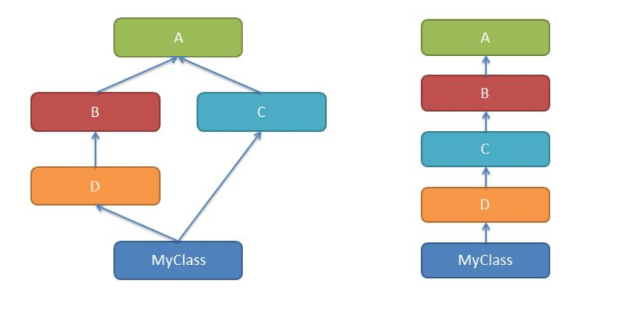
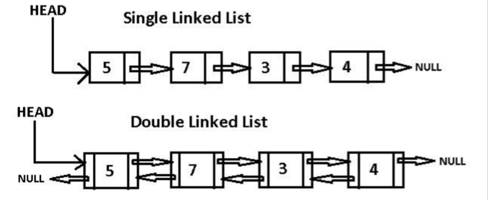

Python: 面向对象
- TAGS: Python
Python 面向过程编程
主要内容：
- 函数基本概念、形参、实参
- 函数的位置参数、关键字参数、参数默认值
- 函数的可变位置参数、可变关键字参数、Keyword-only 参数
- 函数的位置传参、关键字传参、参数结构
- 函数的 Return 语句及返回值
- 嵌套函数、函数作用域、global、闭包、nonlocal
- 参数缺省值的常见问题解决办法和__defaults__
- LEGB原理
- 函数执行流程和函数调用原理
- 递归函数概念和递归性能分析
- 匿名函数 Lambda 表达式概念及应用
- 生成器对象和生成器函数及 yield from
- 高阶函数概念和内建高阶函数应用
- 函数柯里化、无参装饰器、带参装饰器
- 装饰器的副作用及解决方法
- Python 的参数注解和 Inspect 模块应用
- Python 内置全局函数使用
- Functools 模块重要函数解析
Python函数
函数
数学定义
- y=f(x) ，y是x的函数，x是自变量。y=f(x0, x1, …, xn)
Python函数
- 由若干语句组成的语句块、函数名称、参数列表构成，它是组织代码的最小单元
- 完成一定的功能
函数的作用
- 结构化编程对代码的最基本的 封装 ，一般按照功能组织一段代码
- 封装的目的为了 复用 ，减少冗余代码
- 代码更加简洁美观、可读易懂
函数的分类
- 内建函数，如max()、reversed()等
- 库函数，如math.ceil()等
- 自定义函数，使用def关键字定义
函数定义
def 函数名(参数列表): 函数体（代码块） [return 返回值]
- 函数名就是标识符，命名要求一样
- 语句块必须缩进，约定4个空格
- Python的函数若没有return语句，会隐式返回一个None值
- 定义中的参数列表称为 形式参数 ，只是一种符号表达（标识符），简称
形参
函数调用
- 函数定义，只是声明了一个函数，它不能被执行，需要调用执行
- 调用的方式，就是 函数名后加上小括号 ，如有必要在括号内填写上参数
- 调用时写的参数是 实际参数 ，是实实在在传入的值，简称
实参
def add(x, y): # 函数定义，解析器扫过这段代码后，会立即生成一个函数对象，在内存堆中，用标识符add指代 result = x + y # 函数体 return result # 返回值 out = add(4,5) # 函数调用，可能有返回值，使用变量接收这个返回值 print(out) # print函数加上括号也是调用 print(callable(add), callabel(a)) # True, False
上面代码解释：
- 定义一个函数add，及函数名是add，能接受2个形式参数
- 该函数计算的结果，通过返回值返回，需要return语句
- 调用时，通过函数名add后加2个实际参数，返回值可使用变量接收
函数名也是标识符返回值也是值- 定义需要在调用前，也就是说调用时，已经被定义过了，否则抛NameError异常
- 函数是 可调用的对象 ，callable(add)返回True
看看这个函数是不是通用的？体会一下Python函数的好处
- 所有灵活性，是有代价的，双刃剑
- python 简单，所以类型错误问题。形参和返回值都不要写明类型
- python很多问题，都会在运行中显现出来，为时已晚
函数参数
函数在定义时要定义好形式参数，调用时也提供足够的实际参数，一般来说，形参和实参个数要一致（可变参数除外）。
实参传参方式
1、位置传参
定义时def f(x, y, z)， 调用使用 f(1, 3, 5)，按照参数定义顺序传入实参
2、关键字传参
定义时def f(x, y, z)，调用使用 f(x=1, y=3, z=5)，使用形参的名字来传入实参的方式，如果使用了形参名字，那么 传参顺序就可和定义顺序不同
要求位置参数必须在关键字参数之前 传入，位置参数是按位置对应的
范例
# coding: utf-8 # 传参，调用时，传入实际参数 #传参 就2种方式： #1. 位置传参，和形参依次对应 #2. 关键字传参，按照参数名称对应，与顺序无关 #这两种可以混合使用 #位置传参，不能跟在 关键字传参之后 def add(x, y): print(x,y) return x + y #调用时，传参，传入实参的简称 result = add(4, 5) # 位置传参 print(result) #4 5 #9 add(x=4, y=5) #关键字传参keyword，按参数名称对应，与顺序无关 add(4, y=5) # 正确 #add(x=[4], y=(5,)) #add(y=5, 4) # 错误传参。位置传参，不能跟在关键字之后 print(add) #把这个标识符对应的对象的字符串表达形式给人看 print(id(add), hex(id(add))) #: <function add at 0x000002AE0CFA6280> #: 2946565300864 0x2ae0cfa6280 d = dict({'a':1}, b=2, a=3) # dict 中参数按位置传参、按关键字传参 print(d) #: {'a': 3, 'b': 2}
切记：传参指的是调用时传入实参，就2种方式。
下面讲的都是形参定义。
形参缺省值
缺省值也称为默认值，可以在函数定义时，为形参增加一个缺省值。其作用：
- 参数的默认值可以在未传入足够的实参的时候，对没有给定的参数赋值为默认值
- 参数非常多的时候，并不需要用户每次都输入所有的参数，简化函数调用
def add(x=4, y=5): return x+y 测试调用 add()、add(x=5)、add(y=7)、add(6, 10)、add(6, y=7)、add(x=5, y=6)、add(y=5, x=6)、 #add(x=5, 6)、add(11, x=20) 不能多重赋值、add(y=8, 4) 传参时缺省值在后面 能否这样定义 def add(x, y=5) 或 def add(x=4,y) ？ def add(x=4, y) 报错，缺省值在后面
范例：登录函数
# 定义一个函数login，参数名称为host、port、username、password def login(host='localhost', port=3306, username='root', password='root'): print('mysql://{2}:{3}@{0}:{1}/'.format(host, port, username, password)) login() login('127.0.0.1') login('127.0.0.1', 3361, 'wayne', 'wayne') login('127.0.0.1', username='wayne') login(username='wayne', password='wayne', host='www.xxx.com')
可变参数
需求：写一个函数，可以对多个数累加求和
def sum(iterable): s = 0 for x in iterable: s += x return s print(sum([1,3,5])) print(sum(range(4)))
上例，传入可迭代对象，并累加每一个元素。
也可以使用可变参数完成上面的函数。
# coding: utf-8 def fn1(*nums): # * 可变形参，可以收多个实参，多个实参被收集到一个元组对象中，元组不可变 print(nums, type(nums)) s = 0 for x in nums: s += x return s fn1(1,2,3) # 按照位置传参 #: (1, 2, 3) <class 'tuple'> fn1() #: () <class 'tuple'>
1、可变位置参数
- 在形参前使用 * 表示该形参是可变位置参数，可以接受多个实参
- 它将收集来的实参组织到一个tuple中
2、可变关键字参数
- 在形参前使用 ** 表示该形参是可变关键字参数，可以接受多个关键字参数
- 它将收集来的实参的名称和值，组织到一个dict中
# coding: utf-8 def showconfig(**kwargs): # *args **kwargs print(type(kwargs), kwargs) # 可变关键字参数收集关键字传参，收集成字典 kv，字典可变 # 内部，你能传入变量名我们有要求，对kwargs处理，'username' in kwargs.keys()\pop(key) for k,v in kwargs.items(): print('{}={}'.format(k,v), end=', ') showconfig() #: <class 'dict'> {} showconfig(host='127.0.0.1', port=8080, username='wayne', password='xxx')
混合使用
可以定义为下列方式吗？ def showconfig(username, password, *args) # 只接受可变位置参数 def showconfig(username, password, **kwargs) # 只接受可变关键字参数 def showconfig(username, *args, **kwargs) #位置传参被args占用，关键字传参被kwargs占用 def showconfig(username, password, **kwargs, *args) # ? 报错，*args在前面 def showconfig(*args, **kwargs) # 接收所有参数
总结：
- 有可变位置参数和可变关键字参数
- 可变位置参数在形参前使用一个星号*
- 可变关键字参数在形参前使用两个星号**
- 可变位置参数和可变关键字参数都可以收集若干个实参，可变位置参数收集形成一个tuple，可变
- 关键字参数收集形成一个dict
- 混合使用参数的时候，普通参数需要放到参数列表前面，可变参数要放到参数列表的后面，可变位置参数需要在可变关键字参数之前
范例：
# coding: utf-8 def fn(x, y, *args, **kwargs): #print(x, y, args, kwargs, sep='\n', end='\n\n') print(x, y, args, kwargs) # fn() fn(range(5)) 不能，range(5) 表示一个对象 fn(1,2), fn(1,2,3), fn(1,2,3,4), fn(1, 2, a=100) #: 1 2 () {} #: 1 2 (3,) {} #: 1 2 (3, 4) {} #: 1 2 () {'a': 100} fn(3, 5, 7, 9, 10, a=1, b='abc') fn(y=5, a=5, x=4) fn(3, 5, a=1, b='abc') #fn(x=3, y=8, 7, 9, a=1, b='abc') # ? 报错， 位置传参写在关键字之前 #fn(7, 9, y=5, x=3, a=1, b='abc') # ? 摄报错，重复传参
fn(x=3, y=8, 7, 9, a=1, b='abc')，错在位置传参必须在关键字传参之前
fn(7, 9, y=5, x=3, a=1, b='abc')，错在7和9已经按照位置传参了，x=3、y=5有重复传参了
keyword-only参数
先看一段代码
# keyword-only 仅仅能关键字传参的形参 # 在 * 号后的参数 def fn(*args, x, y, **kwargs): print(x, y, args, kwargs, sep='\n', end='\n\n') fn(3, 5) # 报错 fn(3, 5, 7) # 报错 fn(3, 5, a=1, b='abc') # 报错 fn(3, 5, y=6, x=7, a=1, b='abc')
在Python3之后，新增了keyword-only参数。
keyword-only参数：在形参定义时，在一个*星号之后，或一个可变位置参数之后，出现的普通参数，就已经不是普通的参数了，称为keyword-only参数。
def fn(*args, x): print(x, args, sep='\n', end='\n\n') fn(3, 5) # 报错, 3 5 都传给args， x y 没有传参 fn(3, 5, 7) # 报错 fn(3, 5, x=7)
keyword-only参数，言下之意就是这个参数必须采用关键字传参。
可以认为，上例中，args可变位置参数已经截获了所有位置参数，其后的变量x不可能通过位置传参传入了。
思考：def fn(**kwargs, x) 可以吗？ 不可以，直接语法错误
def fn(**kwargs, x):
print(x, kwargs, sep='\n', end='\n\n')
可以认为，kwargs会截获所有关键字传参，就算写了x=5，x也没有机会得到这个值，所以这种语法不存在。
keyword-only参数另一种形式
'*' 星号后所有的普通参数都成了keyword-only参数。
def fn(*, x, y): print(x, y) fn(x=6, y=7) fn(y=8, x=9) def fn2(a, *, x, y): print(a, x, y) fn2(1, y=2, x=3) #: 6 7 #: 9 8 #: 1 3 2
Positional-only参数
Python 3.8 开始，增加了最后一种形参类型的定义：Positional-only参数。（2019年10月发布3.8.0）
/ 之前接收位置传参。
# coding: utf-8 def fn(a, /): print(a, sep='\n') fn(3) #fn(a=4) # 错误，仅位置参数，不可以使用关键字传参 def fn(a, /, b): print(a, b) fn(1, 2) fn(1, b=2) #fn(a=1, b=2) #报错 def fn(a, b=2, /): print(a, b) fn() #fn(1, b=3) #报错
范例：
# coding: utf-8 def fn(a, b, /, x, y, z=6, *args, m=4, n, **kwargs): # *号后面，只接收关键字传参。n print(a, b) print(x, y, z) print(args) print(m, n) print(kwargs) fn(1, 2, 3, 4, 5, 6, n=10) #: 1 2 #: 3 4 5 #: (6,) #: 4 10 #: {} fn(1, 2, n=20, x=5, y=6, t=10 #1 2 #5 6 6 #() #4 20 #{'t': 10}
参数的混合使用
# 可变位置参数、keyword-only参数、缺省值 def fn(*args, x=5): print(x) print(args) fn() # 等价于fn(x=5) fn(5) # 5给了args fn(x=6) fn(1,2,3,x=10)
# 普通参数、可变位置参数、keyword-only参数、缺省值 def fn(y, *args, x=5): print('x={}, y={}'.format(x, y)) print(args) fn() #报错，y 必须给 fn(5) fn(5, 6) #6给了args fn(x=6) #报错，y 没给 fn(1, 2, 3, x=10) #y=1, (2,3)给了args, x=10 fn(y=17, 2, 3, x=10) #语法错误，关键字在后面 fn(1, 2, y=3, x=10) #错误，重复传参 fn(y=20, x=30)
# 普通参数、缺省值、可变关键字参数 def fn(x=5, **kwargs): print('x={}'.format(x)) print(kwargs) fn() fn(5) fn(x=6) fn(y=3, x=10) fn(3, y=10) fn(y=3, z=20)
参数规则
参数列表参数一般顺序是：positional-only参数、普通参数、缺省参数、可变位置参数、keyword-only参数（可带缺省值）、可变关键字参数。
注意：
- 代码应该易读易懂，而不是为难别人
- 请按照书写习惯定义函数参数
# a和b是仅位置参数，只能用在python3.8后 def fn(a, b, /, x, y, z=3, *args, m=4, n, **kwargs): print(a, b) print(x, y, z) print(m, n) print(args) print(kwargs) print('-' * 30) def connect(host='localhost', user='admin', password='admin', port='3306',**kwargs): print('mysql://{}:{}@{}:{}/{}'.format( user, password, host, port, kwargs.get('db', 'test') )) connect('127.0.0.1', 'admin', 'abcdef', debug=True, db='blog') connect(db='cmdb') # 参数的缺省值把最常用的缺省值都写好了 connect(host='192.168.1.123', db='cmdb') connect(host='192.168.1.123', db='cmdb', password='mysql')
- 定义最常用参数为普通参数，可不提供缺省值，必须由用户提供。注意这些参数的顺序，最常用的先定义
- 将必须使用名称的才能使用的参数，定义为keyword-only参数，要求必须使用关键字传参
- 如果函数有很多参数，无法逐一定义，可使用可变参数。如果需要知道这些参数的意义，则使用可变关键字参数收集
参数解构
def add(x, y): print(x, y) return x + y add(4, 5) #add((4, 5)) # 可以吗？ 不可以，元组算一个参数 t = 4, 5 add(t[0], t[1]) add(*t) # 参数解析，调用时，对实参前加入 * 号 add(*(4, 5)), add(*'ab'), add(*b'xy'), add(*[4, 5]) add(*{4, 5}) # 注意有顺序吗？ 无序 add(*range(4, 6)) add(*{'a':10, 'b':11}) # 可以吗？ 可以，相当key在解构 >3.6后记住了key的顺序，'ab' add(**{'a':10, 'b':11}) # 可以吗？ 不可以，** 是关键字解构。 #**{'x':1, 'y':2} #参数解构只能用在实参的传递的时候 add(**{'x':100, 'y':110}) # 可以吗？
参数解构：
- 在给函数提供实参的时候，可以在可迭代对象前使用 * 或者 ** 来进行结构的解构，提取出其中所有元素作为函数的实参
- 使用 * 解构成位置传参
- 使用 ** 解构成关键字传参
- 提取出来的元素数目要和参数的要求匹配
def add(*nums): result = 0 for x in nums: result += x return result add(1, 2, 3) add(*[1, 3, 5]) add(*range(5)) add(*range(5), 100, *[20]) #add(0,1,2,3,4,100,20) # 展开后传参
# 3.8以后，下面就不可以使用字典解构后的关键字传参了 def add(x, y, /): # 仅位置形参 print(x, y) return x + y add(**{'x':10, 'y':11}) #报错。 仅位置传参
函数返回值
先看几个例子
# return语句之后可以执行吗？ def showplus(x): print(x) return x + 1 print('~~end~~') # return之后会执行吗？ 执行不到 showplus(5) # 多条return语句都会执行吗 def showplus(x): print(x) return x + 1 return x + 2 # 执行不到 showplus(5) # 下例多个return可以执行吗？ def guess(x): if x > 3: return "> 3" else: return "<= 3" print(guess(10)) # 下面函数执行的结果是什么 def fn(x): for i in range(x): if i > 3: return i else: print("{} is not greater than 3".format(x)) print(fn(5)) # 打印什么？ 4 print(fn(3)) # 打印什么？ 返回None
总结
- Python函数使用return语句返回“返回值”
- 所有函数都有返回值，如果没有return语句，隐式调用return None
- return 语句并不一定是函数的语句块的最后一条语句
- 一个函数可以存在多个return语句，但是只有一条可以被执行。如果没有一条return语句被执行到，隐式调用return None
- 如果有必要，可以显示调用return None，可以简写为return
- 如果函数执行了return语句，函数就会返回，当前被执行的return语句之后的其它语句就不会被执行了
- 返回值的作用：结束函数调用、返回“返回值”
能够一次返回多个值吗？
def showvalues(): return 1, 3, 5 showvalues() # 返回了多个值吗？ 一个值
- 函数不能同时返回多个值
- return 1, 3, 5 看似返回多个值，隐式的被python封装成了一个元组
- x, y, z = showlist() 使用解构提取返回值更为方便
练习
- 编写一个函数，能够接受至少2个参数，返回最小值和最大值
- 完成一个函数，可以接收输入的多个数（命令输入，数字间隔可以使用空格或逗号），每一次都能返回到目前为止的最大值、最小值。
- 编写一个函数，能够接受至少2个参数，返回最小值和最大值
# coding: utf-8 def fn(*args): if len(args)<2: # 不优雅 raise TypeError #pass def get1(x, y, *args): #max, min return min(x, y, *args), max(x, y, *args) get1(4, 5, *range(5)) #有什么问题？ #1 遍历了2次，解决方案1次遍历 #2 解构的问题 def get2(x, y, *args): ms, *_, mx = sorted((x,y,*args)) return ms, mx get2(4, 5, *range(5)) # get1 时间复杂度为 O(2n)，get2 时间复杂度0(n^2) # 测试使用无序的参数，sorted 内部做了优化 lst= list(range(10000)) import random random.shuffle(lst) random.shuffle(lst) %%timeit get1(4,5,*lst) #6xxms %%timeit get2(4,5,*lst) #1s def get3(x, y, *args): ms, mx = min(args), max(args) return min(x,y,ms), max(x,y,mx) %%timeit get3(4,5,*lst) #4xxms # 一次性遍历，不依赖内建函数 def get4(x, y, *args): min_, max_ = (y, x) if x > y else (x, y) for x in args: if x > max: max_ = x elif x < min_: min_ = x return min_, max_ %%timeit get3(4,5,*lst) #3xxms
- 完成一个函数，可以接收输入的多个数（命令输入，数字间隔可以使用空格或逗号），每一次都能返回到目前为止的最大值、最小值。
# coding: utf-8 #input('>>>').replace(',', ' ').split() #列表 def double_values(): mx = ms = None while True: x = input('>>>').strip() if x == '' or x == 'quit': break nums = [int(t) for t in x.replace(',', ' ').split()] #列表，有可能是空 if nums: # 说明有成功转换的数据在列表中 if mx is None: #不但是第一次，而且第一次有数据才进来 mx = ms = nums[0] a, b = min(nums), max(nums) if b > mx: mx = b if a < ms: ms = a print(ms, mx)
返回值作用域
函数作用域***
作用域
一个标识符的可见范围，这就是标识符的作用域。一般常说的是变量的作用域
def foo(): x = 100 print(x) # 可以访问到吗
上例中x不可以访问到，会抛出异常（NameError: name 'x' is not defined），原因在于函数是一个封装，它会开辟一个 作用域 ，x变量被限制在这个作用域中，所以在函数外部x变量 不可见 。
注意： 每一个函数都会开辟一个作用域
作用域分类
- 全局作用域
- 在整个程序运行环境中都可见
- 全局作用域中的变量称为 全局变量 global
- 局部作用域
- 在函数、类等内部可见
- 局部作用域中的变量称为 局部变量 ，其使用范围不能超过其所在局部作用域
- 也称为本地作用域local
# 局部变量 def fn1(): x = 1 # 局部作用域，x为局部变量，使用范围在fn1内 def fn2(): print(x) # x能打印吗？可见吗？为什么？ print(x) # x能打印吗？可见吗？为什么？ 不可见，x 的可见范围就在fn1函数里。全局环境中没有定义x
# coding: utf-8 # 全局变量 x = 5 # 全局变量，也在函数外定义 def foo(): y = x + 1 print(x) # 可见吗？为什么？ 可见。函数局部变量，对外不可见；外部对内可见，向内穿透 print(y) foo() #: 5 #: 6
- 一般来讲外部作用域变量可以在函数内部可见，可以使用
- 反过来，函数内部的局部变量，不能在函数外部看到
函数嵌套
在一个函数中定义了另外一个函数
def outer(): def inner(): print("inner") inner() print("outer") outer() # 可以吗？ 可以 inner() # 可以吗？ 内部函数不能在外部直接使用，因为它在函数外部不可见
内部函数inner不能在外部直接使用，会抛NameError异常，因为它在函数外部不可见。
其实，inner不过就是一个标识符，就是一个函数outer内部定义的变量而已。
嵌套结构的作用域
对比下面嵌套结构，代码执行的效果
# coding: utf-8 def outer1(): o = 65 def inner(): print('inner', o, chr(o)) inner() print('outer', o, chr(o)) outer1() # 执行后，打印什么 #: inner 65 A #: outer 65 A def outer2(): o = 65 def inner(): o = 97 print('inner', o, chr(o)) inner() print('outer', o, chr(o)) outer2() # 执行后，打印什么 #: inner 97 a #: outer 65 A
从执行的结果来看：
- 外层变量在内部作用域可见
- 内层作用域inner中，如果定义了 o = 97 ，相当于在当前函数inner作用域中重新定义了一个新的变量o，但是，这个o并不能覆盖掉外部作用域outer2中的变量o。只不过对于inner函数来说，其只能可见自己作用域中定义的变量o了
内建函数chr, ord
| 内建函数 | 函数签名 | 说明 |
| chr | chr(i) | 通过unicode编码返回对应字符 |
| ord | ord(c) | 获得字符对应的unicode |
print(ord('中'), hex(ord('中')), '中'.encode(), '中'.encode('gbk')) chr(20013) # '中' chr(97)
一个赋值语句的问题
再看下面左右2个函数
左边函数： 正常执行，函数外部的变量在函数内部可见
右边函数： 执行错误吗，为什么？难道函数内部又不可见了？y = x + 1可以正确执行，可是为什么x += 1却不能正确执行？
仔细观察函数2返回的错误指向x += 1，原因是什么呢？
x = 5 def foo(): x += 1 foo() # 报错如下， UnboundLocalError
原因分析：
- x += 1 其实是 x = x + 1
- 只要有"x="出现，这就是赋值语句。相当于在foo内部定义一个局部变量x，那么foo内部所有x都是这个局部变量x了
- x = x + 1 相当于使用了局部变量x，但是这个x还没有完成赋值，就被右边拿来做加1操作了
x = 5 def foo(): # 函数被解释器解释，foo指向函数对象，同时解释器会理解x是什么作用域 print(x) # x 在函数解析时就被解释器判定为局部变量 x += 1 # x = x + 1 foo() # 调用时
如何解决这个常见问题？
global语句
# coding: utf-8 x = 5 def foo(): global x # 全局变量。 将x声明为全局变量 x += 1 print(x) foo() #: 6
- 使用global关键字的变量，将foo内的x声明为使用外部的全局作用域中定义的x
- 全局作用域中必须有x的定义
如果全局作用域中没有x定义会怎样？
注意，下面试验如果在ipython、jupyter中做，上下文运行环境中有可能有x的定义，稍微不注意，就测试不出效果
# 有错吗？ def foo(): global x x += 1 print(x) foo()
# 有错吗？ def foo(): global x x = 10 x += 1 print(x) foo() print(x) # 可以吗
使用global关键字定义的变量，虽然在foo函数中声明，但是这将告诉当前foo函数作用域，这个x变量将使用外部全局作用域中的x。
即使是在foo中又写了 x = 10 ，也不会在foo这个局部作用域中定义局部变量x了。
使用了global，foo中的x不再是局部变量了，它是全局变量。
总结
- x+=1 这种是特殊形式产生的错误的原因？先引用后赋值，而python动态语言是赋值才算定义，才能被引用。 解决办法，在这条语句前增加x=0之类的赋值语句，或者使用global 告诉内部作用域，去全局作用域查找变量定义
- 内部作用域使用 x = 10 之类的赋值语句会重新定义局部作用域使用的变量x，但是，一旦这个作用域中使用 global 声明x为全局的，那么x=5相当于在为全局作用域的变量x赋值
global使用原则
- 外部作用域变量会在内部作用域可见，但也不要在这个内部的局部作用域中直接使用，因为函数的目的就是为了封装，尽量与外界隔离
- 如果函数需要使用外部全局变量，请尽量使用函数的形参定义，并在调用传实参解决
- 一句话： 不用global 。学习它就是为了深入理解变量作用域
闭包***
自由变量 ：未在本地作用域中定义的变量。例如定义在内层函数外的外层函数的作用域中的变量
闭包 ：就是一个概念，出现在嵌套函数中，指的是 内层函数引用到了外层函数的自由变量 ，就形成了闭包。很多语言都有这个概念，最熟悉就是JavaScript
# coding: utf-8 def counter(): c = [0] def inc(): c[0] += 1 return c[0] return inc #有意为之，就是要返回函数，函数用foo变量记住，c闭包必需保留 #出错吗？ #有闭包吗？ foo = counter() #? 可执行，不出错。foo 就是 inc，但是counter已经调用结束，内部局部变量按道理要消亡 print(foo(), foo()) #? 1 2 foo指向inc函数对象，没有被释放。c[0] 是闭包上的c c = 100 print(foo()) #? 3 foo中的c是局部变量，随着counter()函数执行完，c标识符已经消亡了
def counter(): c = [0] def inc(): c[0] += 1 # 报错吗？ 为什么 # line 4 return c[0] return inc foo = counter() # line 8 print(foo(), foo()) # line 9 c = 100 print(foo()) # line 11
上面代码有几个问题：
- 第4行会报错吗？为什么
- 第9行打印什么结果？
- 第11行打印什么结果？
代码分析
- 第8行会执行counter函数并返回inc对应的函数对象，注意这个函数对象并不释放，因为有foo记着
- 第4行会报错吗？为什么
- 不会报错，c已经在counter函数中定义过了。而且inc中的使用方式是为c的元素修改值，而不是重新定义c变量
- 第9行打印什么结果？
- 打印 1 2
- 第11行打印什么结果？
- 打印 3
- 第9行的c和counter中的c不一样，而inc引用的是自由变量正是counter中的变量c

这是Python2中实现闭包的方式，Python3还可以使用nonlocal关键字
再看下面这段代码，会报错吗？使用global能解决吗？
def counter(): count = 0 def inc(): count += 1 return count return inc foo = counter() print(foo(), foo())
上例一定出错，使用gobal可以解决
def counter(): global count count = 0 def inc(): global count count += 1 return count return inc foo = counter() print(foo(), foo()) count = 100 print(foo()) # 打印几？
上例 使用global解决，这是全局变量的实现，而不是闭包了 。
如果要对这个普通变量使用闭包，Python3中可以使用nonlocal关键字。
nonlocal语句
nonlocal：将变量标记为不在本地作用域定义，而是在 上级的某一级局部作用域 中定义，但 不能是全局作用域 中定义，否则报语法错误。
def counter(): #python3 中比较简单实现闭包方式 count = 0 def inc(): nonlocal count # 声明变量count不是本地变量 count += 1 return count return inc foo = counter() print(foo(), foo())
count 是外层函数的局部变量，被内部函数引用。
内部函数使用nonlocal关键字声明count变量在上级作用域而非本地作用域中定义。
代码中内层函数引用外部局部作用域中的自由变量，形成闭包。
def func(): nonlocal d d = 100 # 直接报语法错误，d 向外找就是全局了。nonlocal 不能找全局变量

上例是错误的，nonlocal 声明变量 a 不在当前作用域，但是往外就是全局作用域了，所以错误。
默认值的作用域
# coding: utf-8 def foo(x=1): x += 1 #有问题吗？没有。x= 出现了，x就是foo函数的局部变量 print(x) foo() foo() #: 2 #: 2
# coding: utf-8 def foo1(y=[]): #[]是引用类型 y.append(1) # y是局部变量，y参数不提供就使用缺省值，缺省值在哪里？保存在函数对象上 print(y) foo1() foo1() #print(y) # 报错 NameError，当前作用域没有y变量 #: [1] #: [1, 1] #不用缺省值 foo1([]) foo1([]) foo1([]) #: [1] #: [1] #: [1] #查看缺省值 print(foo1.__defaults__) #缺省值保存在元组中，元组1个元素，是列表 #: ([1, 1],)
为什么第二次调用foo函数打印的是[1,1]？
- 因为函数也是对象，python把函数的默认值放在了属性中，这个属性就伴随着这个函数对象的整个生命周期
- 查看
foo.__defaults__属性
# coding: utf-8 def foo2(x='abc', y=123, z=[1,2]): x += '~' y += 100 z.append(100) print(x, y, z) print(foo2.__defaults__) #元组和顺序有关，顺序对应形参缺省值 foo2() print(foo2.__defaults__) foo2() #: ('abc', 123, [1, 2]) #: abc~ 223 [1, 2, 100] #: ('abc', 123, [1, 2, 100]) #: abc~ 223 [1, 2, 100, 100]
属性 __defaults__ 中使用元组保存所有位置参数默认值，它不会因为在函数体内使用了它而发生改变
# coding: utf-8 def foo3(x=1, *args, m=10, n, **kwargs): print(x, m, n, args, kwargs) print(foo3.__defaults__, foo3.__kwdefaults__) # kwdeaults 使用了字典 foo3(n=200)
- 属性
__defaults__中使用元组保存所有位置参数默认值 - 属性
__kwdefaults__中使用字典保存所有keyword-only参数的默认值
# coding: utf-8 def foo4(x=[]): x += [1] print(x) print(1, foo4()) print(1, foo4()) print(foo4.__defaults__) #: [1] #: 1 None #: [1, 1] #: 1 None #: ([1, 1],) def foo5(x=[]): x = x + [1] print(x) print(1, foo5()) print(1, foo5()) print(foo5.__defaults__) #: [1] #: 1 None #: [1] #: 1 None #: ([],)
# coding: utf-8 x = [] print(1, id(x), x) x += [1] #x.extend([1]) x += [1] print(2, id(x), x) #: 1 1788996419520 [] #: 2 1788996419520 [1, 1] x = [] print(1, id(x), x) x = x + [1] # 生成一个全新的列表，覆盖x。 print(2, id(x), x) x = x + [1] print(3, id(x), x) #: 1 1788996832768 [] #: 2 1788996845440 [1] #: 3 1788996419520 [1, 1]
x += [1] 和 x = x + [1] 不一样 x += [1] 就地修改 x = x + [1] 生成一个新对象覆盖x
列表的 + 和 += 的区别：
- +表示两个列表合并并返回一个全新的列表
- +=表示，就地修改前一个列表，在其后追加后一个列表。就是extend方法
对于不可变类型 += 是什么？ 可变类型 += 又是什么？
# coding: utf-8 a = list(range(2)) print(id(a), a) a += [10] #扩展 print(id(a), a) #地址没变 a = a + [20] #生成新列表，覆盖 print(id(a), a) #地址变了 #: 2165479670400 [0, 1] #: 2165479670400 [0, 1, 10] #: 2165479656960 [0, 1, 10, 20] a = tuple(range(2)) print(id(a), a) a += (10,) #对于不可变类型元组来讲，将 += 转变为 a = a + (10,) print(id(a), a) #地址变了 a = a + (20,) print(id(a), a) #地址变了 #: 2165479670336 (0, 1) #: 2165479519936 (0, 1, 10) #: 2165479604768 (0, 1, 10, 20) x = 1 x += 1 # x += 1 => x = x + 1
对于不可变类型 += 是转变成 = + 对于可变类型 += 分为就地修改和覆盖
变量名解析原则LEGB***
- Local，本地作用域、局部作用域的local命名空间。函数调用时创建，调用结束消亡
- Enclosing，Python2.2时引入了嵌套函数，实现了闭包，这个就是嵌套函数的外部函数的命名空间
- Global，全局作用域，即一个模块的命名空间。模块被import时创建，解释器退出时消亡
- Build-in，内置模块的命名空间，生命周期从python解释器启动时创建到解释器退出时消亡。例如print(open)，print和open都是内置的变量
所以一个名词的查找顺序就是LEGB

函数的销毁
定义一个函数就是生成一个函数对象，函数名指向的就是函数对象。
可以使用del语句删除函数，使其引用计数减1。
可以使用同名标识符覆盖原有定义，本质上也是使其引用计数减1。
Python程序结束时，所有对象销毁。
函数也是对象，也不例外，是否销毁，还是看引用计数是否减为0。
| 内建函数 | 函数签名 | 说明 |
| iter | iter(iterable) | 把一个可迭代对象包装成迭代器 |
| next | next(iterable[,default]) | 取迭代器下一个元素。如果已经取完，继续取抛StopIteration异常 |
| reversed | reversed(seq) | 返回一个翻转元素的迭代器 |
| enumerate | enumerate(seq,start=0) | 迭代一个可迭代对象，返回一个迭代器。每一个元素都是数字和元素构成的二元组 |
迭代器
- 特殊的对象，一定是可迭代对象，具备可迭代对象的特征
- 通过iter方法把一个可迭代对象封装成迭代器
- 通过next方法，获取 迭代器对象的一个元素
- 生成器对象，就是迭代器对象。但是迭代器对象未必是生成器对象
可迭代对象
- 能够通过迭代一次次返回不同的元素的对象
- 所谓相同，不是指值是否相同，而是元素在容器中是否是同一个，例如列表中值可以重复的，['a', 'a']，虽然这个列表有2个元素，值一样，但是两个'a'是不同的元素
- 可以迭代，但是未必有序，未必可索引
- 可迭代对象有：list、tuple、string、bytes、bytearray、range、set、dict、生成器、迭代器等
- 可以使用成员操作符in、not in
- 对于线性数据结构，in本质上是在遍历对象，时间复杂度为O(n)
lst = [1, 3, 5, 7, 9] it = iter(lst) # 返回一个迭代器对象 print(next(it)) print(next(it)) for i, x in enumerate(it, 2): print(i, x) #print(next(it)) # StopIteration print() for x in reversed(lst): print(x) # 比较下面的区别，说明原因？ it = iter(lst) print(1 in it) print(1 in it) print(1 in lst) print(1 in lst)
匿名函数
python 中，使用 Lambda表达式构建匿名函数。
lambda : 0
# coding: utf-8 fn = lambda : 0 # python 不太推荐 def fn(x): x += 1 return x def fn(x): return x + 1 fn = lambda x: x + 1 # lambda中不能出现=，更不能出现 return，冒号后是一个表达式，表达式计算的结果作为该匿名函数的返回值 def add(x, y): return x + y print( (lambda x,y: x + y)(4, 5) ) print( (lambda x,y=2: x + y)(x=3) ) print( (lambda *,x,y: x + y)(x=3,y=5) ) # lambda表达式，一般不这样用，用在高阶函数中。 #: 9 #: 5 #: 8 #print( [lambda *args: args](4, 5, 6) ) #报错 print( [lambda *args: args][0](4, 5, 6) ) #: (4, 5, 6) g = (lambda *args: (x for x in args))(1,2,3) #生成器对象 print(next(g)) print(next(g)) #: 1 #: 2 import random g2 = (lambda *args: {x%3 for x in args})(*[random.randint(1, 1000) for i in range(5)]) # 集合set会去重 print(g2)
lambda函数应用：
- 高阶函数
# coding: utf-8 # 字符串比较 s = sorted(['a', 1, 'b', 12, 'c', 28], key=str) #对每一个元素做str(item)，接收一个参数，返回一个字符串 print(s) #: [1, 12, 28, 'a', 'b', 'c'] s = sorted(['a', 1, 'b', 12, 'c', 28], key=lambda item: str(item)) print(s) #: [1, 12, 28, 'a', 'b', 'c'] #16进制比较大小 def a(x): return int(x, 16) if isinstance(x, str) else x s = sorted(['a', 1, 'b', 12, 'c', 28], key=a) print(s) #: [1, 'a', 'b', 12, 'c', 28] s = sorted(['a', 1, 'b', 12, 'c', 28], key=lambda x: int(x, 16) if isinstance(x, str) else x) print(s) #: [1, 'a', 'b', 12, 'c', 28] print(int('a', 16)) #将16进制数 a 转变为10进制数，为10
# coding: utf-8 from collections import defaultdict d = defaultdict(list) d[0].extend((1,2,3)) print(d) #: defaultdict(<class 'list'>, {0: [1, 2, 3]}) #等价于 from collections import defaultdict d = defaultdict(lambda :[]) # (lambda :[])() d[0].extend((1,2,3)) #: 0:[] (lambda :list())() => [] print(d) #: defaultdict(<function <lambda> at 0x00000297BC826280>, {0: [1, 2, 3]})
- 使用lambda关键字定义匿名函数，格式为
lambda [参数列表]: 表达式 - 参数列表不需要小括号。无参数就不写
- 冒号用来分割参数列表和表达式部分
- 不需要使用return。表达式的值，就是匿名函数的返回值。表达式中不能出现等号
- lambda表达式(匿名函数) 只能写在一行上 ，也称为单行函数
递归函数
函数执行流程
函数的活动和栈有关。
栈是后进先出的数据结构。
栈是从底向顶端生长，栈中插入数据称为压栈、入栈，从栈顶弹出数据称为出栈。
C语言中，每个栈帧对应着一个未运行完的函数。栈帧中保存了该函数的返回地址和局部变量。
函数的每一次调用都会创建一个独立的栈帧(Stack Frame)入栈。
因此，可以得到这样一句 不准确 的话： 哪怕是同一个函数两次调用，每一次调用都是独立的，这两次调用没什么关系。
注： 函数执行过程辅助网站： http://pythontutor.com/visualize.html，请不要过分依赖这个网站
# coding: utf-8 def foo1(b, b1=3): print("foo1 called", b, b1) def foo2(c): foo3(c) print("foo2 called", c) def foo3(d): print("foo3 called", d) def main(): print("main called") foo1(100,101) foo2(200) print("main ending") main() #: main called #: foo1 called 100 101 #: foo3 called 200 #: foo2 called 200 #: main ending
栈
foo3 foo2 main <moudule>
递归
RECURSION
- 函数直接或者间接调用自身就是递归
- 递归需要有边界条件、递归前进段、递归返回段
- 递归一定要有
边界条件 - 当边界条件不满足的时候，递归前进
- 当边界条件满足的时候，递归返回
斐波那契数列递归
斐波那契数列Fibonacci number: 1, 1, 2, 3, 5, 8, 13,…
如果设F(n) 为该数列的第n项( \(n \epsilon n^*\) )，那么这句话可以写成如下形式：F(n)=F(n-1)+F(n-2)
有F(0)=0, F(1)=1, F(n)=F(n-1)+F(n-2)
# coding: utf-8 def fib(n): #a, b = 1, 1 a = b = 1 for i in range(n-2): #fib(3) 循环一下 a, b = b, a+b return b print(fib(3))
使用递归
def fib2(n): #递归 return fib2(n-1) + fib2(n-2) # 递归必需有边界，因为栈空间有限。 fib(3) # RecursionError 递归异常，maximum recursion depth exceeded, 递归层次太深 # 栈超界，Python 中为了防止栈溢出，提供了调用深度限制，默认1000，IPython 3000
# coding: utf-8 def fib2(n): #递归 if n < 3: return 1 return fib2(n-1) + fib2(n-2) # 递归必需有边界，因为栈空间有限 print(fib2(3))
递归要求
- 递归一定要有退出条件，递归调用一定要执行到这个退出条件。没有退出条件的递归调用，就是无限调用
- 递归调用的深度不宜过深
- Python 对递归调用的深度做了限制，以保护解释器
- 超过递归深度限制，抛出RecursionError: maxinum recursion depth exceeded 超出最大深度
- sys.getrecursionlimit() 查看深度限制
递归效率
- 循环稍微复杂一些，但是只要不是死循环，可以多次迭代直至算出结果。
- fib函数代码极简易懂，但是只能获取到最外层的函数调用，内部递归结果都是中间结果。而且给定一个n都要进行近2n次递归，尝试越深，效率越低。为了获取斐波那契数列需要外面在套一个n次的循环就是更低了。
- 递归还有深度限制，如果递归复杂，函数反复压栈，栈内存很快溢出了。
思考：这个极简的递归代码能否提高性能呢？？
# coding: utf-8 def fib_v3(n, a=1, b=1): #用递归调用次数来模拟循环次数 if n < 3: return b # 累计计算结果 a, b = b, a+b return fib_v3(n-1, a, b) def fib_v3(n, a=1, b=1): #用递归调用次数来模拟循环次数 if n < 3: return b # 累计计算结果 return fib_v3(n-1, b, a+b) def fib_v3(n, a=1, b=1): #用递归调用次数来模拟循环次数 if n < 3: return b # 累计计算结果 else: return fib_v3(n-1, b, a+b) def fib_v3(n, a=1, b=1): #用递归调用次数来模拟循环次数 if n < 3: return b # 累计计算结果 return b if n<3 else fib_v3(n-1, b, a+b) for i in range(3, 10): print(i, fib_v3(i)) #: 3 2 #: 4 3 #: 5 5 #: 6 8 #: 7 13 #: 8 21 #: 9 34
def fib(n):
#a, b = 1, 1
a = b = 1
for i in range(n-2): #fib(3) 循环一下
a, b = b, a+b
return b
def fib_v3(n, a=1, b=1): #用递归调用次数来模拟循环次数
if n < 3:
return b # 累计计算结果
return b if n<3 else fib_v3(n-1, b, a+b)
%%timeit n=101
fib(n) # 8.62us
%%timeit n=101
fib_v3(n) #28.5us 时间消耗在压栈
间接递归
def foo1(): foo2() def foo2(): foo1() foo1()
间接递归调用，是函数通过别的函数调用了自己，这样是递归。
只要是递归调用，不管是直接还是间接，都要注意边界返回问题。但是间接递归调用有时候是非常明显，代码调用复杂时，很难发现出现了递归调用，这是非常危险的。
所以，使用良好的代码规范来避免这种递归的发生。
总结
- 递归是一种很自然的表达，符合逻辑思维
- 递归相对运行效率低，每一次调用函数都要开辟栈帧
- 递归有深度限制，如果递归层次太深，函数连续压栈，栈内存很快就溢出了
- 如果是有限次数的递归，可以使用递归调用，或者使用循环代替，循环代码稍微复杂一些，但是只要不是死循环，可以多次迭代直至算出结果
- 即使递归代码很简洁，但是 能不用则不用递归
练习
使用递归实现
- 求n的阶乘
- 将一个数逆序放入列表中，例如1234 => [4,3,2,1]
解决猴子吃桃问题
猴子第一天摘下若干个桃子，当即吃了一半，还不过瘾，又多吃了一个。第二天早上又将剩下的桃子吃掉一半，又多吃了一个。以后每天早上都吃了前一天剩下的一半零一个。到第 10 天早上想吃时，只剩下一个桃子了。求第一天共摘多少个桃子。
递归的解法，一般来说有2种：
- 一种如同数学公式
- 一种类似循环，相当于循环的改版，将循环迭代，变成了函数调用压栈
求n的阶乘
# coding: utf-8 #阶乘公式。三元表达式 def factorial(n): # if n == 1: # return 1 # elif n == 2: # return 2 # if n == 2: # return 2 if n < 3: return n return n * factorial(n-1) #公式 def factorial(n): return n if n < 3 else n * factorial(n-1) print(factorial(3)) #循环 def factorial(n=6): p = 1 for i in range(1, n+1): p *= i return p def factorial(n=6, p=1): #将上次结果带入 if n == 1: return p return factorial(n-1, p * n) def factorial(n=6, p=1): #将上次结果带入 return p if n == 1 else factorial(n-1, p * n) print(factorial(6))
解决猴子吃桃问题
猴子第一天摘下若干个桃子，当即吃了一半，还不过瘾，又多吃了一个。第二天早上又将剩下的桃子吃掉一半，又多吃了一个。以后每天早上都吃了前一天剩下的一半零一个。到第 10 天早上想吃时，只剩下一个桃子了。求第一天共摘多少个桃子。
# coding: utf-8 #循环版本 def peach(): total = 1 for i in range(9): total = 2*(total + 1) return total #递归 def peach(days=10): if days == 1: return 1 return 2 * (peach(days-1) + 1) print(peach()) #: 1534
注意这里必须是10
从10到2做了9次， return(peach(days-1) +1)*2 计算，但是还没有边界，再进入函数后立即触发等于1条件返回，所以实际上执行了9次计算，第10次只是为了进函数触发反弹的。
换种方式表达
# coding: utf-8 def peach(days=1): if days == 10: return 1 return 2 * (peach(days+1) +1) print(peach()) #第10下只是为了进入函数解底反弹的 def peach(days=9, p=1): if days == 0: return p return peach(days-1, 2*(p+1))
将一个数逆序放入列表中
例如1234 => [4,3,2,1]
# coding: utf-8 #内建函数实现 print(list(map(int, reversed(str(1234))))) #: [4, 3, 2, 1] x = 1234 while x != 0: x, y = divmod(x, 10) print(x, y) print(y, '~~') #字符串递归切片 x = str(1234) def revert(data): if not data: return [] return [data[-1]] + revert(data[:-1]) print(revert(x)) #['4', '3', '2', '1'] #字符串 x = str(1234) target = [] def revert(data): if not data: return target.append(data[-1]) return revert(data[:-1]) revert(x) print(target) #['4', '3', '2', '1'] del target #字符串 x = str(1234) #target = [] def revert(data, target=[]): if not data: return target target.append(data[-1]) return revert(data[:-1], target) print(revert(x)) #['4', '3', '2', '1'] #数值 x = 123045 x = 100 def revert(data, target=[]): if data == 0: return target x, y = divmod(data, 10) #10 0; 1 0; 0 1 target.append(y) return revert(x, target) print(revert(x)) #数值 x = 123045 def revert(data, target=None): if target is None: target = [] if data == 0: return target x, y = divmod(data, 10) #10 0; 1 0; 0 1 target.append(y) return revert(x, target) print(revert(x)) print(revert(x, None)) #[5, 4, 0, 3, 2, 1]
扁平化字典
例如，源字典 {'a':{'b':1, 'c':2}, 'd':{'e':3, 'f':{'g':4}}} 目标字典 {'a.c':2, 'd.e':3, 'd.f.g':4, 'a.b':1}
# coding: utf-8 d = {'a':{'b':1, 'c':2}, 'd':{'e':3, 'f':{'g':4}}} target = {} def flat_map(src:dict): # :dict参数注解，说明src的类型，但不强制 for k, v in src.items(): print(k) if isinstance(v, dict): print(v, 'recursion') flat_map(v) else: target[k] = v print(flat_map(d)) print(target) #{'b': 1, 'c': 2, 'e': 3, 'g': 4} #改进 d = {'a':{'b':1, 'c':2}, 'd':{'e':3, 'f':{'g':4}}} #d = {'h': 5} #d = {'a': {'b':1}} #d = {'d': {'f':{'g':4}}} target = {} def flat_map(src:dict, prefix=''): # :dict参数注解，说明src的类型，但不强制 for k, v in src.items(): if isinstance(v, dict): flat_map(v, prefix + k + '.') else: target[prefix + k] = v print(flat_map(d)) print(target) #None #{'a.b': 1, 'a.c': 2, 'd.e': 3, 'd.f.g': 4} del target #改进 d = {'a':{'b':1, 'c':2}, 'd':{'e':3, 'f':{'g':4}}} #target = {} def flat_map(src:dict, target=None, prefix=''): # :dict参数注解，说明src的类型，但不强制 if target is None: target = {} for k, v in src.items(): if isinstance(v, dict): flat_map(v, target, prefix + k + '.') else: target[prefix + k] = v return target print(flat_map(d)) #{'a.b': 1, 'a.c': 2, 'd.e': 3, 'd.f.g': 4} #改进，使用都只需要传入一个参数就够了 d = {'a':{'b':1, 'c':2}, 'd':{'e':3, 'f':{'g':4}}} def flat_map(src:dict): # :dict参数注解，说明src的类型，但不强制 target = {} def _flat(s:dict, prefix=''): for k, v in s.items(): if isinstance(v, dict): _flat(v, prefix + k + '.') else: target[prefix + k] = v _flat(src) return target print(flat_map(d)) #{'a.b': 1, 'a.c': 2, 'd.e': 3, 'd.f.g': 4}
排序算法-直接插入排序
- 插入排序
- 每一趟都要把待排序数放到有序区中合适的插入位置

开头的红色数字为哨兵，即待插入值 从第二个数字开始排序即9 第一趟，哨兵9，1和哨兵比较，1小，哨兵插入，本轮比较结束。1,9有序区，后面为无序区 第二趟，哨兵8，9和哨兵比较，大于哨兵9右移，1和哨兵比较，1小，哨兵插入本轮结束 以此类推，直至把最后一个数字入到哨兵并比较、插入完成
核心算法
- 结果可为升序或降序排列，默认升序排列。以升序为例
- 扩大有序区，减小无序区。图中绿色部分就是增大的有序区，黑色部分就是减小的无序区
- 增加一个哨兵位，图中最左端红色数字，其中放置每一趟待比较数值
- 将哨兵数值与有序区数值从右到左依次比较，找到哨兵位数值合适的插入点
算法实现
- 增加哨兵位
- 为了方便，采用列表头部索引 0 位置插入哨兵位
- 每一次从有序区最右端后的下一个数，即无序区最左端的数放到哨兵位
- 比较与挪动
- 从有序区最右端开始，从右至左依次与哨兵比较
# coding: utf-8 nums = [1, 9, 8, 5, 6] import random random.shuffle(nums) print(nums) nums = [None] + nums # 前面加哨兵位 print(nums, nums[1:]) length = len(nums) count_move = 0 for i in range(2, length): # 拿一个持排序数 nums[0] = nums[i] # 索引0位哨兵，索引1位假设的有序区，都跳过 # 和有序区最右端开始比较，直到合适位置插入 j = i - 1 # j = 2 [8, 1, 9, 8] i左边的那个数就是有序区末尾 if nums[j] > nums[0]: #如果最右端数大于哨兵才需要挪动和插入 while nums[j] > nums[0]: # 写挪动 nums[j+1] = nums[j] #[8,1,?,9] j -= 1 #继续向左 count_move += 1 nums[j+1] = nums[0] # [8,1,8,9] 循环中多减了一次j print(nums[1:], count_move)
总结
- 最好情况，正好是升序排列，比较迭代n-1次
- 最差情况，正好是降序排列，比较迭代1,2,…,n-1即n(n-1)/2，数据移动非常多
- 使用两层嵌套循环，时间复杂度O(n^2)，不要在大规模数据分析使用
- 稳定排序算法
- 如果待排序序列R中两元素相等，即Ri等于Rj，且i<j，那么排序后这个先后有顺序不变，这种排序算法就称为稳定排序
- 已经学习过的排序算法哪些是稳定排序，考虑1、1、2排序
- 优化
- 如果比较操作耗时大的话，可以采用二分查找来提高效率，即二分查找插入排序
排序稳定性
- 冒泡排序，相同数据不交换，稳定
- 直接选择排序，相同数据前面的先选择到，排到有序区，不稳定
- 直接插入排序，相同数据不移动，相对位置不变，稳定
生成器***
生成器generator
- 生成器指的是生成器对象，可以由生成器表达式得到，也可以使用yield关键字编写一个生成器函数， 调用这个函数得到一个生成器对象
- 生成器对象，是一个可迭代对象，是一个迭代器
- 生成器对象，是延迟计算、惰性求值的
生成器函数
- 函数体中包含yield语句的函数，就是生成器函数，调用后返回生成器对象
# coding: utf-8 m = (i for i in range(5)) print(next(m)) print(next(m)) print(next(m)) #: 0 #: 1 #: 2 def foo(): # 只要有yield都算生成器函数，每一次生成器函数调用都会产生一个全新的生成器对象 for i in range(5): yield i #遇到yield后，把yield后的值返回出去，同时暂停当前函数执行 print(foo()) print(next(foo())) print(next(foo())) print(next(foo())) #: <generator object foo at 0x000001CB449BBCF0> #: 0 #: 0 #: 0 n = foo() print(next(n)) print(next(n)) #: 0 #: 1 for i in n: print(i) #2 #3 #4 for i in n: print(i) #没报错 print(type(foo), type(foo())) #<class 'function'> <class 'generator'>
普通函数调用，函数立即执行直到执行完毕。
生成器函数调用，并不会立即执行函数体，而是返回一个生成器对象，需要使用next函数来驱动这个生成器对象，或者使用循环来驱动。
生成器表达式和生成器函数都可以得到生成器对象，只不过生成器函数可以写更加复杂的逻辑。
生成器函数的执行
# coding: utf-8 def foo(): print(1) yield 2 print(3) yield 4 print(5) yield 6 return 7 yield 8 g = foo() # g 是生成器对象 print(g) print(next(g)) #no1 打印什么，返回什么。打印1，返回2 print(next(g)) #no2 打印什么，返回什么。打印3，返回4 print(next(g)) #no3 打印什么，返回什么。打印5，返回6 #print(next(g)) #no4 打印什么，返回什么。报错StopIteration，return 的7拿不到，return 函数完结了。 print(next(g, 'end')) #next 迭代器不希望报错，就给缺省值 #: <generator object foo at 0x0000027FE1AC5E40> #: 1 #: 2 #: 3 #: 4 #: 5 #: 6 #: end
# coding: utf-8 def foo2(): print(111) yield 'abc' print(222) yield #什么都不写相当于 return g = foo2() print(g) print(next(g)) print(next(g)) #print(next(g)) 报错StopIteration #: <generator object foo2 at 0x00000220BC1F5E40> #: 111 #: abc #: 222 #: None
- 在生成器函数中，可以多次yield，每执行一次yield后会暂停执行，把yield表达式的值返回
- 再次执行会执行到下一个yield语句又会暂停执行
- 函数返回
- return 语句依然可以终止函数运行，但return语句的返回值不能获取到
- return会导致当前函数返回，无法继续执行，也无法继续获取下一个值，抛出StopIteration异常
- 如果函数没有显示的return语句，如果生成器函数执行到结尾(相当于执行了return None)，一样会抛出StopIteration异常
生成器函数
- 包含yield语句的生成器函数调用后，生成生成器对象的时候， 生成器函数的函数体不会立即执行
- next(generator)会从函数的当前位置向后执行到之后碰到的第一个yield语句，会弹出值，并暂停函数执行
- 再次调用next函数，和一条一样的处理过程
- 继续调用next函数，生成器函数如果结束执行了(显示或隐式调用了return语句)，会抛出StopIteration异常
生成器应用
无限循环
# coding: utf-8 def counter(): i = 0 while True: i += 1 yield i c = counter() # c generator object print(next(c)) #: 1 for i in range(5): print(i, next(c)) #: 0 2 #: 1 3 #: 2 4 #: 3 5 #: 4 6
# coding: utf-8 def counter(): def inc(): i = 0 while True: i += 1 yield i c = inc() return next(c) g = counter() # function print(g) print(g) #: 1 #: 1
计数器
# coding: utf-8 def counter(): def inc(): i = 0 while True: i += 1 yield i c = inc() def fn(): return next(c) #有闭包，c对应的对象不能释放 return fn foo2 = counter() # 返回什么 print(foo2()) print(foo2()) #: 1 #: 2
# coding: utf-8 def counter(): def inc(): i = 0 while True: i += 1 yield i c = inc() # def fn(): # return next(c) #有闭包，c对应的对象不能释放 # return fn return lambda : next(c) f = counter() # 返回什么 print(f()) print(f()) print(f()) #: 1 #: 2 #: 3
斐波那契数列
# coding: utf-8 def fib(): a = 0 b = 1 yield b while True: a, b = b, a+b yield b f = fib() for i in range(5): print(i+1, next(f)) #: 1 1 #: 2 1 #: 3 2 #: 4 3 #: 5 5
生成器交互
python 还提供了一个和生成器对象交互的方法send，该方法可以和生成器沟通。
# coding: utf-8 def bar(): for i in range(3): x = yield 100 print(x, '+++') g = bar() print(next(g)) # 不打印，返回100。yield 100 抛出后，暂停了。next 函数只能驱动迭代器 print(next(g)) #打印None +++，返回100 print(next(g)) #打印None +++，返回100 #print(next(g)) #打印None +++，报错 StopIteration g = bar() print(next(g)) print(g.send(1)) #打印1 +++，返回100。驱动，send的实参作为yield语句的表达式的返回值 print(g.send('abc')) #打印abc +++，返回100
# coding: utf-8 def counter(): def inc(): i = 0 while True: i += 1 response = yield i if response is not None: i = response c = inc() def fn(reset=False): return c.send(0) if reset else next(c) return fn g = counter() print(g) print(g()) print(g(True)) # 重置 i = 0 #: <function counter.<locals>.fn at 0x0000029F98069550> #: 1 #: 1 print(g()) #: 2
# coding: utf-8 def counter(): def inc(): i = 0 while True: i += 1 response = yield i if response is not None: i = response c = inc() # def fn(reset=False): # return c.send(0) if reset else next(c) # return fn return lambda reset=False, start=0: c.send(start) if reset else next(c) g = counter() print(g) print(g()) print(g(True)) # 重置 i = 0 print(g()) #: <function counter.<locals>.<lambda> at 0x000002A189F39550> #: 1 #: 1 #: 2
- 调用send方法，就可以把send的实参传给yield语句做结果，这个结果可以在等式右边被赋值给其它变量
- send和next一样可以推动生成器启动并执行
协程Coroutine
- 生成器的高级用法
- 它比进程、线程轻量级，是在用户空间调度函数的一个实现
- python3 asyncio就是协程实现，已经加入到标准库
- python3.5使用async、await关键字直接原生支持协程
协程调度器实现思路
有2个生成器A、B
next(A)后，A执行到了yield语句暂停，然后去执行next(B)，B执行到yield语句也暂停，然后再次调用next(A)，再试用next(B)在，周而复始，就实现了调度的效果
可以引入调度的策略实现切换的方式
- 协程是一种非抢占式调度
yield from语法
从python3.3开始增加了yield from语法，使用 yield from iterable 等价于 for item in iterable
yield from就是一个简化语法的语法糖。
# coding: utf-8 def foo(): for i in range(5): #对一个可迭代对象range对象进行yield它的每一个元素 yield i #等价于 def foo(): yield from range(5) g = foo() print(g) print(next(g)) print(next(g)) #: <generator object foo at 0x00000284F5655E40> #: 0 #: 1
树
树
定义： 树是非线性结构，是n个(n>=0)元素的集合
n为0时，称为空树
树中只有一个特殊的没有前驱的元素，称为树的根Root。
树中除了根结点外，其余元素只能有 一个前驱 ，可以有零个或多个后继。如果有多个前驱就不是树了，而是图。
递归定义：树T是n(n>=0)个元素的集合。n=0时，称为空树。
有且只有一个特殊元素根，剩余元素都可以被划分为m个互不相交的集合T1、T2、T3、…、Tm，而每一个集合都是树，称为T的子树Subtree。
子树也有自己的根。
名词解释
- 结点：树中的数据元素
- 结点的度degree：结点拥有的子树的数目称为度，记作d(v)
- 叶子结点：结点的度为0，称为叶子结点leaf、终端结点、末端结点
- 分支结点：结点的度不为0，称为非终端结点或分支结点
- 分支：结点之间的关系
- 内部结点：除根结点外的分支结点，当然也不包含叶子结点
- 树的 度 是树内各结点的度的最大值。D结点度最大为3，树的度数就是3

A,B,C,D,E,F,G,H,I,j 都叫树的结点 结点有度数，结点分几个叉就是几度。如A结点分2叉，度数为2 G,H,I,J,F都是叶子结点，它们度数为0，没有子结点 结点之间的关系，B是A的分支 内部结点，在根结点和叶子结点之间的部分 树的度数，树内哪个结点的度数最大就是树的度数。
- 孩子(儿子Child)结点：结点的子树的根结点称为结点的孩子
- 双亲(父Parent)结点：一个结点是它各子树的根结点的双亲
- 兄弟(Sibling)结点：具有相同双亲结点的结点
- 祖先结点：从根结点到该结点所经分支上所有结点。A、B、D都是G的祖先结点
- 子孙结点：结点的所有子树上的结点都称为该结点的子孙。B的子孙是D,G,H,I
- 结点的层次(Level)：根节点为第一层，根的孩子为第二层，以此类推，记作L(v)。如A第一层，B,C第二层，D,E,F第三层
- 树的深度(高度Depth)：树的层次的最大值。上图的树深度为4
- 堂兄弟：双亲在同一层的结点
- 有序树：结点的子树是有顺序的（兄弟有大小，有先后次序），不能交换。
- 无序树：结点的子树是有无序的，可以交换。
- 路径：树中k个结点n1,n2,…,nk，满足ni是n(i+1)的双亲，成为n1到nk的一条路径。就是一条线串下来的，前一个都是后一个的父(前驱)结点。如A,B,D,I一条路径
- 路径长度=路径上结点数-1，也是分支数。如A,B,D,I一条路径，路径长度为3
- 森林：m(m>=0)棵不相交的树的集合
- 对于结点而言，其子树的集合就是森林。A结点的2棵子树的集合就是森林。
特点
- 唯一的根
- 子树不相交
- 除了根以外，每个元素只能有一个前驱，可以有零个或多个后继
- 根结点没有双亲结点(前驱)，叶子结点没有孩子结点(后继)
- vi是vj的双亲，则L(vi)=L(vj)-1，也就是说双亲比孩子结点的层次小1
堂兄弟的双亲是兄弟关系吗？
堂兄弟定义是，双亲结点是同一层的节点。上图G和J是堂兄弟，因为他们的双亲结点D和E在第三层，依然是堂兄弟。因此，堂兄弟的双亲不一定是兄弟关系。
二叉树
概念
- 每个结点最多2棵子树
- 二叉树不存在度数大于2的结点
- 它是有序树，左子树、右子树是顺序的，不能交换次序
- 即使某个结点只有一棵子树，也要确定它是左子树还是右子树
二叉树的五种基本形态：
- 空二叉树
- 只有一个根结点
- 根结点只有左子树
- 根结点只有右子树
- 根结点有左子树和右子树
斜树
左斜树，所有结点都只有左子树；右斜树，所有节点都只有右子树
满二叉树
- 一棵二叉树的所有分支结构都存在左子树和右子树，并且所有叶子结点只存在在最下面一层
- 同样深度二叉树中，满二叉树结点最多
- k为深度( \(1 \leq k \leq n\) )，则结点总数为 \(2^k - 1\)
- 如下图，一个深度为4的15个结点的满二叉树

完全二叉树
完全二叉树Complete Binary Tree
- 若二叉树的深度为k，二叉树的层数人1到k-1层的结点数都达到了最大个数，在第k层的所有结点都集中在最左边，这就是完全二叉树
- 完全二叉树由满二叉树引出
- 满二叉树一定是完全二叉树，但完全二叉树不一定是满二叉树
- k为深度( \(1 \leq k \leq n\) )，则结点总数最大值为 \(2^k -1\) ，当达到最大值的时候就是满二叉树
下图三个树都是完全二叉树，最下一层的叶子结点都连续的集中在左边

性质
- 性质1：在二叉树的第i层上至多有 \(2^(i-1)\) 个结点(i>=1)
- 性质2：深度为k的二叉树，至多有 \(2^k -1\) 个结点(k>=1)
- 一层 2-1 = 1
- 二层 4-1 = 1+2 = 3
- 三层 8-1 = 1+2+4 = 7
- 性质3：对任何一棵二叉树T，如果其终端结点数为n0，度数为2的结点为n2，则有n0=n2+1
- 换句话说，就是叶子结点数-1就等于度数为2的结点数
- 证明
- 总结点数为n=n0+n1+n2，n1为度数为1的结点总数
- 一棵树的分支数为n-1，因为除了根结点外，其余结点都有一个分支，即n0+n1+n2-1
- 分支数还等于
n0*0+n1*1+n2*2，n2是2分支结点所以乘以2，2*n2+n1 - 可得2*n2+n1=n0+n1+n2-1 => n2 = n0-1
其他性质：
- 高度为k的二叉树，至少有k个结点
- 含有n (n>=1) 的结点的二叉树高度至多为n。和上句一个意思
- 含有n (n>=1) 的结点的二叉树高度至多为n，最小为math.cel( \(log_2(n+1)\) )，不小于对数值的最小整数，向上取整
- 假设高度为h，2^h-1 = n => h = \(log_2(n+1)\) ，层次数是取整。如果是8个节点，3.1699就要向上取整为4，为4层
- 性质4：具有n个结点的完全二叉树的深度为 \(int(log_2n)+1\) 或者math.cel( \(log_2(n+1)\) )
- 性质5：
- 如果有一棵n个结点的完全二叉树(深度为性质4)，结点按照层序编号
- 如果i=1，则结点i是二叉树的根，无双亲；如果i>1，则其双亲是int(i/2)，向下取整。就是子节点的编号整除2得到的就是父结点的编号。父结点如果是i，那么左孩子结点就是2i，右孩子结点就是2i+1
- 如果2i>n，则结点i无左孩子，即结点i为叶子结点；否则其左孩子结点在编号为2i
- 如果2i+1>n，则结点i无右孩子，注意这里并不能说明结点i没有孩子；否则右孩子结点存在
高阶函数与柯里化
高阶函数
一等公民
- 函数在Python是一等公民(First-Class Object)
- 函数也是对象，是可调用对象
- 函数可以作为普通变量，也可以作为函数的参数、返回值
高阶函数
高阶函数(High-order Function)
- 数学概念 y = f(g(x))
- 在数学和计算科学中，高阶函数应当是至少满足下面一个条件的函数
- 接受一个或多个函数作为参数
- 输出一个函数
# coding: utf-8 def abc(): pass print(abc, type(abc), abc.__name__) #abc.__name__ 表示abc的名字是什么？是一个字符串。type(abc)中abc是标识符 #: <function abc at 0x0000020652EA6280> <class 'function'> abc
观察下面的函数定义，回答问题
# coding: utf-8 def counter(base): def inc(step=1): base += step return base return inc #1 是高阶函数吗？为什么。是，return inc 输出函数 #2 有没有嵌套函数，有闭包吗？base += step,用到base，因为base是形参，形参就是局部变量 #3 代码对吗？如果不对，怎么改。不对 def counter(base): def inc(step=1): nonlocal base #声明base不是本地变量 base += step return base return inc c = counter(10) print(c()) #: 11 #4 f1 == f2? f1 = counter(10) #f1 -> inc 所指向的对象，inc标识符随着counter调用结束而消亡 #inc所指向 f2 = counter(10) print(f1 == f2) #函数没法比较内容，代表f1 is f2 print(f1 is f2) #: False #: False
sorted函数原理
练习：自定义sort函数
仿照内建函数sorted，请自行实现一个sort函数(不使用内建函数)，能够为列表元素排序。
思考：通过练习，思考sorted函数的实现原理，map、filter函数的实现原理
思考 ：
- 内建函数sorted函数，它返回一个新列表，使用reverse可以设置升序或降序，使用key可以设置一个用于比较的函数(自定义函数也要实现这些功能)
- 新建一个列表，遍历原列表，和新列表中的当前值依次比较，决定待插入数插入到新列表的什么位置
sorted(iterable, *, key=None, reverse=False)
# coding: utf-8 def sort(iterable, *, key=None, reverse=False): newlist = [] # 下面是算法，从原列表iterable中遍历元素，每一个元素逐个插入到newlist中合适的位置 #生成一个升序或降序的newlist #如果可以，先实现reverse #如果可以，再实现 key return newlist #有序的列表 def sort(iterable, *, key=None, reverse=False): #[1, 2, 3] newlist = [] # 下面是算法，从原列表iterable中遍历元素，每一个元素逐个插入到newlist中合适的位置 #生成一个升序或降序的newlist #如果可以，先实现reverse #如果可以，再实现 key for x in iterable: #x 1 # 在newlist当中，从第一个元素开始，一定要保证有序，可以认为newlist就是有序区 for i, y in enumerate(newlist): pass else: newlist.append(x) #第一个元素 return newlist #有序的列表 #核心算法 def sort(iterable, *, key=None, reverse=False): #[1, 2, 3] newlist = [] # 下面是算法，从原列表iterable中遍历元素，每一个元素逐个插入到newlist中合适的位置 #生成一个升序或降序的newlist #如果可以，先实现reverse #如果可以，再实现 key for x in iterable: #x 1 # 在newlist当中，从第一个元素开始，一定要保证有序，可以认为newlist就是有序区 for i, y in enumerate(newlist): #if x > y: # 降序 if x < y: # 升序 newlist.insert(i,x) # [2, 1] break else: newlist.append(x) #第一个元素 return newlist #有序的列表 print(sorted(reversed(range(5)))) print(sort(reversed(range(5)))) #: [0, 1, 2, 3, 4] #: [0, 1, 2, 3, 4] #升序和降序 def sort(iterable, *, key=None, reverse=False): #[1, 2, 3] newlist = [] # 下面是算法，从原列表iterable中遍历元素，每一个元素逐个插入到newlist中合适的位置 #生成一个升序或降序的newlist #如果可以，先实现reverse #如果可以，再实现 key for x in iterable: #x 1 # 在newlist当中，从第一个元素开始，一定要保证有序，可以认为newlist就是有序区 for i, y in enumerate(newlist): comp = x > y if reverse else x < y #if x > y: # 降序; if x < y: # 升序 if comp: newlist.insert(i,x) # [2, 1] break else: newlist.append(x) #第一个元素 return newlist #有序的列表 print(sort([5,4,3,2,1], reverse=True)) print(sort([5,4,3,2,1], reverse=False)) #: [5, 4, 3, 2, 1] #: [1, 2, 3, 4, 5] #key比较 def sort(iterable, *, key=None, reverse=False): #[1, 2, 3] newlist = [] # 下面是算法，从原列表iterable中遍历元素，每一个元素逐个插入到newlist中合适的位置 #生成一个升序或降序的newlist #如果可以，先实现reverse #如果可以，再实现 key for x in iterable: #x 1 # 在newlist当中，从第一个元素开始，一定要保证有序，可以认为newlist就是有序区 cx = key(x) for i, y in enumerate(newlist): #cx = key(x) cy = key(y) comp = cx > cy if reverse else cx < cy #x > y: # 降序; x < y: # 升序 if comp: newlist.insert(i,x) # [2, 1] break else: newlist.append(x) #第一个元素 return newlist #有序的列表 print(sort(['1', 2, '3', '4'], key=str)) #会把元素一个个str(item) print(sort(['1', 2, '3', '4'], key=lambda x: str(x))) #def fn(x) :pass fn(item) print(sort(['1', 2, '3', '4'], key=int)) #会把元素一个个str(item) print(sort(['a', 1, 2, 'b', 12, 'c', 32], key=lambda x: int(x, 16) if isinstance(x, str) else x)) #整数比较 #: ['1', 2, '3', '4'] #: ['1', 2, '3', '4'] #: ['1', 2, '3', '4'] #: [1, 2, 'a', 'b', 12, 'c', 32]
内建高阶函数
排序sorted
定义 sorted(iterable, *, key=None, reverse=False) -> list ，不在赘
# coding: utf-8 lst = [1,2,3,4,5] sorted(lst, key=lambda x:6-x) #返回新列表 lst.sort(key=lambda x: 6-x) # 就地修改
过滤filter
- 定义
filter(function, iterable) - 对可迭代对象进行遍历，返回一个迭代器
- function参数是一个参数的函数，且返回值应当是bool类型，或其返回值等效布尔值
- function参数如果是None，可迭代对象的每一个元素自身等效布尔值
# coding: utf-8 print(list(filter(None, [1,2,3,4,5]))) #: [1, 2, 3, 4, 5] print(list(filter(None, range(-5, 5)))) #单单是 0 不见了，为什么？ #: [-5, -4, -3, -2, -1, 1, 2, 3, 4] #如果filter第一个参数为None，可迭代对象的所有元素，按照本身的等效True或False，如果等效False，就不要了。 print(list(filter(lambda x: x%3==0, [1,4,7,9,-3,-12]))) #单参函数和sorted的key一样 #: [9, -3, -12] #def filter(function or None, iterable): #签名，过滤，把符合条件的留下，把不符合的筛掉，返回惰性迭代器 # pass
- sorted 函数处理过一个列表后，排序生成的新列表和原列表元素个数一致吗？ 一致的
- filter 处理一个列表后，迭代出的元素个数和原列表一致吗？过滤，不一定一致
映射map
map 把一个列表的所有元素，一个都不能少，从一种形式转换到另一种形式
- 定义
map(function, *iterable) -map object - 对多个可迭代对象的元素，按照指定的函数进行映射
- 返回一个迭代器
# conding: utf-8 print(next(map(str, range(5)))) #: 0 print(list(map(str, range(5)))) #: ['0', '1', '2', '3', '4'] print(list(map(lambda x: chr(x+65), range(5)))) #: ['A', 'B', 'C', 'D', 'E'] print(list(map(lambda x: x, range(5)))) #: [0, 1, 2, 3, 4] print(list(map(lambda x,y: (x,y), 'abcde', range(5)))) print(dict(map(lambda x,y: (x,y), 'abcde', range(5)))) print(dict(map(lambda x,y: (x,str(y+100)), 'abcde', range(5)))) #: [('a', 0), ('b', 1), ('c', 2), ('d', 3), ('e', 4)] #: {'a': 0, 'b': 1, 'c': 2, 'd': 3, 'e': 4} #: {'a': '100', 'b': '101', 'c': '102', 'd': '103', 'e': '104'}
柯里化**
- 指的是将原来接受两个参数的函数变成新的接受一个参数的函数的过程。新的函数返回一个以原有第二个参数为参数的函数
- z = f(x, y) 转换成 z = f(x)(y)的形式
范例：
# coding: utf-8 def add(x,y): return x + y print(add(4, 5)) def add(x): def fn(y): return x + y return fn add(4)(5) fn = add(4) result = fn(5) print(result)
# coding: utf-8 #柯里化 #add(4)(5,6) #add(4)(5)(6) #add(4,5)(6) def add(x): def fn(y,z): return x+y+z return fn print(add(4)(5,6)) def add(x, y): def inner(z): return x + y +z return inner print(add(4,5)(6)) def add(x): def inner(y): def inner2(z): return x + y + z return inner2 return inner print(add(4)(5)(6))
装饰器
由来
演化装饰前
- 提供一个函数logger完成记录功能
# coding: utf-8 #装饰器，用来装饰的，一般来讲装饰函数或类、 def add(x, y): # 业务功能加法，增加一个功能：能不能记录一下调用参数 print('add function called. x={}, y={}'.format(x, y)) #非业务功能代码写在业务代码中，不好 #侵入式代码，剥离不易 #如果换一种思维，A函数需要记录，B函数也要记录，记录功能也不属于A和B的业务功能，而且它是A和B的公用的功能 #如果有C函数，也需要此功能怎么办？ #抽取出记录功能，形成一个函数 return x + y def add(x, y): return x + y def logger(fn): #随便哪个函数fn #print('调用前增强功能') print('{} function called. x={}, y={}'.format(fn.__name__, 4, 5)) ret = fn(4, 5) #print('调用后增强功能') return ret logger(add) #: add function called. x=4, y=5
- 解决传参问题
# coding: utf-8 #装饰器，用来装饰的，一般来讲装饰函数或类、 # 解决参数问题 def add(x, y): return x + y def logger(fn, x, y): #随便哪个函数fn #print('调用前增强功能') print('{} function called. x={}, y={}'.format(fn.__name__, x, y)) ret = fn(x, y) #add(4, 5) #print('调用后增强功能') return ret logger(add, x=10, y=11) # def add(x, y, *z): return x + y + sum(z) def logger(fn, *args, **kwargs): #随便哪个函数fn #print('调用前增强功能') print('{} function called. {}, {}'.format(fn.__name__, args, kwargs)) ret = fn(*args, **kwargs) # *args 变成位置传参， **kwargs 变成关键字传参 #print('调用后增强功能') return ret logger(add, x=10, y=11) logger(add, 10, y=11) logger(add, 4, 5, 6, 7) #: add function called. (), {'x': 10, 'y': 11} #: add function called. (10,), {'y': 11} #: add function called. (4, 5, 6, 7), {}
- 柯里化
# coding: utf-8 #装饰器，用来装饰的，一般来讲装饰函数或类、 #柯里化 def add(x, y, *z): return x + y + sum(z) def logger(fn): def wrapper(*args, **kwargs): #随便哪个函数fn #print('调用前增强功能') print('{} function called. {}, {}'.format(fn.__name__, args, kwargs)) ret = fn(*args, **kwargs) # *args 变成位置传参， **kwargs 变成关键字传参 #print('调用后增强功能') return ret return wrapper logger(add)(x=10, y=11) logger(add)(10, y=11) logger(add)(4, 5, 6, 7) #: add function called. (), {'x': 10, 'y': 11} #: add function called. (10,), {'y': 11} #: add function called. (4, 5, 6, 7), {}
调用
# coding: utf-8 #装饰器，用来装饰的，一般来讲装饰函数或类、 def add(x, y): return x + y def logger(fn): # fn <= add 指向的函数对象 def wrapper(*args, **kwargs): #随便哪个函数fn #print('调用前增强功能') print('{} function called. {}, {}'.format(fn.__name__, args, kwargs)) ret = fn(*args, **kwargs) # *args 变成位置传参， **kwargs 变成关键字传参 #print('调用后增强功能') return ret return wrapper newfunc = logger(add) # newfunc == wrapper fn <=add result = newfunc(1, 2) print(result) #: add function called. (1, 2), {} #: 3
变换
# coding: utf-8 #装饰器，用来装饰的，一般来讲装饰函数或类、 def add(x, y): # add 指向 -> addr1 内存地址 return x + y def logger(fn): # fn <= add 指向的函数对象 logger -> addr2 内存地址 def wrapper(*args, **kwargs): #随便哪个函数fn #wrapper -> addr3 内存地址，把fn对应的函数对象困在wrapper函数的属性上 #addr3对象的属性上记录着闭包，fn指向addr1 #print('调用前增强功能') print('{} function called. {}, {}'.format(fn.__name__, args, kwargs)) ret = fn(*args, **kwargs) # fn是原来的函数，为什么？引用计数，闭包 #print('调用后增强功能') return ret return wrapper #newfunc = logger(add) # newfunc == wrapper fn <=add #result = newfunc(1, 2) add = logger(add) #右边先做，add目前是addr1，赋值即定义 add = wrapper |addr3| result = add(1,200) print(result) #: add function called. (1, 200), {} #: 201
- 引用装饰器，装饰器是一种语法。
# coding: utf-8 #装饰器，用来装饰的，一般来讲装饰函数或类、 def logger(fn): # fn <= add 指向的函数对象 logger -> addr2 内存地址 def wrapper(*args, **kwargs): #随便哪个函数fn #wrapper -> addr3 内存地址，把fn对应的函数对象困在wrapper函数的属性上 #addr3对象的属性上记录着闭包，fn指向addr1 #print('调用前增强功能') print('{} function called. {}, {}'.format(fn.__name__, args, kwargs)) ret = fn(*args, **kwargs) # fn是原来的函数，为什么？引用计数，闭包 #print('调用后增强功能') return ret return wrapper @logger #装饰器语法，等价于 add = logger(add) # @logger称为无参装饰器 def add(x, y): # add 指向 -> addr1 内存地址 return x + y #add = logger(add) #右边先做，add目前是addr1，赋值即定义 add = wrapper |addr3| result = add(1,200) print(result) #: add function called. (1, 200), {} #: 201
@标识符
标识符指向一个函数，用一个函数来装饰它下面的函数，logger函数称为装饰器函数，add称为被装饰或被包装函数
logger习惯上称为wrapper
add习惯上 wrapped
本质上来看，无参装饰器 logger实际上是 等效为一个参数的函数
无参装饰器 logger
@logger 会把它下面紧挨着的函数的标识符提上来作为它的实参 xyz = logger(xyz)
def xyz():
pass
无参装饰器
- 上例的装饰器语法，称为无参装饰器
- @符号后是一个函数
- 虽然是 无参装饰器 ，但是@后的函数本质上是
单参函数 - 上例的logger函数是一个高阶函数
范例：日志记录装饰器实现
# coding: utf-8 import datetime import time def logger(fn): def wrapper(*args, **kwargs): #print('调用前增强功能') start = datetime.datetime.now() ret = fn(*args, **kwargs) #print('调用后增强功能') delta = (datetime.datetime.now() - start).total_seconds() print("Function {} took {:.2f}s.".format(fn.__name__, delta)) return ret return wrapper @logger #等价于 add = logger(add) # @logger称为无参装饰器 add = wrapper def add(x, y): time.sleep(2) return x + y result = add(1,200) print(result) #: Function add took 2.01s. #: 201
装饰器本质
- 习惯上add函数被称为被包装函数wrapped，增强它的函数称为包装器、包装函数wrapper
- 包装的目的是增强，而不是破坏，采用非侵入式代码
- 在原代码前或后加入增强代码
- 装饰器如同画框，装饰器可以更换，如同更换画框，画不变。也可以画框不变，更换画。也可以画框外再加其它装饰
带参装饰器
文档字符串
- Python文档字符串Ducumentation Strings
- 在函数（类、模块）语句块的第一行，且习惯是多行的文本，所以多用三引号
- 文档字符串也算是合法的一条语句
- 惯例是首字母大写，第一行写概述，空一行，第三行写详描述
- 可以使用特殊属性
__doc__访问这个文档
# coding: utf-8 def add(x,y): """Add function x int: y int: return int: """ return x + y print("{}'s doc = {}".format(add.__name__, add.__doc__)) print(help(add)) #add's doc = Add function # # x int: # y int: # return int: # #Help on function add in module __main__: # #add(x, y) # Add function # # x int: # y int: # return int: # #None
装饰器的文档字符串问题
范例：
# coding: utf-8 import datetime import time def logger(fn): def wrapper(*args, **kwargs): """Wrapper function +++""" start = datetime.datetime.now() ret = fn(*args, **kwargs) delta = (datetime.datetime.now() - start).total_seconds() print("Function {} took {}s".format(fn.__name__, delta)) return ret return wrapper @logger def add(x, y): #add = logger(add) => add = wrapper """Add function~~~""" time.sleep(2) return x + y print(add.__name__, add.__doc__) #: wrapper Wrapper function +++
被装饰后，发现add的函数名和文档都变了。如何解决？
函数也是对象，特殊属性也是属性，也可以被覆盖。现在访问add函数实际上是wrapper函数，所以使用原来定义的add函数的名称和文档属性覆盖wrapper的对应属性就可以了。
# coding: utf-8 import datetime import time #伪装 函数名字和文档 def logger(fn): def wrapper(*args, **kwargs): """Wrapper function +++""" start = datetime.datetime.now() ret = fn(*args, **kwargs) delta = (datetime.datetime.now() - start).total_seconds() print("Function {} took {}s".format(fn.__name__, delta)) return ret print(wrapper.__name__, '***', wrapper.__doc__) wrapper.__name__ = fn.__name__ wrapper.__doc__ = fn.__doc__ print(wrapper.__name__, '###', wrapper.__doc__) return wrapper @logger def add(x, y): #add = logger(add) => add = wrapper """Add function~~~""" time.sleep(2) return x + y print(add.__name__, add.__doc__) #: wrapper *** Wrapper function +++ #: add ### Add function~~~ #: add Add function~~~ #伪装 函数名字和文档 def logger(fn): #fn 被包装函数wrapped def wrapper(*args, **kwargs): # 包装函数wrapper """Wrapper function +++""" start = datetime.datetime.now() ret = fn(*args, **kwargs) delta = (datetime.datetime.now() - start).total_seconds() print("Function {} took {}s".format(fn.__name__, delta)) return ret def copy_properties(dst, src): print(dst.__name__, '***', dst.__doc__) dst.__name__ = src.__name__ dst.__doc__ = src.__doc__ #其他属性覆盖略去 print(dst.__name__, '###', dst.__doc__) copy_properties(wrapper, fn) return wrapper @logger def add(x, y): #add = logger(add) => add = wrapper """Add function~~~""" time.sleep(2) return x + y print(add.__name__, add.__doc__) #: wrapper *** Wrapper function +++ #: add ### Add function~~~ #: add Add function~~~ #属性拷贝通用函数 def copy_properties(dst, src): print(dst.__name__, '***', dst.__doc__) dst.__name__ = src.__name__ dst.__doc__ = src.__doc__ #其他属性覆盖略去 print(dst.__name__, '###', dst.__doc__) def logger(fn): #fn 被包装函数wrapped def wrapper(*args, **kwargs): # 包装函数wrapper """Wrapper function +++""" start = datetime.datetime.now() ret = fn(*args, **kwargs) delta = (datetime.datetime.now() - start).total_seconds() print("Function {} took {}s".format(fn.__name__, delta)) return ret copy_properties(wrapper, fn) return wrapper @logger def add(x, y): #add = logger(add) => add = wrapper """Add function~~~""" time.sleep(2) return x + y print(add.__name__, add.__doc__)
带参装饰器
柯里化
# coding: utf-8 import datetime import time def copy_properties(dst): #柯里化 def _copy(src): dst.__name__ = src.__name__ dst.__doc__ = src.__doc__ #其他属性覆盖略去 return _copy def logger(fn): #fn 被包装函数wrapped #@copy_properties(fn) #带参装饰器 def wrapper(*args, **kwargs): # 包装函数wrapper """Wrapper function +++""" start = datetime.datetime.now() ret = fn(*args, **kwargs) delta = (datetime.datetime.now() - start).total_seconds() print("Function {} took {}s".format(fn.__name__, delta)) return ret #copy_properties(wrapper, fn) copy_properties(wrapper)(fn) # _copy(fn) return wrapper @logger def add(x, y): #add = logger(add) => add = wrapper """Add function~~~""" time.sleep(2) return x + y print(add.__name__, add.__doc__) #: add Add function~~~
带参装饰器
# coding: utf-8 import datetime import time #def copy_properties(dst): #柯里化 # def _copy(src): # dst.__name__ = src.__name__ # dst.__doc__ = src.__doc__ # #其他属性覆盖略去 # return _copy #def copy_properties(src): #柯里化，适应装饰器的使用调整一下形参 # def _copy(dst): # dst.__name__ = src.__name__ # dst.__doc__ = src.__doc__ # #其他属性覆盖略去 # return _copy def copy_properties(src): #柯里化，适应装饰器的使用调整一下形参 def _copy(dst): dst.__name__ = src.__name__ dst.__doc__ = src.__doc__ return dst #这一句返回值特别重要 #其他属性覆盖略去 return _copy def logger(fn): #fn 被包装函数wrapped #@copy_properties(fn) #带参装饰器 #等价于 wrapper = copy_properties(wrapper)(fn) @copy_properties(fn) #带参装饰器 #等价于 wrapper = copy_properties(fn)(wrapper) #装饰器语法是把下面的函数的标识符提上来作为实参，即copy_properties(fn)(wrapper) -> _copy(wrapper) => wrapper = wrapper def wrapper(*args, **kwargs): # 包装函数wrapper """Wrapper function +++""" start = datetime.datetime.now() ret = fn(*args, **kwargs) delta = (datetime.datetime.now() - start).total_seconds() print("Function {} took {}s".format(fn.__name__, delta)) return ret #copy_properties(wrapper)(fn) # _copy(fn) #copy_properties(fn)(wrapper) # _copy(wrapper) return wrapper @logger def add(x, y): #add = logger(add) => add = wrapper """Add function~~~""" time.sleep(2) return x + y print(add.__name__, add.__doc__) #报错 #Traceback (most recent call last): # File "<stdin>", line 41, in <module> #AttributeError: 'NoneType' object has no attribute '__name__' #因为@copy_properties(fn) 即 copy_properties(fn)(wrapper) -> _copy(wrapper) => wrapper = wrapper #_copy(wrapper)返回None，None是没有__name__和__doc__的 #解决 _copy(dst): 返回 return dst
像 @copy_properties(fn) 这种在装饰器后面跟着参数的装饰器称为 带参装饰器 。
logger设定一个阈值，对执行时长超过阈值的记录一下。
# coding: utf-8 import datetime import time def copy_properties(src): #柯里化 def _copy(dst): dst.__name__ = src.__name__ dst.__doc__ = src.__doc__ return dst #这一句返回值特别重要 #其他属性覆盖略去 return _copy def logger(fn): #fn 被包装函数wrapped @copy_properties(fn) #带参装饰器 #等价于 wrapper = copy_properties(fn)(wrapper) #copy_properties(fn)(wrapper) -> _copy(wrapper) => wrapper = wrapper def wrapper(*args, **kwargs): # 包装函数wrapper """Wrapper function +++""" start = datetime.datetime.now() ret = fn(*args, **kwargs) delta = (datetime.datetime.now() - start).total_seconds() duration = 5 # s if delta > duration: print("Function {} took {}s. Slow".format(fn.__name__, delta)) else: print("Function {} took {}s. Fast".format(fn.__name__, delta)) return ret #wrapper = copy_properties(fn)(wrapper) # _copy(wrapper) return wrapper @logger def add(x, y): #add = logger(add) => add = wrapper """Add function~~~""" time.sleep(6) return x + y add(4, 5) #: Function add took 6.012711s. Slow #将阈值提出来，柯里化 def copy_properties(src): #柯里化 def _copy(dst): dst.__name__ = src.__name__ dst.__doc__ = src.__doc__ return dst #这一句返回值特别重要 #其他属性覆盖略去 return _copy def logger(duration): def _logger(fn): #fn 被包装函数wrapped @copy_properties(fn) #带参装饰器 #等价于 wrapper = copy_properties(fn)(wrapper) #copy_properties(fn)(wrapper) -> _copy(wrapper) => wrapper = wrapper def wrapper(*args, **kwargs): # 包装函数wrapper """Wrapper function +++""" start = datetime.datetime.now() ret = fn(*args, **kwargs) delta = (datetime.datetime.now() - start).total_seconds() #duration = 5 # s #if delta > duration: # print("Function {} took {}s. Slow".format(fn.__name__, delta)) #else: # print("Function {} took {}s. Fast".format(fn.__name__, delta)) print("Function {} took {}s. {}".format(fn.__name__, delta, "Slow" if delta > duration else "Fast")) return ret #wrapper = copy_properties(fn)(wrapper) # _copy(wrapper) return wrapper return _logger @logger(5) # add = logger(5)(add) -> add = _logger(add) -> add = wrapper def add(x, y): #add = logger(add) => add = wrapper """Add function~~~""" time.sleep(2) return x + y add(4, 5) #: Function add took 6.005283s. Slow
如果超出阈值，记录，为了灵活，我们对超出阈值的信息使用一个函数记录
# coding: utf-8 import datetime import time def copy_properties(src): #柯里化 def _copy(dst): dst.__name__ = src.__name__ dst.__doc__ = src.__doc__ return dst #这一句返回值特别重要 #其他属性覆盖略去 return _copy def logger(duration, output=lambda name, delta: print('{} took {:.2f}s. slow'.format(name, delta))): def _logger(fn): #fn 被包装函数wrapped @copy_properties(fn) #带参装饰器 #等价于 wrapper = copy_properties(fn)(wrapper) #copy_properties(fn)(wrapper) -> _copy(wrapper) => wrapper = wrapper def wrapper(*args, **kwargs): # 包装函数wrapper """Wrapper function +++""" start = datetime.datetime.now() ret = fn(*args, **kwargs) delta = (datetime.datetime.now() - start).total_seconds() #如果超出阈值，记录，为了灵活，我们对超出阈值的信息使用一个函数记录 if delta > duration: output(fn.__name__, delta) #发网络、记录文件、控制台。函数名、delta return ret #wrapper = copy_properties(fn)(wrapper) # _copy(wrapper) return wrapper return _logger @logger(1) # add = logger(1, output)(add) -> add = _logger(add) -> add = wrapper def add(x, y): #add = logger(add) => add = wrapper """Add function~~~""" time.sleep(2) return x + y add(4, 5) #: add took 2.01s. slow
属性更新
上例中copy_properties是通用功能，标准库中functools已经提供了
functools.update_wrapper(wrapper, wrapped, assigned=WRAPPER_ASSIGNMENTS, updated=WRAPPER_UPDATES)
- 类似copy_properties功能
- wrapper包装函数、被更新者，wrapped被包装函数、数据源
- 元组WRAPPER_ASSIGNMENTS中要被覆盖的属性，有模块名
__module__，名称__name__，限定名__qualname__，文档__doc__，参数注解__annotations__ - 元组WRAPPER_UPDATES中要被更新的属性，
__dict__属性字典 - 增加一个
__wrapped__属性，保留着wrapped函数
# coding: utf-8 import datetime import time from functools import update_wrapper def copy_properties(src): #柯里化 def _copy(dst): dst.__name__ = src.__name__ dst.__doc__ = src.__doc__ return dst #这一句返回值特别重要 #其他属性覆盖略去 return _copy def copy_properties(wrapper, wrapped): #柯里化 update_wrapper(wrapper, wrapped, assigned = ('__name__', '__doc__') wrapper.__name__ = wrapped.__name__ wrapper.__doc__ = wrapped.__doc__ wrapper.__wrapped__ = wrapped #在函数对象上自定义一个特殊属性，记录被包装者fn return wrapper def logger(duration, output=lambda name, delta: print('{} took {:.2f}s. slow'.format(name, delta))): def _logger(fn): #fn 被包装函数wrapped #@copy_properties(fn) #带参装饰器 #等价于 wrapper = copy_properties(fn)(wrapper) #opy_properties(fn)(wrapper) -> _copy(wrapper) => wrapper = wrapper def wrapper(*args, **kwargs): # 包装函数wrapper """Wrapper function +++""" start = datetime.datetime.now() ret = fn(*args, **kwargs) delta = (datetime.datetime.now() - start).total_seconds() #如果超出阈值，记录，为了灵活，我们对超出阈值的信息使用一个函数记录 if delta > duration: output(fn.__name__, delta) #发网络、记录文件、控制台。函数名、delta return ret #wrapper = copy_properties(fn)(wrapper) # _copy(wrapper) update_wrapper(wrapper, fn) return wrapper return _logger @logger(1) # add = logger(1, output)(add) -> add = _logger(add) -> add = wrapper def add(x, y): #add = logger(add) => add = wrapper """Add function~~~""" time.sleep(2) return x + y print(add.__name__, add.__doc__) #: add Add function~~~ #add(4, 5)
functools模块提供了一个wraps装饰器函数，本质上调用的是update_wrapper，它就是一个属性复制函数
wraps(wrapped, assigned=WRAPPER_ASSIGNMENTS, updated=WRAPPER_UPDATES)
- 缺少wrapper
# coding: utf-8 import datetime import time from functools import update_wrapper, wraps def copy_properties(src): #wraps 偏函数实现 def _copy(dst): dst.__name__ = src.__name__ dst.__doc__ = src.__doc__ return dst #这一句返回值特别重要 #其他属性覆盖略去 return _copy def copy_properties(wrapper, wrapped): #柯里化 update_wrapper(wrapper, wrapped, assigned = ('__name__', '__doc__') wrapper.__name__ = wrapped.__name__ wrapper.__doc__ = wrapped.__doc__ wrapper.__wrapped__ = wrapped #在函数对象上自定义一个特殊属性，记录被包装者fn return wrapper def logger(duration, output=lambda name, delta: print('{} took {:.2f}s. slow'.format(name, delta))): def _logger(fn): #fn 被包装函数wrapped #@copy_properties(fn) #带参装饰器 #等价于 wrapper = copy_properties(fn)(wrapper) #opy_properties(fn)(wrapper) -> _copy(wrapper) => wrapper = wrapper @wraps(fn) #wraps = wraps(fn)(wrapper) 也就是wraps(fn)必须返回等效于一个单参函数 def wrapper(*args, **kwargs): # 包装函数wrapper """Wrapper function +++""" start = datetime.datetime.now() ret = fn(*args, **kwargs) delta = (datetime.datetime.now() - start).total_seconds() #如果超出阈值，记录，为了灵活，我们对超出阈值的信息使用一个函数记录 if delta > duration: output(fn.__name__, delta) #发网络、记录文件、控制台。函数名、delta return ret #wrapper = copy_properties(fn)(wrapper) # _copy(wrapper) #update_wrapper(wrapper, fn) return wrapper return _logger @logger(1) # add = logger(1, output)(add) -> add = _logger(add) -> add = wrapper def add(x, y): #add = logger(add) => add = wrapper """Add function~~~""" time.sleep(2) return x + y print(add.__name__, add.__doc__) #: add Add function~~~ #add(4, 5)
总结
- @之后不是一个单独的标识符，是一个函数调用
- 函数调用的返回值又是一个函数，此函数是一个无参装饰器
- 带参装饰器，可以有任意个参数
- @func()
- @func(1)
- @func(1,2)
装饰器进阶
# coding: utf-8 import datetime from functools import wraps def logger(fn): #logger全局标识符，一个函数对象 @wraps(fn) #wrapper = wraps(fn)(wrapper) => wrapper = wrapper def wrapper(*args, **kwargs): #logger执行时，临时创建内部函数对象，如同局部变量一样 """Wrapper function +++""" start = datetime.datetime.now() ret = fn(*args, **kwargs) delta = (datetime.datetime.now() - start).total_seconds() print("Function {} took {}s".format(fn.__name__, delta)) return ret return wrapper @logger #add = logger(add) => add = wrapper1 此wrapper非彼wrapper def add(x, y): #内存中产生一个全局对象add函数对象 """Add function~~~""" return x + y @logger #sub = logger(sub) => sub = wrapper2 # 函数的每一次调用之间没什么关系 def sub(x, y): "Sub function +++" return x - y print(add.__name__, sub.__name__) #: add sub
- add函数、sub函数执行过吗？logger什么时候执行？logger执行过几次？
- add,sub函数没执行过，打印属性不代表调用，add(4,5)这种才是调用。 @logger时执行，logger 执行过2次
- wraps装饰器执行过几次？ 2次
- wrapper的
__name__等属性被覆盖过几次？ 2次，各是个的 add.__name__打印什么名称？ addsub.__name__打印什么名称？ sub
注解annotation
Python 是动态语言，变量可以随时被赋值并改变类型，也就是说Python的变量是运行时决定的。
# coding: utf-8 def add(x, y): return x + y print(add(4, 5)) print(add('ab', 'cd')) print(add([10], [11])) print(add(4, 'abc')) #不到运行时，无法判断类型是否正确
动态语言缺点：
- 难发现：由于不能做任何类型检查，往往到了运行时问题才显现出来，或到了线上运行时才暴露出来
- 难使用：函数使用者看到函数时，并不知道函数设计者的意图，如果没有详尽的文档，使用者只能猜测数据的类型。对于一个新的API，使用都往往不知道该怎么使用，对于返回的类型更是不知道该怎么使用
动态类型对类型的约束不强，在小规模开发危害不大，但是随着python的广泛使用，这种缺点确实对大项目的开发危害非常大。
如何解决这种问题？
- 文档字符串。对函数、类、模块使用详尽的使用描述、举例，让使用者使用帮助就能知道使用方式。但是，大多数项目管理不严格，可能文档不全，或者项目发生变动后，文档没有更新等等。
- 类型注解：函数注解、变量注解
函数注解
# coding: utf-8 def add(x:int, y) -> int: #函数注解也是非强制性类型要求，仅仅是一种声明 """ :param x: :param y: :return: """ return x + y help(add) print(add(4,5)) print(add((4,), (5,)))
函数注解
- 3.5版本引入
- 对函数的形参和返回值的类型说明
- 只是对函数形参类型、返回值类型做的辅助的说明，非强制类型约束
- 第三方工具，例如Pycharm就可以根据类型注解进行代码分析，发现隐藏的Bug
- 函数注解存放在函数的属性
__annotations__中，字典类型
类型注解
# coding: utf-8 #3.6 i:int = 123 i = 'abc' #非强制约束 s:str = 200 k:str = 300 #非强制 print(i,s,k)
- 3.6版本引入
- 对变量类型说明，非强制约束
- 第三方工具可以进行类型分析和推断
类型检查
函数传参经常传错，如何检查？
# coding: utf-8 def add(x:int, y) -> int: #函数注解也是非强制性类型要求，仅仅是一种声明 """ :param x: :param y: :return: """ # 这种检查是通用的功能，是n个函数都可以拥有的功能，而且检查是非业务代码---典型的装饰器该做的 if isinstance(x, int) and isinstance(y, int): #检查方案，硬编码 r = x + y return r else: print('error') raise TypeError #built-in 加载时，加载内建函数、异常类 print(add('abc', 'xyz'))
可以在函数内部写isinstance来判断参数类型是否正确，但是检查可以看做不是业务代码，写在里面就是侵入式代码。那如何更加灵活的检查呢？
- 非侵入代码
- 动态获取待检查的函数的参数类型注解
- 当函数调用传入实参时，和类型注解比对
能否使用函数的 __annotations__ 属性吗？虽然python 3.6之后，字典记录了录入序，但是我们还是要认为字典字段是无有顺序的。那如何和按位置传实参对应呢？
使用inspect模块
inspect模块
# coding: utf-8 import inspect def add(x, y): return x + y print(inspect.isfunction(add)) print(inspect.isgenerator(i for i in range(10))) print(inspect.isclass(add)) print(inspect.isbuiltin(print)) print(inspect.ismodule(inspect)) print(inspect.signature(add)) #获取函数对象的签名信息 #: True #: True #: False #: True #: True #: (x, y) def add(x:int, y:int) -> int: return x + y sig = inspect.signature(add) #获取签名 print(sig) print(add.__annotations__) print(sig.return_annotation) #返回值注解 #: (x: int, y: int) -> int #: {'x': <class 'int'>, 'y': <class 'int'>, 'return': <class 'int'>} #<class 'int'> print(sig.parameters) #属性，所有参数 #OrderedDict有序字典，记录了kv的录入序 #(x形参的名称字符串, Parameter类型的对象) #OrderedDict([('x', <Parameter "x: int">), ('y', <Parameter "y: int">)]) for k,v in sig.parameters.items(): print(type(k), k) print(type(v), v) #<class 'str'> x #<class 'inspect.Parameter'> x: int #<class 'str'> y #<class 'inspect.Parameter'> y: int
- inspect.isfunction(add)，是否是函数
- inspect.ismethod(add)，是否是类的方法
- inspect.isgenerator(add)，是否是生成器对象
- inspect.isgeneratorfunction(add)，是否是生成器函数
- inspect.isclass(add)，是否是类
- inspect.ismodule(inspect)，是否是模块
- inspect.isbuiltin(print)，是否是内建对象
还有很多is函数，需要时查阅inspect模块帮助
inspect.signature(callable, *, follow_wrapped=True)
- 获取可调用对象的签名
- 3.5增加
follow_wrapped，如果使用functools的wraps或update_wrapper，follow_wrapped为True跟进被包装函数的__wrapped__，也就是去获取真正的被包装函数的签名
inspect.Parameter
- 4个属性
- name，参数名，字符串
- default，缺少值
- annotation，类型注解
- kind，类型
POSITIONAL_ONLY，只接受仅位置传参POSITIONAL_OR_KEYWORD，可以接受关键字或位置传参VAR_POSITIONAL，可变位置参数，对应 *argsKEYWORD_ONLY，对应 * 或者 *args之后出现的非可变关键字形参，只接受关键传参VAR_KEYWORD，可变关键字参数，对应 **kwargs
- empty，特殊类，用来标记default属性或annotation属性为空
# coding: utf-8 #3.8 def a(x:int, /, y:int=5, *args, m:int=10, n:str, **kwargs): print(x,y,m,n,args,kwargs) import inspect sig = inspect.signature(a) print(sig) for k,v in sig.parameters.items(): print(k, v.name, v.default, v.annotation, type(v.annotation), v.kind, sep='\t') #: (x: int, /, y: int = 5, *args, m: int = 10, n: str, **kwargs) #: x x <class 'inspect._empty'> <class 'int'> <class 'type'> POSITIONAL_ONLY #: y y 5 <class 'int'> <class 'type'> POSITIONAL_OR_KEYWORD #: args args <class 'inspect._empty'> <class 'inspect._empty'> <class 'type'> VAR_POSITIONAL #: m m 10 <class 'int'> <class 'type'> KEYWORD_ONLY #: n n <class 'inspect._empty'> <class 'str'> <class 'type'> KEYWORD_ONLY #: kwargs kwargs <class 'inspect._empty'> <class 'inspect._empty'> <class 'type'> VAR_KEYWORD
参数类型检查
有如下函数
# coding: utf-8 def add(x, y:int=7) -> int: return x + y add(4, 5) add('abc', 'xyz')
请检查用户的输入是否符合参数类型注解的要求
分析：
- 调用时，用户才会传实参，才能判断实参是否符合类型要求
- 调用时，让用户感觉上还是调用原函数
- 如果类型不符，提示用户
先实现对add函数的参数类型提取
# coding: utf-8 import inspect def check(fn): print(fn.__annotations__) #这是字典，无序 def add(x:int, y:int) -> int: #函数注解也是非强制性类型要求，仅仅是一种声明 """ :param x: :param y: :return: """ # 这种检查是通用的功能，是n个函数都可以拥有的功能，而且检查是非业务代码---典型的装饰器该做的 if isinstance(x, int) and isinstance(y, int): #检查方案，硬编码 r = x + y return r else: print('error') raise TypeError #built-in 加载时，加载内建函数、异常类 sig = inspect.signature(add) params = sig.parameters #录入序 print(params) #: OrderedDict([('x', <Parameter "x: int">), ('y', <Parameter "y: int">)]) for k,v in params.items(): print(type(k), k) print(type(v), v.name, v.default, v.kind, v.annotation) #: <class 'str'> x #: <class 'inspect.Parameter'> x <class 'inspect._empty'> POSITIONAL_OR_KEYWORD <class 'int'> #: <class 'str'> y #: <class 'inspect.Parameter'> y <class 'inspect._empty'> POSITIONAL_OR_KEYWORD <class 'int'> #print(add('abc', 'xyz'))
# coding: utf-8 import inspect def check(fn): sig = inspect.signature(add) params = sig.parameters #录入序 print(params) #: OrderedDict([('x', <Parameter "x: int">), ('y', <Parameter "y: int">)]) for k,v in params.items(): print(type(k), k) print(type(v), v.name, v.default, v.kind, v.annotation) def add(x:int, y:int) -> int: #函数注解也是非强制性类型要求，仅仅是一种声明 # 这种检查是通用的功能，是n个函数都可以拥有的功能，而且检查是非业务代码---典型的装饰器该做的 if isinstance(x, int) and isinstance(y, int): #检查方案，硬编码 r = x + y return r else: print('error') raise TypeError #built-in 加载时，加载内建函数、异常类 check(add) print(add(4, 5)) #: OrderedDict([('x', <Parameter "x: int">), ('y', <Parameter "y: int">)]) #: <class 'str'> x #: <class 'inspect.Parameter'> x <class 'inspect._empty'> POSITIONAL_OR_KEYWORD <class 'int'> #: <class 'str'> y #: <class 'inspect.Parameter'> y <class 'inspect._empty'> POSITIONAL_OR_KEYWORD <class 'int'> #: 9
先解决按位置传参
# coding: utf-8 import inspect from functools import wraps def check(fn): @wraps(fn) def wrapper(*args, **kwargs): sig = inspect.signature(fn) params = sig.parameters #录入序 print(params) #: OrderedDict([('x', <Parameter "x: int">), ('y', <Parameter "y: int">)]) for k,v in params.items(): print(type(k), k) print(type(v), v.name, v.default, v.kind, v.annotation) print(args, kwargs) #OrereDict( #[('x', <Parameter "x: int">), ('y', <Parameter "y: int">)]) #(4, 5) #优先解决 按位置传参，也就是args values = list(params.values()) #[x, y] print(values) for i,x in enumerate(args): if isinstance(x, values[i].annotation): print(values[i].name, x, 'ok') else: print(values[i].name, x, 'error') ret = fn(*args, **kwargs) return ret return wrapper @check #add = check(add) def add(x:int, y:int) -> int: #函数注解也是非强制性类型要求，仅仅是一种声明 # 这种检查是通用的功能，是n个函数都可以拥有的功能，而且检查是非业务代码---典型的装饰器该做的 r = x + y return r add(4, 5) #感觉上就跟使用原来的add一样，logger的使用，wrapper(4, 5) => add(4, 5) #: OrderedDict([('x', <Parameter "x: int">), ('y', <Parameter "y: int">)]) #: <class 'str'> x #: <class 'inspect.Parameter'> x <class 'inspect._empty'> POSITIONAL_OR_KEYWORD <class 'int'> #: <class 'str'> y #: <class 'inspect.Parameter'> y <class 'inspect._empty'> POSITIONAL_OR_KEYWORD <class 'int'> #: (4, 5) {} #: [<Parameter "x: int">, <Parameter "y: int">] #: x 4 ok #: y 5 ok
解决关键字传参
# coding: utf-8 import inspect from functools import wraps def check(fn): @wraps(fn) def wrapper(*args, **kwargs): sig = inspect.signature(fn) params = sig.parameters #录入序 print(params) #: OrderedDict([('x', <Parameter "x: int">), ('y', <Parameter "y: int">)]) for k,v in params.items(): print(type(k), k) print(type(v), v.name, v.default, v.kind, v.annotation) print(args, kwargs) #OrereDict( #[('x', <Parameter "x: int">), ('y', <Parameter "y: int">)]) #(4, 5) #优先解决 按位置传参，也就是args values = list(params.values()) #[x, y] print(values) #: [<Parameter "x: int">, <Parameter "y: int">] for i,x in enumerate(args): if isinstance(x, values[i].annotation): print(values[i].name, x, 'ok') else: print(values[i].name, x, 'error') #关键字传参 {'x': 4, 'y': 5} kwargs params for k, v in kwargs.items(): if isinstance(v, params[k].annotation): print(params[k].name, v, 'ok') else: print(params[k].name, v, 'error') ret = fn(*args, **kwargs) return ret return wrapper @check #add = check(add) def add(x:int, y:int) -> int: #函数注解也是非强制性类型要求，仅仅是一种声明 # 这种检查是通用的功能，是n个函数都可以拥有的功能，而且检查是非业务代码---典型的装饰器该做的 r = x + y return r #add(4, 5) #感觉上就跟使用原来的add一样，logger的使用，wrapper(4, 5) => add(4, 5) #: OrderedDict([('x', <Parameter "x: int">), ('y', <Parameter "y: int">)]) #: <class 'str'> x #: <class 'inspect.Parameter'> x <class 'inspect._empty'> POSITIONAL_OR_KEYWORD <class 'int'> #: <class 'str'> y #: <class 'inspect.Parameter'> y <class 'inspect._empty'> POSITIONAL_OR_KEYWORD <class 'int'> #: (4, 5) {} #: [<Parameter "x: int">, <Parameter "y: int">] #: x 4 ok #: y 5 ok add(y=5, x=4) #: OrderedDict([('x', <Parameter "x: int">), ('y', <Parameter "y: int">)]) #: <class 'str'> x #: <class 'inspect.Parameter'> x <class 'inspect._empty'> POSITIONAL_OR_KEYWORD <class 'int'> #: <class 'str'> y #: <class 'inspect.Parameter'> y <class 'inspect._empty'> POSITIONAL_OR_KEYWORD <class 'int'> #: () {'y': 5, 'x': 4} #: [<Parameter "x: int">, <Parameter "y: int">] #: y 5 ok #: x 4 ok #add(y='xyz', x='abc') #: y xyz error #: x abc error
add函数中x没有函数注解时
# coding: utf-8 import inspect from functools import wraps def check(fn): @wraps(fn) def wrapper(*args, **kwargs): sig = inspect.signature(fn) params = sig.parameters #录入序 values = list(params.values()) #[x, y] print(values) #: [<Parameter "x: int">, <Parameter "y: int">] for i,x in enumerate(args): if values[i].annotation is not values[i].empty and not isinstance(x, values[i].annotation): print(values[i].name, x, 'error') for k, v in kwargs.items(): if params[k].annotation is not inspect._empty and not isinstance(v, params[k].annotation): print(params[k].name, v, 'error') ret = fn(*args, **kwargs) #返回值检查 return ret return wrapper @check #add = check(add) def add(x, y:int) -> int: #函数注解也是非强制性类型要求，仅仅是一种声明 # 这种检查是通用的功能，是n个函数都可以拥有的功能，而且检查是非业务代码---典型的装饰器该做的 r = x + y return r #add(4, 5) #感觉上就跟使用原来的add一样，logger的使用，wrapper(4, 5) => add(4, 5) #add(y=5, x=4) #add(y='xyz', x='abc') add(4, y=5)
functools模块
reduce
- functools.reduce(function, iterable[, initial])
- 就是减少的意思
- 初始值没有提供就在可迭代对象中取一个
# coding: utf-8 from functools import reduce print(sum) #: <built-in function sum> sum对可迭代对象求和 s = sum(range(10)) print(s) s = reduce(lambda x: x, range(10)) print(s) #TypeError: <lambda>() takes 1 positional argument but 2 were given
从上面的异常推断lambda应该2个参数
# coding: utf-8 from functools import reduce s = reduce(lambda x,y: print(x,y), range(10)) print(s)#把上一次结果带入下一次，但第一次例外 #0 1 #None 2 #None 3 #None 4 #None 5 #None 6 #None 7 #None 8 #None 9 #None #返回值为None s = reduce(lambda x,y: 100, range(10)) print(s) #100 s = reduce(lambda x,y: (x,y), range(10)) print(s) #(((((((((0, 1), 2), 3), 4), 5), 6), 7), 8), 9) def fn(x, y): print(x, y) return x + y s = reduce(fn, range(10)) print(s) #0 1 #1 2 #3 3 #6 4 #10 5 #15 6 #21 7 #28 8 #36 9 #45 s = reduce(fn, range(10), 100) # 100 是初值给x print(s) #100 0 #100 1 #101 2 #103 3 #106 4 #110 5 #115 6 #121 7 #128 8 #136 9 #145
sum只能求和，reduce能做更加复杂的迭代计算
范例：5的阶乘
# coding: utf-8 from functools import reduce print(reduce(lambda x,y: x*y, range(1,6))) #: 120
partial
偏函数
- 把函数部分参数固定下来，相当于为部分的参数添加固定的默认值，形成一个新函数，并返回这个新函数
- 这个新函数是对原函数的封装
# coding: utf-8 def add(x, y): print(x, y) return x + y from functools import partial newfunc = partial(add, y=5) #相当于固定了y的参数，相当于给了y缺少值 print(newfunc(4), newfunc(x=6), newfunc(y=10, x=11), newfunc(11, y=10)) #: 4 5 #: 6 5 #: 11 10 #: 11 10 #: 9 11 21 21 #print(newfunc(3, 4)) #相当于add(3,4,y=5) #TypeError: add() got multiple values for argument 'y' #什么会报错？ 查看函数签名 import inspect print(inspect.signature(add)) print(inspect.signature(newfunc)) #: (x, y) #: (x, *, y=5) newadd = partial(add, 10) #相当于x=10 print(newadd(11)) #: 10 11 #: 21 #print(newadd(20,21)) #add(10,20,21) TypeError: add() takes 2 positional arguments but 3 were given #print(newadd(x=4)) #add(10, ?, x=4) TypeError: add() got multiple values for argument 'x' print(inspect.signature(newadd)) #(y)
# coding: utf-8 def add(x, y, *args): print(x, y, args) return x + y + sum(args) from functools import partial import inspect newadd = partial(add, 1) print(inspect.signature(newadd)) #: (y, *args) newadd = partial(add, 1, 2) print(inspect.signature(newadd)) #: (*args) newadd = partial(add, y=2) print(inspect.signature(newadd)) #: (x, *, y=2) #newadd(1,3,5,7,9) #报错，y固定了，后面args就没法给了 TypeError: add() got multiple values for argument 'y' newadd = partial(add, 1,2,3,4,5) print(inspect.signature(newadd)) #: (*args) newadd() newadd(10) newadd(1, 2) #:1 2 (3, 4, 5) #: 1 2 (3, 4, 5, 10) #: 1 2 (3, 4, 5, 1, 2) newadd = partial(add, y=20, x=10) print(inspect.signature(newadd)) #: (*, x=10, y=20) newadd() #: 10 20 () #newadd(1, 2) #报错 TypeError: add() got multiple values for argument 'y' newadd(x=1, y=2) #1 2 () #newadd(x=3, y=4, 5, 6, 7) #报错 关键字传参不能放在位置传参之前 SyntaxError: positional argument follows keyword argument #newadd(5, 6, 7, x=3, y=4) #报错 TypeError: add() got multiple values for argument 'y'
partial本质
python帮助文档检索partial，找到(in module functools)，查看等价对象
def partial(func, /, *args, **keywords): def newfunc(*fargs, **fkeywords): newkeywords = {**keywords, **fkeywords} return func(*args, *fargs, **newkeywords) newfunc.func = func newfunc.args = args newfunc.keywords = keywords return newfunc
# coding: utf-8 from functools import partial def partial(func, /, *args, **keywords): #add, (), {x:10, y:20} def newfunc(*fargs, **fkeywords): #newfunc诞生了 newkeywords = {**keywords, **fkeywords} return func(*args, *fargs, **newkeywords) newfunc.func = func #指向原函数 newfunc.args = args #args kwargs分别记录了传入的实参 newfunc.keywords = keywords return newfunc def add(x, y, *args): print(x, y, args) return x + y + sum(args) newadd = partial(add, y=20, x=10) #返回新函数 print(newadd.func, hex(id(add))) #: <function add at 0x0000026283C36280> 0x26283c36280 #分析如何调用 newadd(4, 5) #add(4,5,x=10, y=20) def partial(func, /, *args, **keywords): #add, (), {x:10, y:20} def newfunc(*fargs, **fkeywords): #newfunc诞生了 newfunc(4, 5) (4,5) {} newkeywords = {**keywords, **fkeywords} #{x:10, y:20} #如果你固定的时候，关键字传参，后期还可以更新它 #如果固定了按位置传参，将前后2次位置传参都解开，把关键字传参也解开 return func(*args, *fargs, **newkeywords) #retrun add(4,5, x=10, y=20) newfunc.func = func #指向原函数 newfunc.args = args #args kwargs分别记录了传入的实参 newfunc.keywords = keywords return newfunc
functools中wraps采用了partial偏函数
def update_wrapper(wrapper, wrapped, assigned = WRAPPER_ASSIGNMENTS, updated = WRAPPER_UPDATES): pass return wrapper def wraps(wrapped, assigned = WRAPPER_ASSIGNMENTS, updated = WRAPPER_UPDATES): newfunc = partial(update_wrapper, wrapped=wrapped, assigned=assigned, updated=updated) #固定了3参 return newfunc wraps(fn) => newfunc 有一个参数wrapper wraps(fn)(wrapper) => newfunc(wrapper) return func(*args, *fargs, **newkeywords) return update_wrapper(wrapper, wrapped=fn, assigned=assigned, updated=updated)
lru_cache
@functools.lru_cache(maxsize=128, typed=False)
- lru即Least-recently-used，最近最少使用。cache缓存
- 如果maxsize设置为None，则禁用LRU功能，并且缓存可以无限制增长。当maxsize是二的幂时，LRU功能执行得最好
- 如果typed设置为True，则不同类型的函数参数将单独缓存。例如，f(3)和f(3.0)将被视为具有不同结果的不同调用
- Python3.8简化了调用，可以使用
# coding: utf-8 import functools @functools.lru_cache def add(): pass #等价于 @functools.lru_cache(128) def add(): pass
# coding: utf-8 from functools import lru_cache import time @lru_cache() # maxsize = 128 # 如果是None 无限大 typed=False def add(x=4, y=5): print('-' * 30) time.sleep(2) return x + y print(1, add(4, 5)) #建立了调用信息（输入）和结果（输出）的对应关系，就要用字典？key hash print(2, add(4, 5)) #第2次和第3次根本没有调用add，没有计算，用到了这个字典，缓存cache，缓存命中 print(3, add(4, 5)) print(3, add(4.0, 5.0)) #和add(4,5)等价，命中了。如果typed=True就不等价了，会计算 print(4, add(4, 6)) #计算了 print(5, add()) #相当于add(4, 5) ， 又计算了 print(6, add(4)) #相当于add(4, 5) ， 又计算了 print('=' * 30) print(7, add(x=4, y=5)) #计算了 print(8, add(y=5, x=4)) #计算了 print(9, add(4, y=5)) #计算了 #------------------------------ #1 9 #2 9 #3 9 #3 9 #------------------------------ #4 10 #------------------------------ #5 9 #------------------------------ #6 9 #============================== #------------------------------ #7 9 #------------------------------ #8 9 #------------------------------ #9 9
应用
# coding: utf-8 from functools import lru_cache @lru_cache #斐波那契数列 fib(b) = fib(n-1) + fib(n-2) 这个版本背过 def fib(n): #n >= 1 return 1 if n <3 else fib(n-1) + fib(n-2) print(fib(35)) #: 9227465 #为什么算这么快？ 空间换时间。计算的结果都被缓存下来，这次只是命中了。
lru_cache 本质
- 内部使用了一个字典
key是怎么来的？
# coding: utf-8 from functools import lru_cache @lru_cache #fn = lru_cache(fn) def fn(): pass @lru_cache() # fn = lru_cache()(fn) # fn = lru_cache(128, False)(fn) # add = lru_cache()(add) => add decorating_function(add) #add = wrapper => _lru_cache_wrapper(add, maxsize, typed, _CacheInfo) def fn(): pass def lru_cache(maxsize=128, typed=False): if isinstance(maxsize, int): # Negative maxsize is treated as 0 if maxsize < 0: maxsize = 0 elif callable(maxsize) and isinstance(typed, bool): #python 3.8 增加的代码 # The user_function was passed in directly via the maxsize argument user_function, maxsize = maxsize, 128 # wrapper = _lru_cache_wrapper(user_function, maxsize, typed, _CacheInfo) return update_wrapper(wrapper, user_function) elif maxsize is not None: raise TypeError( 'Expected first argument to be an integer, a callable, or None') def decorating_function(user_function): wrapper = _lru_cache_wrapper(user_function, maxsize, typed, _CacheInfo) return update_wrapper(wrapper, user_function) return decorating_function ... def _lru_cache_wrapper(user_function, maxsize, typed, _CacheInfo): # Constants shared by all lru cache instances: sentinel = object() # unique object used to signal cache misses make_key = _make_key # build a key from the function arguments ... elif maxsize is None: def wrapper(*args, **kwds): # Simple caching without ordering or size limit nonlocal hits, misses key = make_key(args, kwds, typed) ... def _make_key(args, kwds, typed, kwd_mark = (object(),), fasttypes = {int, str}, tuple=tuple, type=type, len=len): key = args if kwds: key += kwd_mark for item in kwds.items(): key += item if typed: key += tuple(type(v) for v in args) if kwds: key += tuple(type(v) for v in kwds.values()) elif len(key) == 1 and type(key[0]) in fasttypes: return key[0] return _HashedSeq(key)
- key 是由
_make_key函数构造出来
# coding: utf-8 from functools import _make_key print(_make_key((4, 5), {}, False)) print(_make_key((4,), {'y': 5}, False)) print(_make_key((), {'x':4, 'y': 5}, False)) print(_make_key((4, 5), {}, True)) #: [4, 5] #: [4, <object object at 0x0000020BD8EC4E90>, 'y', 5] #: [<object object at 0x0000020BD8EC4E90>, 'x', 4, 'y', 5] #: [4, 5, <class 'int'>, <class 'int'>]
应用
# coding: utf-8 from functools import lru_cache @lru_cache #斐波那契数列 fib(b) = fib(n-1) + fib(n-2) 这个版本背过 def fib(n): #n >= 1 return 1 if n <3 else fib(n-1) + fib(n-2) print(fib(35)) #: 9227465 #为什么算这么快？ 空间换时间。计算的结果都被缓存下来，这次只是命中了。
# coding: utf-8 from functools import lru_cache import datetime #maxsize cache = {} 字典的大小上限，kv对有个50个上限，LRU @lru_cache(50) #斐波那契数列 fib(b) = fib(n-1) + fib(n-2) 这个版本背过 def fib(n): #n >= 1 return 1 if n <3 else fib(n-1) + fib(n-2) for i in [35, 101]: start = datetime.datetime.now() print(fib(i)) delta = (datetime.datetime.now() - start).total_seconds() print(i, delta) #: 9227465 #: 35 0.0 #: 573147844013817084101 #: 101 0.0 #为什么算这么快？ 空间换时间。计算的结果都被缓存下来，这次只是命中了。
斐波那契数列 有循环版、递归版、生成器版、递归加lru_cache版本
什么时候用缓存？
- 不变。恒久不变，一段时间内，不变化，给定一个值，返回一个恒久不变值；幂等性，给定一个输入，一定返回一个不变的结果
- 计算代价高。但是，给你一个输入，得到的结果需要时间长，空间换时间，输入key -> value字典
- 使用频度。在一段时间内，使用频率高，空间换时间，kv
总结
lru_cache装饰器应用：
- 使用前提
- 同样的函数参数一定得到同样的结果，至少是一段时间内，同样输入得到同样结果
- 计算代价高，函数执行时间很长
- 需要多次执行，每一次计算代价高
- 本质是建立函数调用的参数到返回值的映射
- 缺点
- 不支持缓存过期，key无法过期、失效
- 不支持清除操作
- 不支持分布式，是一个单机的缓存
- 适应场景，单机上需要空间换时间的地方，可以缓存来将计算变成快速的查询
学习 lru_cache 可以让我们了解缓存背后的原理
练习
实现Base64编码
https://en.wikipedia.org/wiki/Base64
用6位就可以表达所有的数值。

边界：最大的值不能超过6位
# coding: utf-8 #base64编码 import base64 #s = 'abc' # 内部用的unicode #print(base64.b64encode(s)) #报错TypeError: a bytes-like object is required, not 'str' s = b'abc' # 内部用的unicode b'YWJj' #内存中大端 0x616263 print(base64.b64encode(s)) #: b'YWJj' #打印base64码表 from string import ascii_lowercase, ascii_uppercase alphabet = ascii_uppercase + ascii_lowercase + '0123456789+/' print(alphabet) #: ABCDEFGHIJKLMNOPQRSTUVWXYZabcdefghijklmnopqrstuvwxyz0123456789+/
base64转换原理
0x 61 62 63 big 0b 0110 0001 0110 0010 0110 0011 #3*8 24bits 0b 011000 010110 001001 100011 #变成6位一段 0b 00011000 00010110 00001001 00100011 #变成6位一段，前面补2个0对数值没有影响 0x 18 16 9 23 #转成16进制，再查对应base64码表 24 22 9 35 #10进制表达 Y W J j #查base64码表对应的值 3*8 24bits -> 4*6bits
先拿到第一个字符
# coding: utf-8 import base64 alphabet = "ABCDEFGHIJKLMNOPQRSTUVWXYZabcdefghijklmnopqrstuvwxyz0123456789+/" #print(8 >> 1, 0b1000 >> 1) #0b0100 #print(8 >> 2, 0b1000 >> 2) #0b10 #print(0b1000000000 >> 5) ##: 4 4 ##: 2 2 ##: 16 def b64encode(src:str, encoding='utf-8') ->bytes: #3字节断开，4 * 6 -> 4 * 8 bits前面补零，移位计算正好，简单效率高 if isinstance(src, str): _src = src.encode(encoding=encoding) else: return None # 故意返回None就是告诉你，我不返回bytes类型数据b'' #print(_src >> 18) #: b'abc' 0x61 62 63 b'\x616263' bytes类型不支持移位，整数支持。 print(_src) #: b'abc' 0x61 62 63 b'\x616263' bytes类型不支持移位，整数支持。 # 整数支持 >> b = int.from_bytes(_src, 'big') #bytes转int print(b, hex(b), b >> 18) #24 - 18 = 6 # 返回int类型，至少认为你是一个字节的 #0b 011000 >>18 010110 001001 100011 #0b 00011000 #0x 18 index = b >> 18 #: 6382179 0x616263 24 # index base64 中使用index找到字符 print(alphabet[index]) #: Y 处理的第一个字符出来了。 print(b64encode('abc'))
拿到第二第三个字符
# coding: utf-8 print(8 >> 1, 0b1000 >> 1) #0b0100 print(8 >> 2, 0b1000 >> 2) #0b10 print(0b1000000000 >> 5) #: 4 4 #: 2 2 #: 16 print(0b1 << 1) # 0b10 左移1位 #: 2 # 位与 # x & 0x0000000000000000000111111 # 3 & 0x3F #0b 011000 010110 001001 100011 >> 12 #abc先右移12位 #0b 011000 010110 & 0x3F #去掉前6位，位与0x3F，拿到最后6位 #0b 000000 111111 #0x3F #ob 010110 #结果拿到后6位，即第二个字符 #第三个字符 #0b 011000 010110 001001 100011 >> 6#先右移6位 #0b 011000 010110 001001 & 0x3F #位与0x3F，拿到最后6位 #0b 000000 000000 111111 #0x3F #0b 001001 #9
# coding: utf-8 import base64 alphabet = "ABCDEFGHIJKLMNOPQRSTUVWXYZabcdefghijklmnopqrstuvwxyz0123456789+/" #print(8 >> 1, 0b1000 >> 1) #0b0100 #print(8 >> 2, 0b1000 >> 2) #0b10 #print(0b1000000000 >> 5) ##: 4 4 ##: 2 2 ##: 16 def b64encode(src:str, encoding='utf-8') ->bytes: #3字节断开，4 * 6 -> 4 * 8 bits前面补零，移位计算正好，简单效率高 if isinstance(src, str): _src = src.encode(encoding=encoding) else: return None # 故意返回None就是告诉你，我不返回bytes类型数据b'' #print(_src >> 18) #: b'abc' 0x61 62 63 b'\x616263' bytes类型不支持移位，整数支持。 print(_src) #: b'abc' 0x61 62 63 b'\x616263' bytes类型不支持移位，整数支持。 # 整数支持 >> b = int.from_bytes(_src, 'big') #bytes转int print(b, hex(b), b >> 18) #24 - 18 = 6 # 返回int类型，至少认为你是一个字节的 #0b 011000 >>18 010110 001001 100011 #0b 00011000 #0x 18 index = b >> 18 & 0x3F #可以不写& 0x3F，无用功 #: 6382179 0x616263 24 # index base64 中使用index找到字符 print(alphabet[index]) #: Y 处理的第一个字符出来了。 index = b >> 12 & 0x3F print(alphabet[index]) #: W 处理的第二个字符出来了。 index = b >> 6 & 0x3F print(alphabet[index]) #: J 处理的第三个字符出来了。 index = b >> 0 & 0x3F print(alphabet[index]) #: J 处理的最后字符出来了。 print(b64encode('abc'))
找规律
# coding: utf-8 import base64 alphabet = "ABCDEFGHIJKLMNOPQRSTUVWXYZabcdefghijklmnopqrstuvwxyz0123456789+/" #print(8 >> 1, 0b1000 >> 1) #0b0100 #print(8 >> 2, 0b1000 >> 2) #0b10 #print(0b1000000000 >> 5) ##: 4 4 ##: 2 2 ##: 16 def b64encode(src:str, encoding='utf-8') ->bytes: #3字节断开，4 * 6 -> 4 * 8 bits前面补零，移位计算正好，简单效率高 if isinstance(src, str): _src = src.encode(encoding=encoding) else: return None # 故意返回None就是告诉你，我不返回bytes类型数据b'' print(_src) #: b'abc' 0x61 62 63 b'\x616263' bytes类型不支持移位，整数支持。 # 整数支持 >> b = int.from_bytes(_src, 'big') #bytes转int for i in range(18, -1, -6): #print(b, hex(b), b >> 18) #24 - 18 = 6 # 返回int类型，至少认为你是一个字节的 #index = b >> i & 0x3F #无用功 18 index = b >> i if i = 18 else b >> i & 0x3F #处理无用功问题 # index base64 中使用index找到字符 print(alphabet[index]) #: Y 处理的第一个数字出来了。 print(b64encode('abc')) #: b'abc' #: Y #: W #: J #: j #: None
# coding: utf-8 import base64 alphabet = b"ABCDEFGHIJKLMNOPQRSTUVWXYZabcdefghijklmnopqrstuvwxyz0123456789+/" #print(8 >> 1, 0b1000 >> 1) #0b0100 #print(8 >> 2, 0b1000 >> 2) #0b10 #print(0b1000000000 >> 5) ##: 4 4 ##: 2 2 ##: 16 def b64encode(src:str, encoding='utf-8') ->bytes: #3字节断开，4 * 6 -> 4 * 8 bits前面补零，移位计算正好，简单效率高 if isinstance(src, str): _src = src.encode(encoding=encoding) else: return None # 故意返回None就是告诉你，我不返回bytes类型数据b'' ret = bytearray() #目标 print(_src) #: b'abc' 0x61 62 63 b'\x616263' bytes类型不支持移位，整数支持。 # 整数支持 >> b = int.from_bytes(_src, 'big') #bytes转int for i in range(18, -1, -6): #print(b, hex(b), b >> 18) #24 - 18 = 6 # 返回int类型，至少认为你是一个字节的 #index = b >> i & 0x3F #无用功 18 index = b >> i if i == 18 else b >> i & 0x3F #处理无用功问题 # index base64 中使用index找到字符 print(alphabet[index]) #: Y 处理的第一个字符出来了。bytes的索引返回整数。返回字符对应的整数出来 ret.append(alphabet[index]) #ret.append()追加的是字节，不是字符串，需要把alphabet变量换成bytes类型，bytes的索引返回整数 return ret print(b64encode('abc')) #: b'abc' #: 89 #: 87 #: 74 #: 106 #: bytearray(b'YWJj')
# coding: utf-8 import base64 alphabet = b"ABCDEFGHIJKLMNOPQRSTUVWXYZabcdefghijklmnopqrstuvwxyz0123456789+/" #print(8 >> 1, 0b1000 >> 1) #0b0100 #print(8 >> 2, 0b1000 >> 2) #0b10 #print(0b1000000000 >> 5) ##: 4 4 ##: 2 2 ##: 16 def b64encode(src, encoding='utf-8') ->bytes: #3字节断开，4 * 6 -> 4 * 8 bits前面补零，移位计算正好，简单效率高 if isinstance(src, str): _src = src.encode(encoding=encoding) elif isinstance(src, (bytes, bytearray)): _src = bytes(src) else: return None # 故意返回None就是告诉你，我不返回bytes类型数据b'' ret = bytearray() #目标 print(_src) #: b'abc' 0x61 62 63 b'\x616263' bytes类型不支持移位，整数支持。 # 整数支持 >> b = int.from_bytes(_src, 'big') #bytes转int for i in range(18, -1, -6): #print(b, hex(b), b >> 18) #24 - 18 = 6 # 返回int类型，至少认为你是一个字节的 #index = b >> i & 0x3F #无用功 18 index = b >> i if i == 18 else b >> i & 0x3F #处理无用功问题 # index base64 中使用index找到字符 print(alphabet[index]) #: Y 处理的第一个字符出来了。bytes的索引返回整数。返回字符对应的整数出来 ret.append(alphabet[index]) #ret.append()追加的是字节，不是字符串，需要把alphabet变量换成bytes类型，bytes的索引返回整数 return bytes(ret) #返回bytes类型 print(b64encode('abc')) #: b'abc' #: 89 #: 87 #: 74 #: 106 #: b'YWJj'
3个字节转base64正好每6位一组；2个字节转base64缺少的补0，全0用=等号表示；4个字节一样，余一个字节，缺少补0.

# coding: utf-8 import base64 s = b'abcd' print(base64.b64encode(s)) print() alphabet = b"ABCDEFGHIJKLMNOPQRSTUVWXYZabcdefghijklmnopqrstuvwxyz0123456789+/" #print(8 >> 1, 0b1000 >> 1) #0b0100 #print(8 >> 2, 0b1000 >> 2) #0b10 #print(0b1000000000 >> 5) ##: 4 4 ##: 2 2 ##: 16 #b'abcd' def b64encode(src, encoding='utf-8') ->bytes: #3字节断开，4 * 6 -> 4 * 8 bits前面补零，移位计算正好，简单效率高 if isinstance(src, str): _src = src.encode(encoding=encoding) elif isinstance(src, (bytes, bytearray)): _src = bytes(src) else: return None # 故意返回None就是告诉你，我不返回bytes类型数据b'' ret = bytearray() #目标 length = len(_src) #字符串长度 for offset in range(0, length, 3): #print(_src[offset:offset+3]) triple = _src[offset:offset+3] print(triple, len(triple)) #: b'abc' 0x61 62 63 b'\x616263' bytes类型不支持移位，整数支持。 #如果不满足3个字符，补0代替 r = 3 - len(triple) if r: triple += b'\x00' * r #null 字符用ascii码表示\x00 print(triple, len(triple)) # 整数支持 >> b = int.from_bytes(triple, 'big') #bytes转int for i in range(18, -1, -6): #print(b, hex(b), b >> 18) #24 - 18 = 6 # 返回int类型，至少认为你是一个字节的 #index = b >> i & 0x3F #无用功 18 index = b >> i if i == 18 else b >> i & 0x3F #处理无用功问题 print(index) # index base64 中使用index找到字符 ret.append(alphabet[index]) #ret.append()追加的是字节，不是字符串，需要把alphabet变量换成bytes类型，bytes的索引返回整数 print(ret) if r: for i in range(r): #range(2) 0, 1 -1, -2 ret[-i-1] = 0x3D # = 等号的ascii码0x3d return bytes(ret) #返回bytes类型 print(b64encode(s)) #有很多base64编过码的字符串，可以看到没有=，为什么？ 因为有的去掉了。
b'YWJjZA==' b'abc' 3 b'abc' 3 24 bytearray(b'Y') 22 bytearray(b'YW') 9 bytearray(b'YWJ') 35 bytearray(b'YWJj') b'd' 1 b'd\x00\x00' 3 25 bytearray(b'YWJjZ') 0 bytearray(b'YWJjZA') 0 bytearray(b'YWJjZAA') 0 bytearray(b'YWJjZAAA') b'YWJjZA=='
# coding: utf-8 import base64 s = b'abcd' print(base64.b64encode(s)) print() alphabet = b"ABCDEFGHIJKLMNOPQRSTUVWXYZabcdefghijklmnopqrstuvwxyz0123456789+/" #print(8 >> 1, 0b1000 >> 1) #0b0100 #print(8 >> 2, 0b1000 >> 2) #0b10 #print(0b1000000000 >> 5) ##: 4 4 ##: 2 2 ##: 16 #b'abcd' def b64encode(src, encoding='utf-8') ->bytes: #3字节断开，4 * 6 -> 4 * 8 bits前面补零，移位计算正好，简单效率高 if isinstance(src, str): _src = src.encode(encoding=encoding) elif isinstance(src, (bytes, bytearray)): _src = bytes(src) else: return None # 故意返回None就是告诉你，我不返回bytes类型数据b'' ret = bytearray() #目标 length = len(src) #字符串长度 for offset in range(0, length, 3): #print(_src[offset:offset+3]) triple = _src[offset:offset+3] print(triple, len(triple)) #: b'abc' 0x61 62 63 b'\x616263' bytes类型不支持移位，整数支持。 #如果不满足3个字符，补0代替 r = 3 - len(triple) if r: triple += b'\x00' * r #null 字符用ascii码表示\x00 print(triple, len(triple)) # 整数支持 >> b = int.from_bytes(triple, 'big') #bytes转int for i in range(18, -1, -6): #print(b, hex(b), b >> 18) #24 - 18 = 6 # 返回int类型，至少认为你是一个字节的 #index = b >> i & 0x3F #无用功 18 index = b >> i if i == 18 else b >> i & 0x3F #处理无用功问题 print(index) # index base64 中使用index找到字符 ret.append(alphabet[index]) #ret.append()追加的是字节，不是字符串，需要把alphabet变量换成bytes类型，bytes的索引返回整数 print(ret) if r: # for i in range(r): #range(2) 0, 1 -1, -2 # ret[-i-1] = 0x3D # = 等号的ascii码0x3d ret[-r:] = b'=' * r #b'YWJjZA==' #ret = ret[:-r] # b'YWJjZA' return bytes(ret) #返回bytes类型 print(b64encode(s)) #有很多base64编过码的字符串，可以看到没有=，为什么？ 因为有的去掉了。
b'YWJjZA==' b'abc' 3 b'abc' 3 24 bytearray(b'Y') 22 bytearray(b'YW') 9 bytearray(b'YWJ') 35 bytearray(b'YWJj') b'd' 1 b'd\x00\x00' 3 25 bytearray(b'YWJjZ') 0 bytearray(b'YWJjZA') 0 bytearray(b'YWJjZAA') 0 bytearray(b'YWJjZAAA') b'YWJjZA=='
最终
# coding: utf-8 import base64 alphabet = b"ABCDEFGHIJKLMNOPQRSTUVWXYZabcdefghijklmnopqrstuvwxyz0123456789+/" #b'abcd' def b64encode(src, encoding='utf-8') ->bytes: #3字节断开，4 * 6 -> 4 * 8 bits前面补零，移位计算正好，简单效率高 if isinstance(src, str): _src = src.encode(encoding=encoding) elif isinstance(src, (bytes, bytearray)): _src = bytes(src) else: return None # 故意返回None就是告诉你，我不返回bytes类型数据b'' ret = bytearray() #目标 length = len(_src) #字符串长度 for offset in range(0, length, 3): triple = _src[offset:offset+3] r = 3 - len(triple) if r: triple += b'\x00' * r #null 字符用ascii码表示\x00 # 整数支持 >> b = int.from_bytes(triple, 'big') #bytes转int for i in range(18, -1, -6): index = b >> i if i == 18 else b >> i & 0x3F ret.append(alphabet[index]) if r: ret[-r:] = b'=' * r #b'YWJjZA==' #ret = ret[:-r] # b'YWJjZA' return bytes(ret) #返回bytes类型 for s in ['a', '`', 'ab', 'abc', '', '哈啊c', 'aa']: print(base64.b64encode(s.encode())) print(base64.urlsafe_b64encode(s.encode())) #url字符中，用-减号替代+加号，用_下划线替代/斜杠 print(b64encode(s)) print()
b'YQ==' b'YQ==' b'YQ==' b'YA==' b'YA==' b'YA==' b'YWI=' b'YWI=' b'YWI=' b'YWJj' b'YWJj' b'YWJj' b'' b'' b'' b'5ZOI5ZWKYw==' b'5ZOI5ZWKYw==' b'5ZOI5ZWKYw==' b'YWE=' b'YWE=' b'YWE='
实现一个cache装饰器，实现可过期被清除的功能
简化设计，函数的形参定义不包含可变位置参数、可变关键词参数和keyword-only参数，可以不考虑缓存大小，也不用考虑缓存满了之后的换出问题。
#进阶 def add(x=4, y=5): time.sleep(3) return x + y 以下6种，可以认为是同一种调用 print(1, add(4,5)) print(2, add(4)) print(3, add(y=5)) print(4, add(x=4, y=5)) print(5, add(y=5, x=4)) print(6, add( ))
缓存应用场景
1. 同样的函数参数一定得到同样的结果，至少是一段时间内，同样输入得到同样的结果 2. 计算代价高，函数执行时间长 3. 需要多次执行，每一次执行代价高 Cache广泛的应用在企业级应用，地位极其重要。使用缓存可以提高查询速度，用内存空间换查询、加载数据的时间。
数据结构选择
输入一致，输出一致。 基于上面分析，此数据结构应用是字典。 通过一个key，对应一个value key是参数列表组成的结构，value是函数返回值 本次的难点在于key如何处理
Key的存储
数据结构选取字典，那么在python中key必须是hashable。 key能适应位置传参和关键字传参提供的实参。 - 位置传参本身就是有顺序的 - 关键字传参可以无序，可以考虑使用字典收集。无序如何解决？ - OrderedDict可以吗？可以，它记录key的录入顺序 - 不用OrderedDict可以吗？可以，对字典kv对按照key排序
key的异同
#进阶 def add(x=4, y=5): time.sleep(3) return x + y 以下6种，可以认为是同一种调用 print(1, add(4,5)) print(2, add(4)) print(3, add(y=5)) print(4, add(x=4, y=5)) print(5, add(y=5, x=4)) print(6, add( ))
可以认为 - 以上都不同。因为参数传输方式不同，或参数顺序不同，或不传实参而使用缺省值 - 1、4、5参数相同，因为实参相同，只是传参方式不同、参数顺序不同；2、3、6都不同，因为传参不一样 - 以上都相同。本质上最后使用的值都是x=4, y=5 lru_cache对以上6种都认为不相同。源码中，单独处理了位置传参和关键字传参。 如何实现以上6种都一样呢？ 由于使用了缺省值，所以考虑使用inspect模块。
key的要求
key就必须是hashable。 由于key是实参或缺省值凑在一起的，所以必须不包含不可hash类型数据。lru_cache无法实现，我们 也无法实现。所以，对于实参中有不可hash类型数据的，不可以实现缓存
import functools import time def add1(x, y): return y print(add1([], 5)) #返回5 @functools.lru_cache() def add(x, y=5): time.sleep(3) return y print(add(4)) #返回5 add([], 5) #报错，key是不可hash的 #: TypeError: unhashable type: 'list'
key算法设计
inspect模块获取函数签名后，取parameters，这是一个有序字典，会保存所有参数的信息。 构建一个字典target，按照位置顺序从args中依次对应参数名和传入的实参，组成kv对， 存入target字典中。 kwargs所有值update到target字典中 使用缺省值，需要从签名中提取。
调用方式
普通的函数调用可以，但是过于明显，最好类似lru_cache的方式，让调用者无察觉的使用缓存。 构建装饰器函数。 代码模板如下：
# coding: utf-8 import time from functools import wraps #cache = {} #全局变量，可以，但是不好 def my_cache(fn): local_cache = {} #每装饰一个函数，都有此函数的独立的cache @wraps(fn) def wrapper(*args, **kwargs): # makekey 处理key # 字典放哪？ #cache = {} #函数调用时才产生的，不要放这 ret = fn(*args, **kwargs) return ret return wrapper @my_cache def add(x=4, y=5): #add = wrapper add = my_cache(add) print('=' * 30) time.sleep(3) return x + y print(1, add(4,5)) print(3, add(y=5)) print(4, add(x=4, y=5))
目标
def add(x=4, y=5): print('=' * 30) time.sleep(3) return x + y print(1, add(4,5)) print(2, add(4)) print(3, add(y=5)) print(4, add(x=4, y=5)) print(5, add(y=5, x=4)) print(6, add( ))
代码实现
# coding: utf-8 import time from functools import wraps #cache = {} #全局变量，可以，但是不好 def my_cache(fn): local_cache = {} #每装饰一个函数，都有此函数的独立的cache @wraps(fn) def wrapper(*args, **kwargs): # makekey 处理key # 字典放哪？ #cache = {} #函数调用时才产生的，不要放这 ret = fn(*args, **kwargs) return ret return wrapper @my_cache def add(x=4, y=5): #add = wrapper add = my_cache(add) print('=' * 30) time.sleep(3) return x + y print(1, add(4,5)) print(3, add(y=5)) print(4, add(x=4, y=5))
# coding: utf-8 #参数处理 import time from functools import wraps import inspect def my_cache(fn): local_cache = {} #每装饰一个函数，都有此函数的独立的cache @wraps(fn) def wrapper(*args, **kwargs): # makekey 处理key sig = inspect.signature(fn) params = sig.parameters # 返回的OrderedDict print(args, kwargs) # 位置传参，变量名的对应 names = list(params.keys()) for v in args: print(v) ret = fn(*args, **kwargs) return ret return wrapper @my_cache def add(x=4, y=5): #add = wrapper add = my_cache(add) print('=' * 30) time.sleep(3) return x + y print(1, add(4,5)) #print(3, add(y=5)) #print(4, add(x=4, y=5)) #输出 #: (4, 5) {} #: 4 #: 5 #: ============================== #: 1 9
# coding: utf-8 #参数处理- 位置传参 跟名称对应 import time from functools import wraps import inspect def my_cache(fn): local_cache = {} #每装饰一个函数，都有此函数的独立的cache @wraps(fn) def wrapper(*args, **kwargs): # makekey 处理key target = {} #key 字典无序 sig = inspect.signature(fn) params = sig.parameters # 返回的OrderedDict print(args, kwargs) # 位置传参，变量名的对应 # names = list(params.keys()) # for i, v in enumerate(args): # print(i,v, names[i]) # target[names[i]] = v target.update(zip(params.keys(), args)) # update(二元组的可迭代对象，k1=v1, k2=v2) update(mapping, k1=v1, k2=v2) print(target) ret = fn(*args, **kwargs) return ret return wrapper @my_cache def add(x=4, y=5): #add = wrapper add = my_cache(add) print('=' * 30) time.sleep(3) return x + y print(1, add(4,5)) #print(3, add(y=5)) #print(4, add(x=4, y=5)) #输出 #: (4, 5) {} #: {'x': 4, 'y': 5} #: ============================== #: 1 9
# coding: utf-8 #参数处理-关键字传参 import time from functools import wraps import inspect def my_cache(fn): local_cache = {} #每装饰一个函数，都有此函数的独立的cache @wraps(fn) def wrapper(*args, **kwargs): # makekey 处理key target = {} #key 字典无序 sig = inspect.signature(fn) params = sig.parameters # 返回的OrderedDict print(args, kwargs) # 位置传参，变量名的对应 # names = list(params.keys()) # for i, v in enumerate(args): # print(i,v, names[i]) # target[names[i]] = v #target.update(zip(params.keys(), args)) # update(二元组的可迭代对象，k1=v1, k2=v2) update(mapping, k1=v1, k2=v2) #关键字传参，乱序 # for k,v in kwargs.items(): # target[k] = v #target.update(kwargs) target.update(zip(params.keys(), args), **kwargs) #将target.update(zip(params.keys(), args)) 和 target.update(kwargs)合一起 print(target) ret = fn(*args, **kwargs) return ret return wrapper @my_cache def add(x=4, y=5): #add = wrapper add = my_cache(add) print('=' * 30) time.sleep(1) return x + y print(1, add(4,5)) print(3, add(y=5)) print(4, add(x=4, y=5)) #输出 #(4, 5) {} #{'x': 4, 'y': 5} #============================== #1 9 #() {'y': 5} #{'y': 5} #============================== #3 9 #() {'x': 4, 'y': 5} #{'x': 4, 'y': 5} #============================== #4 9
# coding: utf-8 #参数处理-缺省值 import time from functools import wraps import inspect def my_cache(fn): local_cache = {} #每装饰一个函数，都有此函数的独立的cache @wraps(fn) def wrapper(*args, **kwargs): # makekey 处理key target = {} #key 字典无序 sig = inspect.signature(fn) params = sig.parameters # 返回的OrderedDict print(args, kwargs) # 位置传参，变量名的对应 # names = list(params.keys()) # for i, v in enumerate(args): # print(i,v, names[i]) # target[names[i]] = v #target.update(zip(params.keys(), args)) # update(二元组的可迭代对象，k1=v1, k2=v2) update(mapping, k1=v1, k2=v2) #关键字传参，乱序 # for k,v in kwargs.items(): # target[k] = v #target.update(kwargs) target.update(zip(params.keys(), args), **kwargs) #将target.update(zip(params.keys(), args)) 和 target.update(kwargs)合一起 #缺省值 add(y=5) add() # for k in (params.keys() - target.keys()): # target[k] = params[k].default target.update(map(lambda k:(k, params[k].default), params.keys() - target.keys())) # for k,v in params.items(): # if k not in target.keys(): # target[k] = v.default # target.update({k:v.default for k,v in params.items() if k not in target.keys()}) print(target) ret = fn(*args, **kwargs) return ret return wrapper @my_cache def add(x=4, y=5): #add = wrapper add = my_cache(add) print('=' * 30) time.sleep(1) return x + y print(1, add(4,5)) print(3, add(y=5)) print(4, add(x=4, y=5)) #输出 #(4, 5) {} #{'x': 4, 'y': 5} #============================== #1 9 #() {'y': 5} #{'y': 5, 'x': 4} #============================== #3 9 #() {'x': 4, 'y': 5} #{'x': 4, 'y': 5} #============================== #4 9
# coding: utf-8 #排序 import time from functools import wraps import inspect def my_cache(fn): local_cache = {} #每装饰一个函数，都有此函数的独立的cache @wraps(fn) def wrapper(*args, **kwargs): # makekey 处理key target = {} #key 字典无序 sig = inspect.signature(fn) params = sig.parameters # 返回的OrderedDict print(args, kwargs) # 位置传参，变量名的对应 # names = list(params.keys()) # for i, v in enumerate(args): # print(i,v, names[i]) # target[names[i]] = v #target.update(zip(params.keys(), args)) # update(二元组的可迭代对象，k1=v1, k2=v2) update(mapping, k1=v1, k2=v2) #关键字传参，乱序 # for k,v in kwargs.items(): # target[k] = v #target.update(kwargs) target.update(zip(params.keys(), args), **kwargs) #将target.update(zip(params.keys(), args)) 和 target.update(kwargs)合一起 #缺省值 add(y=5) add() # for k in (params.keys() - target.keys()): # target[k] = params[k].default target.update(map(lambda k:(k, params[k].default), params.keys() - target.keys())) # for k,v in params.items(): # if k not in target.keys(): # target[k] = v.default # target.update({k:v.default for k,v in params.items() if k not in target.keys()}) print(target) print(sorted(target.items())) ret = fn(*args, **kwargs) return ret return wrapper @my_cache def add(x=4, y=5): #add = wrapper add = my_cache(add) print('=' * 30) time.sleep(1) return x + y print(1, add(4,5)) print(3, add(y=5)) print(4, add(x=4, y=5)) #输出 #(4, 5) {} #{'x': 4, 'y': 5} #[('x', 4), ('y', 5)] #============================== #1 9 #() {'y': 5} #{'y': 5, 'x': 4} #[('x', 4), ('y', 5)] #============================== #3 9 #() {'x': 4, 'y': 5} #{'x': 4, 'y': 5} #[('x', 4), ('y', 5)] #============================== #4 9
# coding: utf-8 #去掉多余注释 import time from functools import wraps import inspect def my_cache(fn): local_cache = {} #每装饰一个函数，都有此函数的独立的cache @wraps(fn) def wrapper(*args, **kwargs): # makekey 处理key target = {} #key 字典无序 sig = inspect.signature(fn) params = sig.parameters # 返回的OrderedDict print(args, kwargs) # 位置传参 和 关键字传参 target.update(zip(params.keys(), args), **kwargs) #将target.update(zip(params.keys(), args)) 和 target.update(kwargs)合一起 #缺省值 add(y=5) add() target.update(map(lambda k:(k, params[k].default), params.keys() - target.keys())) key = tuple(sorted(target.items())) print(key) ret = fn(*args, **kwargs) return ret return wrapper @my_cache def add(x=4, y=5): #add = wrapper add = my_cache(add) print('=' * 30) time.sleep(1) return x + y print(1, add(4,5)) print(3, add(y=5)) print(4, add(x=4, y=5)) #输出 #(4, 5) {} #(('x', 4), ('y', 5)) #============================== #1 9 #() {'y': 5} #(('x', 4), ('y', 5)) #============================== #3 9 #() {'x': 4, 'y': 5} #(('x', 4), ('y', 5)) #============================== #4 9
# coding: utf-8 #如何知道缓存了 import time from functools import wraps import inspect def my_cache(fn): local_cache = {} #每装饰一个函数，都有此函数的独立的cache @wraps(fn) def wrapper(*args, **kwargs): # makekey 处理key target = {} #key 字典无序 sig = inspect.signature(fn) params = sig.parameters # 返回的OrderedDict print(args, kwargs) # 位置传参 和 关键字传参 target.update(zip(params.keys(), args), **kwargs) #将target.update(zip(params.keys(), args)) 和 target.update(kwargs)合一起 #缺省值 add(y=5) add() target.update(map(lambda k:(k, params[k].default), params.keys() - target.keys())) key = tuple(sorted(target.items())) if key not in local_cache.keys(): local_cache[key] = fn(*args, **kwargs) return key, local_cache[key] return wrapper @my_cache def add(x=4, y=5): #add = wrapper add = my_cache(add) print('=' * 30) time.sleep(3) return x + y print(1, add(4,5)) print(3, add(y=5)) print(4, add(x=4, y=5)) #输出 #: (4, 5) {} #: ============================== #: 1 ((('x', 4), ('y', 5)), 9) #: () {'y': 5} #: 3 ((('x', 4), ('y', 5)), 9) #: () {'x': 4, 'y': 5} #: 4 ((('x', 4), ('y', 5)), 9)
多个装饰器
# coding: utf-8 #时间计算 import time, datetime from functools import wraps import inspect def logger(fn): print('=' * 30) @wraps(fn) def wrapper(*args, **kwargs): print(1111) start = datetime.datetime.now() ret = fn(*args, **kwargs) delta = (datetime.datetime.now() - start).total_seconds() print(fn.__name__, delta) print(4444) return ret return wrapper def my_cache(fn): print('-' * 30) local_cache = {} #每装饰一个函数，都有此函数的独立的cache @wraps(fn) def wrapper(*args, **kwargs): print(2222) # makekey 处理key target = {} #key 字典无序 sig = inspect.signature(fn) params = sig.parameters # 返回的OrderedDict # 位置传参 和 关键字传参 target.update(zip(params.keys(), args), **kwargs) #将target.update(zip(params.keys(), args)) 和 target.update(kwargs)合一起 #缺省值 add(y=5) add() target.update(map(lambda k:(k, params[k].default), params.keys() - target.keys())) key = tuple(sorted(target.items())) if key not in local_cache.keys(): local_cache[key] = fn(*args, **kwargs) print(3333) return key, local_cache[key] return wrapper @logger # 2 add = logger(add) @my_cache # 1 add = my_cache(add) #如果有多个装饰器话，装饰过程，由近及远 def add(x=4, y=5): #add = my_cache(add) => add = wrapper print('~' * 30) time.sleep(3) return x + y print(1, add(4,5)) print(3, add(y=5)) print(4, add(x=4, y=5)) #输出 #------------------------------ #============================== #1111 #2222 #~~~~~~~~~~~~~~~~~~~~~~~~~~~~~~ #3333 #add 3.000647 #4444 #1 ((('x', 4), ('y', 5)), 9) #1111 #2222 #3333 #add 7.9e-05 #4444 #3 ((('x', 4), ('y', 5)), 9) #1111 #2222 #3333 #add 3.8e-05 #4444 #4 ((('x', 4), ('y', 5)), 9)
多个装饰器，谁在装饰谁？ 怎么判断？
离得近的先装饰，离得远的后装饰。可以在装饰器函数里print()不同输出来判断。
调用时从外层向内层调用。先logger再my_cache再add
过期功能实现
清除的时机
设置kv失效时间 1 到点过期 2 相对于当前多少秒过期 2.1 记录起始时间和持续时长 now - start > duration 2.2 只记录到点时间 now > end 统一设定5秒过期；也可以对每一个kv对单独设定过期时间
过期时间存储
过期时间放在哪里？ kye中，value中？ 放在key中无法匹配key了，因为你不知道存储key时的时间，就无法匹配。所以适合存储在value中。 value设置时间 1 key => (v, createtimestamp) 适合key过期时间都是统一的设定 2 key => (v, createtimestamp, duration) duration是过期时间，这样每一个key就可以单独控制过期时间。在这种设计中，-1可以表示永远 不过期，0可以表示立即过期，正整数表示持续一段时间过期
# coding: utf-8 #value 记录过期时间 import time, datetime from functools import wraps import inspect def logger(fn): @wraps(fn) def wrapper(*args, **kwargs): start = datetime.datetime.now() ret = fn(*args, **kwargs) delta = (datetime.datetime.now() - start).total_seconds() print(fn.__name__, delta) return ret return wrapper def my_cache(duration=5): def _cache(fn): local_cache = {} #每装饰一个函数，都有此函数的独立的cache @wraps(fn) def wrapper(*args, **kwargs): # makekey 处理key target = {} #key 字典无序 sig = inspect.signature(fn) params = sig.parameters # 返回的OrderedDict # 位置传参 和 关键字传参 target.update(zip(params.keys(), args), **kwargs) #将target.update(zip(params.keys(), args)) 和 target.update(kwargs)合一起 #缺省值 add(y=5) add() target.update(map(lambda k:(k, params[k].default), params.keys() - target.keys())) key = tuple(sorted(target.items())) if key not in local_cache.keys(): local_cache[key] = fn(*args, **kwargs), datetime.datetime.now().timestamp() return key, local_cache[key] return wrapper return _cache @logger # 2 add = logger(add) @my_cache() # 1 add = my_cache(5)(add) #如果有多个装饰器话，装饰过程，由近及远 def add(x=4, y=5): #add = my_cache(add) => add = wrapper print('~' * 30) time.sleep(3) return x + y print(1, add(4,5)) print(3, add(y=5)) print(4, add(x=4, y=5)) #输出
如何消除过期时间？
1 懒处理，不满不管；过期了，什么时候用cache，遍历清除
大小128个kv，提交一个数据，没满，不管，新增或覆盖
提交一个数据，满了，遍历，但是发现一个过期的，删除过期的，增加这个新kv。退出
2 用一个新的线程经常遍历字典，移除过期的kv。多线程问题，加锁，效率较低。
# coding: utf-8 #清除过期cache import time, datetime from functools import wraps import inspect def logger(fn): @wraps(fn) def wrapper(*args, **kwargs): start = datetime.datetime.now() ret = fn(*args, **kwargs) delta = (datetime.datetime.now() - start).total_seconds() print(fn.__name__, delta) return ret return wrapper def my_cache(duration=5): def _cache(fn): local_cache = {} #每装饰一个函数，都有此函数的独立的cache @wraps(fn) def wrapper(*args, **kwargs): # 清除cache expire_keys = [] for k, (_, stamp) in local_cache.items(): # item => (k, v) => (k, (result, stamp)) now = datetime.datetime.now().timestamp() if now - stamp > duration: # now -stamp 值的范围？ 正数 负数 还是 0 ？ #有可能出现负数，出错的时候。时间乱掉了 #部署环境中，极有可能出现时间乱掉了，可能出现负数，多机部署都需要开启时间同步服务 expire_keys.append(k) for k in expire_keys: local_cache.pop(k) # makekey 处理key target = {} #key 字典无序 sig = inspect.signature(fn) params = sig.parameters # 返回的OrderedDict # 位置传参 和 关键字传参 target.update(zip(params.keys(), args), **kwargs) #将target.update(zip(params.keys(), args)) 和 target.update(kwargs)合一起 #缺省值 add(y=5) add() target.update(map(lambda k:(k, params[k].default), params.keys() - target.keys())) key = tuple(sorted(target.items())) if key not in local_cache.keys(): local_cache[key] = fn(*args, **kwargs), datetime.datetime.now().timestamp() return key, local_cache[key] return wrapper return _cache @logger # 2 add = logger(add) @my_cache(duration=1) # 1 add = my_cache(5)(add) #如果有多个装饰器话，装饰过程，由近及远 def add(x=4, y=5): #add = my_cache(add) => add = wrapper print('~' * 30) time.sleep(3) return x + y print(1, add(4,5)) time.sleep(3) print(2, add(4)) print(3, add(y=5)) print(4, add(x=4, y=5)) print(5, add(y=5, x=4)) print(6, add( )) #输出 #~~~~~~~~~~~~~~~~~~~~~~~~~~~~~~ #add 3.000532 #1 ((('x', 4), ('y', 5)), (9, 1736095337.504812)) #~~~~~~~~~~~~~~~~~~~~~~~~~~~~~~ #add 3.000323 #2 ((('x', 4), ('y', 5)), (9, 1736095343.505797)) #add 0.000101 #3 ((('x', 4), ('y', 5)), (9, 1736095343.505797)) #add 5e-05 #4 ((('x', 4), ('y', 5)), (9, 1736095343.505797)) #add 4.1e-05 #5 ((('x', 4), ('y', 5)), (9, 1736095343.505797)) #add 3.5e-05 #6 ((('x', 4), ('y', 5)), (9, 1736095343.505797))
抽象函数
# coding: utf-8 # 清除过期cache import time, datetime from functools import wraps import inspect def logger(fn): @wraps(fn) def wrapper(*args, **kwargs): start = datetime.datetime.now() ret = fn(*args, **kwargs) delta = (datetime.datetime.now() - start).total_seconds() print(fn.__name__, delta) return ret return wrapper def _clear(cache,duration): # 清除cache expire_keys = [] for k, (_, stamp) in cache.items(): # item => (k, v) => (k, (result, stamp)) now = datetime.datetime.now().timestamp() if now - stamp > duration: # now -stamp 值的范围？ 正数 负数 还是 0 ？ # 有可能出现负数，出错的时候。时间乱掉了 # 部署环境中，极有可能出现时间乱掉了，可能出现负数，多机部署都需要开启时间同步服务 expire_keys.append(k) for k in expire_keys: cache.pop(k) def _make_key(fn, args, kwargs): # makekey 处理key target = {} # key 字典无序 sig = inspect.signature(fn) params = sig.parameters # 返回的OrderedDict # 位置传参 和 关键字传参 target.update(zip(params.keys(), args), **kwargs) # 将target.update(zip(params.keys(), args)) 和 target.update(kwargs)合一起 # 缺省值 add(y=5) add() target.update(map(lambda k: (k, params[k].default), params.keys() - target.keys())) return tuple(sorted(target.items())) def my_cache(duration=5): def _cache(fn): local_cache = {} # 每装饰一个函数，都有此函数的独立的cache @wraps(fn) def wrapper(*args, **kwargs): _clear(local_cache, duration) key = _make_key(fn, args, kwargs) if key not in local_cache.keys(): local_cache[key] = fn(*args, **kwargs), datetime.datetime.now().timestamp() return key, local_cache[key] return wrapper return _cache @logger # 2 add = logger(add) @my_cache(duration=1) # 1 add = my_cache(5)(add) # 如果有多个装饰器话，装饰过程，由近及远 def add(x=4, y=5): # add = my_cache(add) => add = wrapper print('~' * 30) time.sleep(3) return x + y print(1, add(4, 5)) time.sleep(3) print(2, add(4)) print(3, add(y=5)) print(4, add(x=4, y=5)) print(5, add(y=5, x=4)) print(6, add()) #输出 #~~~~~~~~~~~~~~~~~~~~~~~~~~~~~~ #add 3.000611 #1 ((('x', 4), ('y', 5)), (9, 1736096540.518239)) #~~~~~~~~~~~~~~~~~~~~~~~~~~~~~~ #add 3.000949 #2 ((('x', 4), ('y', 5)), (9, 1736096546.519906)) #add 0.000248 #3 ((('x', 4), ('y', 5)), (9, 1736096546.519906)) #add 0.000143 #4 ((('x', 4), ('y', 5)), (9, 1736096546.519906)) #add 0.000114 #5 ((('x', 4), ('y', 5)), (9, 1736096546.519906)) #add 0.000128 #6 ((('x', 4), ('y', 5)), (9, 1736096546.519906))
装饰器的用途
装饰器是AOP面向切面编程 Aspect Oriented Programming的思想的体现。
面向对象往往需要通过继承或者组合依赖等方式调用一些功能，这些功能的代码往往可能在多个类中出现， 例如logger功能代码。这样造成代码的重复，增加了耦合。logger的改变影响所有使用它的类或方法。 而AOP在需要的类或方法上切下，前后的切入点可以加入增强的功能。让调用者和被调用者解耦。 这是一种不修改原来的业务代码，给程序动态添加功能的技术。 例如logger函数就是对业务函数增加日志的功能，而业务函数中应该把与业务无关的日志功能剥离干净。
装饰器的应用场景
- 日志、监控、权限、审计、参数检查、路由等处理。这些功能与业务功能无关，是很多业务都需要的公有的功能，所以适合独立出来，需要的时候，对目标对象进行增强。
Python 面向对象编程
主要内容
- 面向对象的分析与设计 OOA&D
- 面向对象三要素
- 类的实现方法
- 类属性定义
- 类方法和静态方法
- 类成员的本质
- 类实例化含义
- 实例仳的过程
- Self 的理解与使用
- 实例属性
- 子类与继承
- 子类实例化与构造器调用
- Super 的理解与使用
- Overload 与 Override
- 新式类和古典类
- 多重继承
- 多重继承的歧义与解决
- 多继承应用 Mixin
- 成员访问控制
语言的分类
面向机器 -抽象成机器指令，机器容易理解
- 代表：汇编语言
面向过程
- 问题规模小，可以步骤化，按部就班处理
- 代表：C语言
面向对象OOP
- 随着计算机需要解决的问题的规模扩大，情况越来越复杂。需要很多人、很多部门协作，面向过程编程不太合适了
- 代表：C++、Java、Python等
面向对象
什么是面向对象？
面向对象是一种认识世界、分析世界的方法论。将万事万物抽象为各种对象
类class
- 类是抽象的概念，是万事万物的抽象，是一类事物的共同特征的集合
- 用计算机语言来描述类，是 属性 和 方法 的集合
对象instance、object
- 对象是类的具象，是一个实体
- 对于我们每个人这个个体，都是抽象概念人类的不同的 实体
范例
你吃鱼 你，就是对象；鱼，也是对象；吃就是动作 你是具体的人，是具体的对象。你属于人类，人类是个抽象的概念，是无数具体人的个体的抽象。 鱼，也是具体的对象，就是你吃了具体的鱼。这条鱼属于鱼类，鱼类是无数的鱼抽象出来的概念。 吃，是动作，也是操作，也是方法，这个吃是你的动作，也就是人类具体的方法。如果反过来，鱼吃人。吃就是鱼类的动作了。 吃，这个动作，很多动物都具有的动作，人类和鱼类都属于动物类，而动物类是抽象的概念，是动物都有 吃的动作，但是吃法不同而已。 你驾驶汽车，这个车也是车类的具体的对象（实例），驾驶这个动作是鱼类不具有的，是人类具有的方法。
- 属性: 它是对象状态的抽象，用数据结构来描述
- 操作: 它是对象行为的抽象，用操作名和实现该操作的方法来描述
每个人都是人类的一个单独的实例，都有自己的名字、身高、体重等信息，这些信息是个人的属性， 但是，这些信息不能保存在人类中，因为人类是抽象的概念，不能保留每个具体的个体的值。 而人类的实例，是具体的人，他可以储存这些具体的属性，而且可以不同人有不同的属性。
哲学
- 一切皆对象
- 对象是数据和操作的封装
- 对象是独立的，但是对象之间可以相互作用
- 目前OOP是最接近人类认知的编程范式
面向对象3要素
1. 封装
- 组装：将数据和操作组装到一起
- 隐藏数据：对外只暴露一些接口，通过接口访问对象。比如驾驶员使用汽车，不需要了解汽车的机动原理，会用就行
2. 继承
- 多复用，继承来的就不用自己写了
- 多继承少修改，OCP（Open-closed Principle），使用继承来改变，来体现个性
3. 多态
- 面向对象编程最灵活的地方，动态绑定
人类就是封装； 人类继承自动物类，孩子继承父母特征。分为单一继承、多继承； 多态，继承自动物类的人类、猫类的操作“吃”不同。
封装
封装就是定义类，将属性和操作组织在一起。
Python类定义
class ClassName: 语句块
- 必须使用class关键字
- 类名强烈建议使用 大驼峰 命名方式，即每个单词首字母大写。其本质就是一个标识符
- 类定义完成后，就产生了一个 类对象 ，绑定到了标识符ClassName上
范例
class Person: #__name__ 定义执行之后，会得到一个类对象 """An example of class""" def showme(self): # 一个函数定义在类中，习惯称为类方法。成员方法 "Showme method" #方法不能直接在外部调用，需要借助限定名 return __name__ #? #取类的相关属性 print(Person) #返回类对象 <class '__main__.Person'> print(Person.__name__) #返回类名，str Person 成员属性 double under双下划线 print(Person.__class__, type(Person)) #对类对象取type，两种写法是一回事。<class 'type'> <class 'type'> print(Person.__doc__) #类的文档 An example of class print(Person.showme) #<function Person.showme at 0x00000173E7C07A60> print(Person.showme.__qualname__) #限定名 Person.showme print(Person.showme.__doc__) #文档 Showme method #类的成员都是通过.运算符访问的，所以类的成员也可以叫类的属性或者类的变量，只是有的存的数据有的存的函数对象 #.运算符，成员运算符，类的成员或实例的成员 #到目前为止，有Person实例吗？没有实例 tom = Person() #实例化
举例
class Person: """An exapmle class""" x = 'abc' # 类属性 def showme(self): # 方法，也是类属性 return __name__ #返回类的名称 print(Person) print(Person.__name__) #类名字 print(Person.__doc__) #类文档 print(Person.showme) #类属性
类及类属性
类对象, 类也是对象，类的定义执行后会生成一个类对象类的属性, 类定义中的变量和类中定义的 方法 都是类的属性类变量, 上例中x是类MyClass的变量
Person中，x、showme都是类的属性， __name__ 、 __doc__ 是类的特殊属性
showme方法是类的属性，如同 吃 是 人类的方法 ，但是 每一个具体的人才能吃东西 ，也就是说 吃 是人的 实例 能调用的方法。
showme是 方法method ，本质上就是普通的函数对象function，它一般要求至少有一个参数。第一个形式参数可以是
self（self只是个惯用标识符，不推荐修改），这个参数位置就留给了self。
self 指代当前实例本身
实例化
a = Person() # 实例化
使用上面的语法，在类对象名称后面加上一个括号，就调用类的实例化方法，完成实例化。
实例化就真正创建一个该类的对象（实例）。例如
tom = Person() #不同的实例 jack = Person() #不同的实例
上面的tom、jack 都是Person类的实例，通过实例化生成了2个 不同的 实例。
每次实例化后获得 不同的实例 ，即使是使用同样的参数实例化，也得到不一样的对象。
Python类实例化后，会自动调用 __init__ 方法。这个方法第一个形式参数必须留给self，其它参数随意。
范例
class Person: #__name__ 定义执行之后，会得到一个类对象 """An example of class""" x = 'abc' def showme(self): # 一个函数定义在类中，习惯称为类方法。成员方法 "Showme method" #方法不能直接在外部调用，需要借助限定名 print('showme ++++++') return __name__ #? def __init__(self, name, age=18): #self永远指向当前实例自身，java\c++\javascript用的是this print('init ~~~~~~~') self.name = name #self ，当前实例，实例属性 self.age = age #以下都是在访问类属性 print(Person) #返回类对象 <class '__main__.Person'> print(Person.__name__) #返回类名，str Person 成员属性 double under双下划线 print(Person.__class__, type(Person)) #对类对象取type，两种写法是一回事。<class 'type'> <class 'type'> print(Person.__doc__) #类的文档 An example of class print(Person.showme) #<function Person.showme at 0x00000173E7C07A60> print(Person.showme.__qualname__) #限定名 Person.showme print(Person.showme.__doc__) #文档 Showme method print(Person.x) #类的属性 abc tom = Person('Tom') #init ~~~~~~~ jerry = Person('Tom') #init ~~~~~~~ print(tom.name, tom.age) #Tom 18 print(jerry.name, jerry.age) #Tom 18 print(id(tom), id(jerry)) #不是同一个对象 1728622263472 1728624259984
构造的2个阶段
- 构造实例过程，实例化。如生产线上生成一辆车。调用魔术方法
__new__返回一个实例 - 初始化过程，初始化。如对这新车做出场配置。魔术方法
__init__方法中内容就是出场配置
但是需要注意的是，很多人习惯混用这些词，来代表两个阶段的总称。
范例
class Person: #__name__ 定义执行之后，会得到一个类对象 """An example of class""" x = 'abc' def showme(self): # 一个函数定义在类中，习惯称为类方法。成员方法 "Showme method" #方法不能直接在外部调用，需要借助限定名 print('showme ++++++') return __name__ #? def __init__(self, name, age=18): #self永远指向当前实例自身，java\c++\javascript用的是this print('init ~~~~~~~') self.name = name #self ，当前实例，实例属性 self.age = age #Python中实例化分2个阶段 #1 构造实例过程，实例化。如生产线上生成一辆车。调用魔术方法 __new__ 返回一个实例 #2 初始化过程，初始化。如对这新车做出场配置。魔术方法 __init__ 方法中内容就是出场配置 #不严谨叫法，混用这些词 tom = Person('Tom', 20) #等式右边做2个阶段的事情：实例化和初始化 jerry = Person('Tom') #init ~~~~~~~ print(tom.name, tom.age) #Tom 20 print(jerry.name, jerry.age) #Tom 18 print(id(tom), id(jerry)) #不是同一个对象 1728622263472 1728624259984
__init__方法
有些人把Python的 __init__ 方法称为构造方法或者构造器。
Person() 实例化后，要初始化，要调用的是 __init__(self) 方法，可以不定义，如果没有定义会在实例化
后 隐式 调用其父类的。
作用：对实例进行 初始化
__init___ 方法不能有返回值，只能 return None
class MyClass: def __init__(self): print('init') print(MyClass) # 不会调用 print(MyClass()) # 调用__init__ a = MyClass() # 调用__init__
- 初始化函数可以多个参数，请注意第一个位置必须是self，例如
__init__(self, name, age)
class Person: #__name__ 定义执行之后，会得到一个类对象 """An example of class""" def __init__(self, name, age=18): #self永远指向当前实例自身，java\c++\javascript用的是this print('init ~~~~~~~') self.name = name #self ，当前实例，实例属性 self.age = age def showage(self): print("{} is {}".format(self.name, self.age)) tom = Person('Tom', 20) #等式右边做2个阶段的事情：实例化和初始化 jerry = Person('jerry') #init ~~~~~~~ print(tom.name, tom.age) #Tom 20 print(jerry.name, jerry.age) #Tom 18 #使用限定名访问showage tom.showage() #类的实例tom来访问实例属性，可以。self 指定 tom 返回Tom is 20 jerry.showage() #jerry is 18 jerry.age += 1
实例对象instance
- 上例中，Person类实例化后一定会获得一个类的实例，就是
实例对象 - 上例中的tom、jerry就是Person类的实例
__init__ 方法的第一参数 self 就是指代某一个实例自身
- 执行
Person('Tom' 20)时，调用__name__()方法。 self.name就是tom对象的name， name是保存在了tom对象上，而不是Person类上。所以，称为实例变量 - 类实例化后，得到一个实例对象，调用方法时采用tom.showage()的方式，
但是showage方法的形参需要一个形参self，我们并没有提供，并没有报错，为什么？
- 因为是通过tom点来做的，tom虽然是限定名，但也已经说了是哪个实例在调用， 这个self就是tom，tom.showage()调用时，由解释器把方法的调用者tom实例作为第一参数self的实参传入。
方法绑定
采用tom.showage()的方法调用时，实例对象会 绑定 到方法上。这个self就是tom， 指向当前调用该方法的实例本身 。
tom.showage()调用时，会把方法的调用者tom实例作为第一参数self的实参传入 __init__() 方法.
范例
class Person: #__name__ 定义执行之后，会得到一个类对象 """An example of class""" def __init__(self, name, age=18): #self永远指向当前实例自身，java\c++\javascript用的是this print('init ~~~~~~~') self.name = name #self ，当前实例，实例属性 self.age = age def showage(self): print("{} is {}".format(self.name, self.age)) tom = Person('Tom', 20) #等式右边做2个阶段的事情：实例化和初始化 jerry = Person('jerry') #init ~~~~~~~ print(tom.showage) #用实例.showage（showage定义在类中，showage是类属性），python会得到一个绑定bound method #将tom实例绑定到了类属性showage方法上了 #当你调用该方法时，解释器把第一参数self使用实参tom注入 print(id(tom), hex(id(tom))) tom.showage() #相当于调用 showage(tom) 解释器自己的行为 # <bound method Person.showage of <__main__.Person object at 0x000001FE76C27CB0>> # 2192425778352 0x1fe76c27cb0
self
class Person: #__name__ 定义执行之后，会得到一个类对象 def __init__(self, name, age=18): #self永远指向当前实例自身，java\c++\javascript用的是this print(1, 'init ~~~~', id(self)) self.name = name #self ，当前实例，实例属性 self.age = age def showme(self): print(2, 'who am i = {}'.format(id(self))) tom = Person('Tom') print(3, tom.name, id(tom)) tom.showme() #绑定tom访问 #返回 # 1 init ~~~~ 2004157758976 # 3 Tom 2004157758976 # 2 who am i = 2004157758976
上例说明，self就是调用者，就是tom对应的实例对象。
self这个名字只是一个惯例，它可以修改，但是请不要修改，否则影响代码的可读性
实例变量和类变量
class Person: #__name__ 定义执行之后，会得到一个类对象 age = 3 def __init__(self, name): #self永远指向当前实例自身，java\c++\javascript用的是this print('init ~~~~') self.name = name #self ，当前实例，实例属性 tom = Person('tom') print(tom.name, tom.age) #和tom没有age，所以找到了类属性 3 jerry = Person('jerry') print(jerry.name, jerry.age) Person.age = 30 #重新定义类属性 print(Person.age, tom.age, jerry.age) #返回结果 # init ~~~~ # tom 3 # init ~~~~ # jerry 3 # 30 30 30 #类的属性，实例可以共享。是类的，就是大家的 #
实例变量是每一个实例自己的变量，是自己独有的类变量是类的变量，是类的所有实例共享的属性和方法
特殊属性
__name__ 对象名 __class__ 对象类型 __dict__ 对象的属性的字典 __qualname__ 类的限定名
注意： Python中每一种对象都拥有不同的属性。函数、类都是对象，类的实例也是对象。
属性的本质
举例
class Person: #__name__ 定义执行之后，会得到一个类对象 age = 3 def __init__(self, name): #self永远指向当前实例自身，java\c++\javascript用的是this print('init ~~~~') self.name = name #self ，当前实例，实例属性 print('class info~~~~~') print(Person) #<class '__main__.Person'> print(Person.__name__) #Person print(Person.__class__, type(Person), Person.__class__ is type(Person)) #同一类型 <class 'type'> <class 'type'> True print(Person.__dict__) #类的字典，看到了age、__doc__、__init__ # {'__module__': '__main__', '__firstlineno__': 1, 'age': 3, '__init__': <function Person.__init__ at 0x0000019AAD044680>, '__static_attributes__': ('name',), '__dict__': <attribute '__dict__' of 'Person' objects>, '__weakref__': <attribute '__weakref__' of 'Person' objects>, '__doc__': None} # 上面所有的key都是字符串 print(Person.__init__) # 标识符，成员运算符.来访问，这种叫属性访问或者成员访问 <function Person.__init__ at 0x0000019AAD044680> print(Person.__init__.__name__) #__init__的名字是字符串 __init__ tom = Person('tom') #类的属性，实例可以共享。是类的，就是大家的。类属性在类字典中存储 #实例属性，存在实例的字典中，我的就是我的。我没有，问类要，类没有，抛异常AttributeError。 print(tom) # <__main__.Person object at 0x000002299F947CB0> print(tom.__class__, type(tom), tom.__class__ is type(tom)) #<class '__main__.Person'> <class '__main__.Person'> True print(type(tom).__name__) #Person print(tom.__class__.__dict__) #访问实例的类型的字典 # {'__module__': '__main__', '__firstlineno__': 1, 'age': 3, '__init__': <function Person.__init__ at 0x0000019AAD044680>, '__static_attributes__': ('name',), '__dict__': <attribute '__dict__' of 'Person' objects>, '__weakref__': <attribute '__weakref__' of 'Person' objects>, '__doc__': None} print('=' * 30) print(tom.__dict__) #实例字典存储实例自己的属性 {'name': 'tom'} jerry = Person('jerry') print(jerry.__dict__) #{'name': 'jerry'}
上例中，可以看到类属性保存在类的 __dict__ 中，实例属性保存在实例的 __dict__ 中，如果从实例访问类的属性，
也可以借助 __class__ 找到所属的类，再通过类来访问类属性，例如 tom.__class__.age
class Person: age = 3 height = 170 def __init__(self, name, age=18): self.name = name self.age = age tom = Person('Tom') # 实例化、初始化 jack = Person('jack', 20) Person.age = 30 print(1, Person.age, tom.age, jack.age) # 30, 18, 20 print(2, Person.height, tom.height, jack.height) # 170, 170, 170 jack.height = 175 #赋值即定义，实例属性，会放在实例字典中 print(3, Person.height, tom.height, jack.height) # 170, 170, 175 tom.height += 10 #等式右边类的属性值加10，赋值给实例属性 print(4, Person.height, tom.height, jack.height) # 170, 180, 175 Person.height += 15 print(5, Person.height, tom.height, jack.height) # 185, 180, 175 Person.weight = 70 #类属性，放在类字典中 print(6, Person.weight, tom.weight, jack.weight) # 70, 70, 70 print(7, tom.__dict__['height']) # 180 # print(8, tom.__dict__['weight']) # KeyError
总结
- 是类的，也是这个类所有实例的，其实例都可以访问
- 是实例的，就是这个实例自己的，通过类访问不到
- 类变量是属于类的变量，这个类的所有实例可以 共享 这个变量
- 对象（实例或类）可以动态的给自己增加一个属性（赋值即定义一个新属性）
实例.__dict__[变量名]和实例.变量名都可以访问到实例自己的属性（注意这两种访问是有本质区别的）- 实例的同名变量会
隐藏掉类变量，或者说是覆盖了这个类变量。但是注意类变量还在那里，并没有真正被覆盖
实例属性的查找顺序
- 指的是实例使用
.点号来访问属性，会先找自己的__dict__, 如果没有，然后通过属性__class__找到自己的类，再去类的__dict__中找
注意：如果实例使用 __dict__[变量名] 访问变量，将不会按照上面的查找顺序找变量了，这是指明使用 字典的key 查找，不是属性查找
一般来说， 类变量可使用全大写来命名
类方法和静态方法
前面的例子中定义的 __init__ 等方法，这些方法本身都是类的属性，第一个参数必须是self，而self必须指向一个对象，也就是类实例化之后，由实例来调用这个方法。
装饰一个类
需求，为一个类通过装饰，增加一些类属性。例如能否给一个类增加一个NAME类属性并提供属性值
# 增加类变量 def add_name(name, cls): cls.NAME = name # 动态增加类属性 # 改进装饰器 def add_name(name): def wrapper(cls): cls.NAME = name return cls return wrapper @add_name('Tom') class Person: AGE = 3 print(Person.NAME)
- 之所以能够装饰，本质上是为类对象动态的添加了一个属性，而Person这个标识符指向这个类对象
普通方法
class Person: # def method(self): # print('普通方法， 实例方法', self) def normal_function(): print('普通方法') Person.normal_function() #返回 普通方法 #1 Person.normal_function 找类属性，找到了 #2 fn() 对的，没问题，因为无参，一个使用类限定名的普通函数调用罢了 Person().normal_function() #报错TypeError: Person.normal_function() takes 0 positional arguments but 1 was given #1 Person().normal_function 实例.属性 实例属性的搜索规则，找不到去类上找该属性，fn #由于normal_function是类属性，然后通过实例调用该类属性，所以返回不仅仅是一个普通函数 #是boud method self -> Person() #2 Person().normal_function() 调用是实际解释器为你注入第一个参数Person() #Person().normal_function他没有形参，Person()无法可注入
注意：虽然语法是对的，但是，没有人么用，也就是说 禁止 这么写
类方法
class Person: # def method(self): # print('普通方法， 实例方法', self) # def normal_function(): # print('普通方法') @classmethod #内建函数，装饰器内部获取了类型信息，并绑定这个类型 def cls_mtd(cls): #类属性 print('类方法',cls) #注入类型 Person.cls_mtd() #用类调用方法，可以 #类方法 <class '__main__.Person'> Person().cls_mtd() #用的实例.cls_mtd()， 可以 #类方法 <class '__main__.Person'> #有注入 print(Person.cls_mtd) #绑定类 <bound method Person.cls_mtd of <class '__main__.Person'>> print(Person().cls_mtd) #本来绑定实例的类型 <bound method Person.cls_mtd of <class '__main__.Person'>>
- 在类定义中，使用
@classmethod装饰器修饰的方法 - 必须至少有一个参数，且第一个参数留给了cls，cls指代调用者即类对象自身
- cls这个标识符可以是任意合法名称，但是为了易读，请不要修改
- 通过cls可以直接操作类的属性
注意：无法通过cls操作类的实例
类方法，类似于C++、Java中的静态方法
静态方法
class Person: def method(self): print('普通方法， 实例方法', self) # def normal_function(): # print('普通方法') # @classmethod #内建函数，装饰器内部获取了类型信息，并绑定这个类型 # def cls_mtd(cls): #类属性 # print('类方法',cls) #注入类型 @staticmethod #装饰器，内建函数。调用函数，就没有绑定效果，不会注入第一参数 def static_mtd(): print('静态方法~~~~') Person.static_mtd() # Person().static_mtd() # print(Person.static_mtd) #<function Person.static_mtd at 0x00000284C59E39C0> print(Person().static_mtd) #<function Person.static_mtd at 0x00000284C59E39C0> print(Person.__dict__) #{'__module__': '__main__', '__firstlineno__': 1, 'static_mtd': <staticmethod(<function Person.static_mtd at 0x00000284C59E39C0>)>, '__static_attributes__': (), '__dict__': <attribute '__dict__' of 'Person' objects>, '__weakref__': <attribute '__weakref__' of 'Person' objects>, '__doc__': None} tom = Person() tom.method() #返回 普通方法， 实例方法 <__main__.Person object at 0x000001E98D997390> print(Person.method) #<function Person.method at 0x000001E98D9C39C0> print(Person().method) #返回 <bound method Person.method of <__main__.Person object at 0x000001E98D829E00>> Person.method(Person()) #返回 普通方法， 实例方法 <__main__.Person object at 0x000001E98D829E00> Person.method(str) #返回 普通方法， 实例方法 <class 'str'> Person.method([1,2,3]) #返回 普通方法， 实例方法 [1, 2, 3] Person.method(tom) #普通访问，没有绑。但是效果和 tom.method() 等价
- 在类定义中，使用 @staticmethod 装饰器修饰的方法
调用时，不会隐式的传入参数
静态方法，只是表明这个方法属于这个名词空间。函数归在一起，方便组织管理
方法的调用
- 类几乎可以调用所有内部定义的方法，但是调用普通的方法时会报错，原因是第一参数必须是类的实例
- 实例也几乎可以调用所有的方法，普通的函数的调用一般不可能出现，因为不允许这么定义
总结：
- 类除了普通方法都可以调用，普通方法需要对象的实例作为第一参数
- 实例可以调用所有类中定义的方法（包括类方法、静态方法），普通方法传入实例自身，静态方法和类方法需要找到实例的类
class Person: def method(self): print("{}".format(self)) print("{}".format(__class__)) print("{}".format(__class__.__name__)) print("{}".format(__name__)) tom = Person() tom.method() Person.method(1) Person.method(tom) tom.__class__.method(tom)
- tom.method()调用的时候，会绑定实例，调用method方法时，实例tom会注到method中，这样第一参数就满足了。
- Person.method()，使用类调用，不会有实例绑定，调用method方法时，就缺少了第一参数，可以手动的填入
访问控制
class Person: def __init__(self, name, age=18): self.name = name self.age = age def growup(self, i=1): if i > 0 and i < 150: # 控制逻辑 self.age += 1 p1 = Person('tom') p1.growup(20) # 正常的范围 print(p1.age) # 19 p1.age = 160 # 超过了范围，并绕过了控制逻辑 print(p1.age) # 160
上例，本来是想通过方法控制属性，但是由于属性在外部可以访问，或者说可见，就可以 直接绕过方法，直接修改这个属性。
Python提供了私有属性可以解决这个问题
私有（Private）属性
使用 __ 双下划线开头的属性名，就是私有属性
class Person: def __init__(self, name, age=18): self.name = name self.__age = age def growup(self, i=1): if i > 0 and i < 150: # 控制逻辑 self.__age += 1 p1 = Person('tom') p1.growup(20) # 正常的范围 # print(p1.__age) # 访问不到
- 通过实验可以看出，外部已经访问不到
__age了，age根本就没有定义，更是访问不到。 - 那么，如何访问这个私有变量
__age呢？
使用方法访问
class Person: def __init__(self, name, age=18): self.name = name self.__age = age def growup(self, i=1): if i > 0 and i < 150: # 控制逻辑 self.__age += 1 def getage(self): return self.__age print(Person('tom').getage()) # 18
私有成员
在Python中，在类变量或实例变量前使用两个下划线的变量，称为私有成员，包括私有属性、私有方法。
class Person: def __init__(self, name, age=18): self.name = name self.__age = age #属性使用了双下划线加属性名的方式，self._Person__age = age def __growup(self, i=1): # _Person__growup if i > 1 and i < 150: # 控制逻辑 self.__age += 1 # self._Person__age += 1 return self.__age def getage(self): #public return self.__age #private 等价 self._Person__age tom = Person('tom') print(tom.getage()) #18 #print(tom.age) #报错 AttributeError: 'Person' object has no attribute 'age' #print(tom.__age) #报错 AttributeError: 'Person' object has no attribute '__age' #tom.__growup(20) #报错 AttributeError: 'Person' object has no attribute '__growup' tom.__age = 101 #赋值即定义，没有改名，因为在类外。 print(tom.__age) #101 print(tom.__dict__) #{'name': 'tom', '_Person__age': 18, '__age': 101} print(tom.getage()) #18
私有变量的本质
#Python对象模型使用了字典 #私有成员 __成员名，如果在类中定义，都会被解释器改名，_当前类+私有成员 #使用上面的改名方案之后，造成一种在类外无法使用 限定名.__成员名 访问到属性的现象，隐藏。 #体会一下，什么叫做私有，不公开的。离开了类定义环境，不能访问 #Python的类字典、实例字典是公开的，所以可以访问。但是其他高级语言，私有的无法访问。 #不到万不得以，不要用这种方式访问 class Person: def __init__(self, name, age=18): self.name = name self.__age = age #属性使用了双下划线加属性名的方式，self._Person__age = age def __growup(self, i=1): # _Person__growup if i > 1 and i < 150: # 控制逻辑 self.__age += 1 # self._Person__age += 1 return self.__age def getage(self): #public return self.__age #private 等价 self._Person__age tom = Person('tom') print(tom.getage()) #18 #print(tom.age) #报错 AttributeError: 'Person' object has no attribute 'age' #print(tom.__age) #报错 AttributeError: 'Person' object has no attribute '__age' #tom.__growup(20) #报错 AttributeError: 'Person' object has no attribute '__growup' tom.__age = 101 #赋值即定义，没有改名，因为在类外。 print(tom.__age) #101 print(tom.__dict__) #{'name': 'tom', '_Person__age': 18, '__age': 101} print(tom.getage()) #18 #私有的在外部就不要这种方式访问，用公开的 print(tom.__class__.__dict__) #{'__module__': '__main__', '__firstlineno__': 4, '__init__': <function Person.__init__ at 0x0000028065194680>, '_Person__growup': <function Person.__growup at 0x0000028065194D60>, 'getage': <function Person.getage at 0x00000280652F71A0>, '__static_attributes__': ('__age', 'name'), '__dict__': <attribute '__dict__' of 'Person' objects>, '__weakref__': <attribute '__weakref__' of 'Person' objects>, '__doc__': None} print(tom._Person__growup(50)) #19
秘密都在 __dict__ 中，原来私有成员都被改名了。
私有变量的本质：
- 类定义的时候，如果声明一个实例变量的时候，使用双下划线，Python解释器会将其
改名，转换名称为_类名__变量名的名称，使用原来的名字访问不到了
使用私有变量变更名，修改其属性
class Person: def __init__(self, name, age=18): self.name = name self.__age = age def __growup(self, i=1): if i > 0 and i < 150: # 控制逻辑 self.__age += 1 def getage(self): return self.__age p1 = Person('tom') # 直接修改私有变量 p1._Person__age = 15 print(p1.getage()) # 15 print(p1.__dict__) # {'name': 'tom', '_Person__age': 15, '__age': 28}
保护成员
在变量名前使用一个 _ 下划线，称为保护成员。
class Person: def __init__(self, name, age=18): self._name = name self.__age = age def _getname(self): # 没改名 return self._name def getage(self): # return self.__age tom = Person('tom') print(tom._name, tom._getname()) #tom tom print(tom.__dict__) # {'_name': 'tom', '_Person__age': 18} print(Person.__dict__) # {'__module__': '__main__', '__firstlineno__': 1, '__init__': <function Person.__init__ at 0x00000146586D1440>, '_getname': <function Person._getname at 0x00000146588AC540>, 'getage': <function Person.getage at 0x0000014658914F40>, '__static_attributes__': ('__age', '_name'), '__dict__': <attribute '__dict__' of 'Person' objects>, '__weakref__': <attribute '__weakref__' of 'Person' objects>, '__doc__': None}
- 可以看出，保护成员没有改名，解释器不做任何特殊处理。
- 这只是开发者共同的约定，看见这种变量，就如同私有变量，不要直接使用。
访问控制的总结
在Python中使用 _=单下划线 或者 =__ 双下划线来标识一个成员被保护或者被私有化隐藏起来。
但是，不管使用什么样的访问控制，都不能真正的阻止用户修改类的成员。Python中没有绝对的安全的保护成员或者私有成员。
因此，前导的下划线只是一种警告或者提醒，遵守这个约定。除非真有必要，不要修改或者使用保护成员或者私有成员，更不要修改它们。
补丁
可以通过修改或者替换类的成员。使用者调用的方式没有改变，但是，类提供的功能可能已经改变了。
猴子补丁（Monkey Patch）： （慎用）
- 在运行时，对属性、方法、函数等进行动态替换。
- 其目的往往是为了通过替换、修改来增强、扩展原有代码的能力。
# t1.py class Person: def get_score(self): # from mysql数据库 return {'English':25, 'Chinese':20} # t2.py def get_score(self): return {'English':80, 'Chinese':76} # t3.py from t1 import Person from t2 import get_score def mokeypatch4Person(cls): cls.get_score = get_score mokeypatch4Person(Person) if __name__ == "__main__": print(Person().get_score()) # 打印结果 {'English': 80, 'Chinese': 76}
- 上例中，假设Person类get_score方法是从数据库拿数据，但是测试的时候，不方便
- 为了测试时方便，使用猴子补丁，替换了get_score方法，返回模拟的数据
属性装饰器
一般好的设计是：把实例的某些属性保护起来，不让外部直接访问，外部使用 getter 读取属性和 setter 方法设置属性。
- Python提供了属性property装饰器
class Person: def __init__(self, name, age=18): self.name = name self.__age = age @property # 只读 def age(self): return self.__age @age.setter # 可写 def age(self, age): self.__age = age @age.deleter def age(self): # del self.__age print('del') tom = Person('Tom') print(tom.age) #用到了getter 18 tom.age = 20 #用到了stter print(tom.__dict__) # {'name': 'Tom', '_Person__age': 20} print(tom.age) # 20 del tom.age # 执行@age.deleter下函数，打印del
特别注意: 使用property装饰器的时候这三个方法同名
property装饰器
- 后面跟的函数名就是以后的属性名。它就是getter。这个必须有，有了它至少是只读属性
- setter装饰器
- 与属性名同名，且接收2个参数，第一个是self，第二个是将要赋值的值。有了它，属性可写
- deleter装饰器
- 可以控制是否删除属性。很少用
- property装饰器必须在前，setter、deleter装饰器在后
- property装饰器能通过简单的方式，把对方法的操作变成对属性的访问，并起到了一定隐藏效果
其它的写法
class Person: def __init__(self, name, age=18): self.name = name self.__age = age def getage(self): return self.__age def setage(self, age): self.__age = age def delage(self): # def self.__age print('del') age = property(getage, setage, delage, 'age property') tom = Person('Tom') print(tom.age) # 18 tom.age = 20 print(tom.__dict__) # {'name': 'Tom', '_Person__age': 20} print(tom.age) # 20 del tom.age # del
还可以如下
class Person: def __init__(self, name, age=18): self.name = name self.__age = age age = property(lambda self:self.__age) tom = Person('Tom') print(tom.age) # 18
对象的销毁
- 类中可以定义
__del__方法，称为析构函数（方法） - 作用：销毁类的实例的时候调用，以释放占用的资源。其中就放些清理资源的代码，比如释放连接
- 注意这个方法不能引起对象的真正销毁，只是对象销毁的时候会自动调用它
- 使用del语句删除实例，引用计数减1。当引用计数为0时，会自动调用
__del__方法。 由于Python实现了垃圾回收机制，不能确定对象何时执行垃圾回收
class Person: def __init__(self, name, age=18): self.name = name self.__age = age def __del__(self): print('delete {}'.format(self.name)) tom = Person('tom') tom.__del__() # delete tom print('======statr======') tom2 = tom tom3 = tom del tom print(2, 'del') # 2 del del tom2 # delete tom del tom3
由于垃圾回收对象销毁时，才会真正清理对象，还会在回收对象之前自动调用
__del__ 方法，除非你明确知道自 己的目的，建议不要手动调用这个方法。
方法重载(overload)
- 其他面向对象的高级语言中，会有重载的概念
- 所谓重载，就是同一个方法名，但是参数个数、类型不一样，就是同一个方法的重载
- Python没有重载
- Python不需要重载
- Python中，方法（函数）定义中，形参非常灵活，不需要指定类型（就算指定了也只是一个说明而非约束），参数个数也不固定（可变参数）。
- 一个函数的定义可以实现很多种不同形式实参的调用。所以Python不需要方法的重载。
- 或者说Python语法本身就实现了其它语言的重载。
封装
面向对象的三要素之一，封装Encapsulation
- 将数据和操作组织到类中，即属性和方法
- 将数据隐藏起来，给使用者提供操作（方法）。使用者通过操作就可以获取或者修改数据。getter和setter。
- 通过访问控制，暴露适当的数据和操作给用户，该隐藏的隐藏起来，例如保护成员或私有成员。
练习
随机整数生成类
可以指定一批生成的个数，可以指定数值的范围，可以调整每批生成数字的个数。
设计类
#指定初始化范围，开始、线束、个数 class RandomGen: def __init__(self, start=1, end=100, count=10): pass def generate(self): return gen1 = RandomGen() print(gen1.generate()) print(gen1.generate()) gen2 = RandomGen(1,10) print(gen2.generate()) print(gen2.generate())
import random class RandomGen: def __init__(self, start=1, end=100, count=10): self.start = start self.end = end self.count = count def generate(self): return [random.randint(self.start, self.end) for i in range(self.count)] gen1 = RandomGen() print(gen1.generate()) print(gen1.generate()) #返回结果 # [61, 42, 1, 77, 97, 86, 25, 8, 2, 29] # [50, 73, 78, 60, 67, 9, 54, 82, 12, 10] gen2 = RandomGen(1,10) print(gen2.generate()) print(gen2.generate()) #返回结果 # [1, 6, 1, 10, 2, 1, 3, 5, 6, 3] # [2, 6, 8, 2, 3, 5, 2, 1, 10, 6]
也可以是通过类可能直接访问的工具函数
import random #通过类可以直接访问的工具函数 class RandomGen: @classmethod def generate(cls, start=1, end=100, count=10): return [random.randint(start, end) for i in range(count)] print(RandomGen.generate()) print(RandomGen().generate(1,5,3)) #返回结果 # [69, 67, 64, 44, 53, 69, 13, 22, 83, 83] # [4, 5, 2]
生成器方式
import random class RandomGen: def __init__(self, start=1, end=100, count=10): self.start = start self.end = end self.count = count def generate(self): return (random.randint(self.start, self.end) for i in range(self.count)) r = RandomGen() print(*r.generate()) print(list(r.generate())) #返回结果 # 91 8 77 25 29 8 24 45 42 66 # [43, 79, 80, 43, 63, 21, 15, 51, 40, 87]
生成器函数方式
import random class RandomGen: def __init__(self, start=1, end=100, count=10): self.start = start self.end = end self.count = count self._gen = self._generate() def _generate(self): #生成器函数 while True: #一次生成一个数据 yield random.randint(self.start, self.end) def generate(self): #立即返回count个数据的列表 return [next(self._gen) for i in range(self.count)] r = RandomGen() print(r.generate()) print(r.generate()) #返回结果 # 91 8 77 25 29 8 24 45 42 66 # [43, 79, 80, 43, 63, 21, 15, 51, 40, 87]
import random class RandomGen: def __init__(self, start=1, end=100, count=10): self.start = start self.end = end self.count = count self._gen = self._generate() def _generate(self): #生成器函数 while True: #一次生成一批指定个数的数据 yield [random.randint(self.start, self.end) for i in range(self.count)] def generate(self): #立即返回count个数据的列表 return next(self._gen) r = RandomGen() print(r.generate()) r.count = 4 print(r.generate()) #返回结果 # [52, 25, 43, 96, 56, 46, 8, 61, 37, 30] # [54, 77, 55, 8]
count改成保护属性
import random class RandomGen: def __init__(self, start=1, end=100, count=10): self.start = start self.end = end self._count = count #隐藏count self._gen = self._generate() def _generate(self): #生成器函数 while True: #一次生成一批指定个数的数据 yield [random.randint(self.start, self.end) for i in range(self._count)] def generate(self, count=0): #立即返回count个数据的列表 # c = self._count if count <= 0 else count if count >0: self._count = count return next(self._gen) r = RandomGen() print(r.generate()) print(r.generate(2)) #返回结果 # [42, 18, 13, 50, 58, 7, 100, 32, 17, 13] # [39, 70]
count使用属性装饰器
import random class RandomGen: def __init__(self, start=1, end=100, count=10): self.start = start self.end = end self._count = count #隐藏count self._gen = self._generate() #使用属性装饰器 def _generate(self): #生成器函数 while True: #一次生成一批指定个数的数据 yield [random.randint(self.start, self.end) for i in range(self.count)] #self._count 改成self.count def generate(self): #立即返回count个数据的列表 return next(self._gen) @property def count(self): return self._count @count.setter def count(self, value): if value > 0: self._count = value r = RandomGen() print(r.generate()) r.count = 2 print(r.generate()) #返回结果 # [42, 18, 13, 50, 58, 7, 100, 32, 17, 13] # [39, 70]
打印坐标
使用上题中的类，随机生成20个数字，两两配对形成二维坐标系的坐标，把这些坐标组织起来，并打印输出。
class Point: def __init__(self, x, y): self.x = x self.y = y
方法1
import random class RandomGen: def __init__(self, start=1, end=100, count=10): self.start = start self.end = end self._count = count #隐藏count self._gen = self._generate() #使用属性装饰器 def _generate(self): #生成器函数 while True: #一次生成一批指定个数的数据 yield [random.randint(self.start, self.end) for i in range(self.count)] #self._count 改成self.count def generate(self): #立即返回count个数据的列表 return next(self._gen) @property def count(self): return self._count @count.setter def count(self, value): if value > 0: self._count = value class Point: def __init__(self, x, y): self.x = x self.y = y #str repr 魔术方法 重写了这个方法 def __repr__(self): return "<Point {} {}>".format(self.x, self.y) r = RandomGen() points = [Point(x, y) for x,y in zip(r.generate(), r.generate())] # for p in points: # print(p.x, p.y, p) # #返回结果 # # 1 7 <Point 1 7> # # 13 19 <Point 13 19> # # 59 28 <Point 59 28> # # ...... print(*points, sep='\n') #返回结果 # <Point 54 94> # <Point 69 38> # <Point 27 13> # <Point 84 20> # <Point 36 97> # <Point 24 58> # <Point 4 90> # <Point 95 16> # <Point 24 83> # <Point 90 63>
方法2：命名元组方式
什么是命名元组
from collections import OrderedDict, defaultdict, namedtuple x = namedtuple('Point', 'x y') #返回一个类 print(type(x)) #<class 'type'> 说明什么？ print(x) #<class '__main__.Point'> x是标识符，指向一个类对象， # Point是类的名称字符串，x和y是属性名称 Point = namedtuple('Point', 'x,y') #可变吗？ 属性不可变，返回类型，这个类型是tuple类型的子类 p1 = Point(4, 5) print(p1) #Point(x=4, y=5) p2 = Point(15, 16) print(p2) #Point(x=15, y=16) print(Point.mro()) #[<class '__main__.Point'>, <class 'tuple'>, <class 'object'>] print(Point.__bases__) #(<class 'tuple'>,) # class x: #x 标识符，类的名称是字符串'x' # def __init__(self, x, y): # self.x = x # self.y = y # # def a(): #a 标识符，函数名称字符串'a' # pass class Point: #Point 标识符，类的名称是字符串'Point' def __init__(self, x, y): self.x = x self.y = y p3 = Point(15, 16) print(p3) #<__main__.Point object at 0x0000026F68F97CB0> print(p3.x, p3.y) #15 16
import random class RandomGen: def __init__(self, start=1, end=100, count=10): self.start = start self.end = end self._count = count #隐藏count self._gen = self._generate() #使用属性装饰器 def _generate(self): #生成器函数 while True: #一次生成一批指定个数的数据 yield [random.randint(self.start, self.end) for i in range(self.count)] #self._count 改成self.count def generate(self): #立即返回count个数据的列表 return next(self._gen) @property def count(self): return self._count @count.setter def count(self, value): if value > 0: self._count = value #nametuple 命名元组 from collections import namedtuple Point =namedtuple('P', 'x y') r = RandomGen() points = [Point(x, y) for x,y in zip(r.generate(), r.generate())] print(*points, sep='\n') #返回结果 # P(x=81, y=48) # P(x=23, y=45) # P(x=11, y=21) # P(x=89, y=29) # P(x=42, y=38) # P(x=69, y=19) # P(x=3, y=94) # P(x=98, y=80) # P(x=19, y=8) # P(x=71, y=73)
zip换成map函数
import random class RandomGen: def __init__(self, start=1, end=100, count=10): self.start = start self.end = end self._count = count #隐藏count self._gen = self._generate() #使用属性装饰器 def _generate(self): #生成器函数 while True: #一次生成一批指定个数的数据 yield [random.randint(self.start, self.end) for i in range(self.count)] #self._count 改成self.count def generate(self): #立即返回count个数据的列表 return next(self._gen) @property def count(self): return self._count @count.setter def count(self, value): if value > 0: self._count = value # class Point: # def __init__(self, x, y): # self.x = x # self.y = y # # #str repr 魔术方法 重写了这个方法 # def __repr__(self): # return "<Point {} {}>".format(self.x, self.y) #nametuple 命名元组 from collections import namedtuple Point =namedtuple('P', 'x y') r = RandomGen() points = [Point(x, y) for x,y in zip(r.generate(), r.generate())] points = map(lambda x,y: Point(x,y), r.generate(), r.generate()) # for p in points: # print(p.x, p.y, p) # #返回结果 # # 1 7 <Point 1 7> # # 13 19 <Point 13 19> # # 59 28 <Point 59 28> # # ...... print(*points, sep='\n') #返回结果 # P(x=81, y=48) # P(x=23, y=45) # P(x=11, y=21) # P(x=89, y=29) # P(x=42, y=38) # P(x=69, y=19) # P(x=3, y=94) # P(x=98, y=80) # P(x=19, y=8) # P(x=71, y=73)
车辆信息
记录车的品牌Mark、颜色color、价格price、速度speed等特征，并实现增加车辆信息，显示全部车辆信息的功能。
class Car: def __init__(self, mark, speed, price, color): self.mark = mark self.speed = speed self.price = price self.color = color def __repr__(self): return str(sorted(self.__dict__.items())) #或者return str(self.__dict__) class CarInfoMgr: def __init__(self): self.__info = [] #定义一个容器 def add_car(self, car:Car): self.__info.append(car) def get_all(self): if len(self): pass return self.__info def __len__(self): return len(self.__info) mgr = CarInfoMgr() car = Car('Audi', 200, 20, 'red') mgr.add_car(car) mgr.add_car(Car('RedFlag', 300, 40, 'Black')) print(*mgr.get_all(), sep='\n') #返回结果 # [('color', 'red'), ('mark', 'Audi'), ('price', 20), ('speed', 200)] # [('color', 'Black'), ('mark', 'RedFlag'), ('price', 40), ('speed', 300)]
实现温度的处理
实现华氏温度和摄氏温度的转换
\(^\circ C = 5 \times ( ^\circ F - 32 ) / 9\)
\(^\circ F = 9 \times \ ^\circ C / 5 + 32\)
完成以上转换后，增加与开氏温度的转换， \(K = ^\circ C + 273.15\)
思路：工具类不需要实例化
class Temperature: @classmethod def c2f(cls, c): pass @classmethod def f2c(cls, f): pass
模拟购物车购物
思路
购物车是购物，分解得到两个对象，购物车，物品。一个操作：买
购买不是购物车的行为，其实是人的行为，但是对于购物车来说就是增加add.
商品有很多种类，商品的属性多种多样，怎么解决?
购物车可以加入很多不同的商品，如何实现？
类的继承
基本概念
面向对象三要素之一，继承Inheritance
人类和猫类都继承自动物类 个体继承自父母，继承了父母的一部分特征，但也可以有自己的个性
在面向对象的世界中，从父类继承，就可以直接拥有父类的属性和方法，这样可以减少代码、多复用。子类可以定义自己的属性和方法
class Animal: def shout(self): print('{} shouts'.format(self.__class__.__name__)) a = Animal() a.shout() class Cat(Animal): #继承 # pass c = Cat() c.shout()
继承 class Cat(Animal) 这种形式就是父类继承，括号中写上继承的类的列表
继承可以让子类从父类获取特征（属性和方法）
- 父类 Animal就是Cat的父类，也称为基类、超类
- 子类 Cat就是Animal的子类，也称为派生类
定义
格式如下
class 子类名(基类1[,基类2,...]): 语句块
如果类定义时，没有基类列表，等同于继承自object。在Python3中，object类是所有对象的 根基类
class A: pass # 等价于 class A(object): pass
注意，上例在Python2中，两种写法是不同的
Python支持多继承，继承也可以多级
查看继承的特殊属性和方法有
__bases__ #类的基类元组 __base__ #类的基类元组第一项 __mro__ #显示方法查找顺序，返回基类的元组 mro()方法 #同上，返回列表 __subclass__() #类的子类列表
class Animal: def __init__(self, name): self.name = name def shout(self): print('{} shouts'.format(self.__class__.__name__)) a = Animal('A') a.shout() class Cat(Animal): pass c = Cat('cat') c.shout() class Dog(Animal): pass d = Dog('dog') d.shout() print(Dog.__bases__) #(<class '__main__.Animal'>,) 直接的父类，定义时直接写出的父类的列表 print(Dog.__base__) #Dog.__bases__[0] 元组第一项 <class '__main__.Animal'> print(Animal.__bases__) #(<class 'object'>,) print(Animal.__subclasses__()) #列出子类 [<class '__main__.Cat'>, <class '__main__.Dog'>] print(bool.__bases__) #(<class 'int'>,) print(int.__subclasses__()) #[<class 'bool'>] print('-' * 30) print(Cat.__mro__)#显示方法的查找顺序，返回基类的元组 print(Cat.mro()) #mro用在类上
python不同版本的类
Python2.2之前类是没有共同的祖先的，之后，引入object类，它是所有类的共同祖先类object。
python2中做了兼容，分为古典类（旧式类）和新式类
python3中全部是新式类。新式类都是继承自object的，新式类可以使用super
python3
class A: pass class B(object): pass print(A.__bases__) #(<class 'object'>,) print(B.__bases__) #(<class 'object'>,) print(A.mro()) #[<class '__main__.A'>, <class 'object'>] print(B.mro()) #[<class '__main__.B'>, <class 'object'>] a = A() print(a.__class__) #<class '__main__.A'> print(type(a)) #<class '__main__.A'> b = B() print(b.__class__) #<class '__main__.B'> print(type(b)) #<class '__main__.B'>
python2
#python2 class A: pass class B(object): pass print(A.__bases__) #() print(B.__bases__) #(<type 'object'>,) print(A.mro()) #报错 AttributeError: class A has no attribute 'mro' print(B.mro()) #[<class '__main__.B'>, <type 'object'>] a = A() print(a.__class__) #<class '__main__.A' at 0x000xxxx> print(type(a)) #<type 'instance'> b = B() print(b.__class__) #<class '__main__.B'> print(type(b)) #<class '__main__.B'>
继承中的访问控制
class Animal: __COUNT = 100 # _Animal__COUNT HEIGHT = 0 def __init__(self,age, weight, height): self.__COUNT += 1 #赋值即定义，放在了实例字典中 # 改名 self._Animal__COUNT = self._Animal__COUNT + 1 self.age = age self.__weight = weight self.HEIGHT = height def eat(self): print('{} eat'.format(self.__class__.__name__)) def __getweight(self): print(self.__weight) @classmethod def showcount1(cls): print(cls) print(cls.__dict__) print(cls.__COUNT) @classmethod def __showcount2(cls): print(cls.__COUNT) def showcount3(self): print(self.__COUNT) #c._Animal__COUNT class Cat(Animal): NAME = 'CAT' __COUNT = 200 #改名， _Cat__COUNT = 200 # c = Cat() # __init__ 函数参数错误 c = Cat(3, 5, 15) c.eat() # Cat eat print(c.HEIGHT) # 15 #print(c.__COUNT) #报错 AttributeError, 私有成员不能直接访问，可通过c._Animal__COUNT访问 #c.__getweight() #私有属性不能直接访问。可通过c._Animal__getweight()访问 c.showcount1() # 打印结果 #实例调用方法，showcount1在父类中有，且是类方法，绑定类 #从c实例上拿，即type(c) c.__class__ => Cat , showcount1(cls)注入的第一参数就是Cat #cls.__COUNT 相当于访问的Cat._Animal__COUNT # Cat类<class '__main__.Cat'> # Cat类字典{'__module__': '__main__', '__firstlineno__': 30, 'NAME': 'CAT', '_Cat__COUNT': 200, '__static_attributes__': (), '__doc__': None} # 100 #c.__showcount2() #报错，私有属性。通过 c._Animal__showcount2() c._Animal__showcount2() #100 c.showcount3() # 101 #实例化2个阶段，先实例化调用__new__方法，只有object类有这个方法， Cat -> Animal -> object #Cat没有初始化方法，Animal有初始化方法 #self.__COUNT 实例字典中有不管类要了 print(c.__dict__) #{'_Animal__COUNT': 101, 'age': 3, '_Animal__weight': 5, 'HEIGHT': 15} print(c._Cat__COUNT) #200 print(c._Animal__COUNT) #101 print(c.NAME) #CAT #打印出字典都明白了 print('{}'.format(Animal.__dict__)) print('{}'.format(Cat.__dict__)) print(c.__dict__) print(c.__class__.mro()) #方法查找顺序 #返回 # {'__module__': '__main__', '__firstlineno__': 1, '_Animal__COUNT': 100, 'HEIGHT': 0, '__init__': <function Animal.__init__ at 0x00000192AC147A60>, 'eat': <function Animal.eat at 0x00000192AC154680>, '_Animal__getweight': <function Animal.__getweight at 0x00000192AC154D60>, 'showcount1': <classmethod(<function Animal.showcount1 at 0x00000192AC2B71A0>)>, '_Animal__showcount2': <classmethod(<function Animal.__showcount2 at 0x00000192AC2B7240>)>, 'showcount3': <function Animal.showcount3 at 0x00000192AC2B72E0>, '__static_attributes__': ('HEIGHT', '__weight', 'age'), '__dict__': <attribute '__dict__' of 'Animal' objects>, '__weakref__': <attribute '__weakref__' of 'Animal' objects>, '__doc__': None} # {'__module__': '__main__', '__firstlineno__': 32, 'NAME': 'CAT', '_Cat__COUNT': 200, '__static_attributes__': (), '__doc__': None} # {'_Animal__COUNT': 101, 'age': 3, '_Animal__weight': 5, 'HEIGHT': 15} # [<class '__main__.Cat'>, <class '__main__.Animal'>, <class 'object'>]
- 从父类继承，自己没有的，就可以到父类中找。
- 私有的都是不可以访问的，但是本质上依然是改了名称放在这个属性所在的类或实例的__dict__中。 知道这个新名称就可以直接找到这个隐藏的变量，这是黑魔法，慎用。
总结：
- 继承时，公有成员、子类和实例都可以随意访问；私有成员被隐藏，子类和实例不可直接访问，但 私有变量所在的类内的方法中可以访问这个私有变量
- Python通过自己一套实现，实现和其他语言一样的面向对象的继承机制。
实例属性查找顺序
实例的__dict__ --> 类__dict__ --> 如果有继承 --> 父类__dict__ 如果搜索这些地方后没有找到就会抛异常，先找到就立即返回
方法的重写、覆盖override
class Animal: def shout(self): print('Animal shouts') class Cat(Animal): # 覆盖了父类方法 def shout(self): print('miao') a = Animal() a.shout() #: Animal shouts c = Cat() # Animal shouts c.shout() # miao print(a.__dict__) print(c.__dict__) print(Animal.__dict__) print(Cat.__dict__)
- Cat中能够有覆盖自己的方法?
class Animal: def shout(self): print('Animal shouts') class Cat(Animal): # 覆盖了父类的方法 def shout(self): print('miao') # 覆盖了自身的方法，显示调用了父类的方法 def shout(self): print(super()) # <super: <class 'Cat'>, <Cat object>> print(super(Cat, self)) # <super: <class 'Cat'>, <Cat object>> print(super(self.__class__, self)) # <super: <class 'Cat'>, <Cat object>> super().shout() # Animal shouts super(Cat, self).shout() # 等价于super() # Animal shouts self.__class__.__base__.shout(self) # 不推荐 # Animal shouts a = Animal() a.shout() # Animal shouts c = Cat() c.shout() # miao print(a.__dict__) print(c.__dict__) print(Animal.__dict__) print(Cat.__dict__)
super()
- 可以访问到父类的类属性
class Animal: def shout(self): print('Animal shouts') class Cat(Animal): # def shout(self): #完全 覆盖 # print('miao') def shout(self): # 继承并发扬 # super() -> same as super(__class__, <first argument>) # super(type) -> unbound super object # super(type, obj) -> bound super object; requires isinstance(obj, type) # super(type, type2) -> bound super object; requires issubclass(type2, type) print('~~~') print(super()) print(super(Cat, self)) #当前类 super(__class__, self) super().shout() #安全实现，先调用父类的方法，执行自己的代码 super(Cat, self).shout() #与super().shout()等价 # Cat.__base__.shout(self) #self.__class__.__base__.shout(self) 麻烦不推荐 print('miao') c = Cat() c.shout() #返回 # <super: <class 'Cat'>, <Cat object>> # <super: <class 'Cat'>, <Cat object>> # Animal shouts # Animal shouts # miao print(Animal.__dict__) print(Cat.__dict__)
如果是类方法和静态方法？
class Animal: @classmethod def class_method(cls): print('class_method_animal') @staticmethod def static_method(): print('static_method_animal') class Cat(Animal): @classmethod def class_method(cls): print('class_method_cat') @staticmethod def static_method(): print('static_method_cat') c = Cat() c.class_method() # class_method_cat c.static_method() # static_method_cat print(Cat.__dict__) print(Animal.__dict__) Cat.static_method() # static_method_cat Animal.static_method() # static_method_animal
静态方法和类方法，是特殊方法，也是类属性，这些方法都可以覆盖，原理都一样，属性字典的搜索顺序
继承时使用初始化
- 初始化只跟实例字典相关
class A: def __init__(self,a, d=10): self.a = a self.d = d class B(A): def __init__(self, b, c): #A.__init__(self, b + c, b - c) super().__init__(self, b + c, b - c) #super(B, self) 传递给父类 self.b = b self.c = c def printv(self): print(self.b) # 200 print(self.a) # 500 f = B(200, 300) print(f.__dict__) # {'a': 500, 'd': -100, 'b': 200, 'c': 300} print(f.__class__.__bases__) # (<class '__main__.A'>,) f.printv()
- 如果父类定义了=__init__=方法，应该在子类的__init__中调用它
- 那么，子类什么时候自动调用父类的__init__方法呢？
示例1
class A: def __init__(self): self.a1 = 'a1' self.a2 = 'a2' print('init in A') class B(A): pass b = B() # init in A print(b.__dict__) # {'a1': 'a1', 'a2': 'a2'}
B实例的初始化会自动调用基类A的=__init__=方法，所以=print('init in A')=会打印出来
示例2
class A: def __init__(self): self.a1 = 'a1' self.a2 = 'a2' print('init in A') class B(A): def __init__(self): self.b1 = 'b1' print('init in B') b = B() # init in B print(b.__dict__) # {'b1': 'b1'}
B实例一旦定义了初始化=__init__=方法，就不会自动调用父类的初始化=__init__=方法，需要手动调用
class A: def __init__(self): self.a1 = 'a1' self.a2 = 'a2' print('init in A') class B(A): def __init__(self): self.b1 = 'b1' print('init in B') A.__init__(self) b = B() # init in B print(b.__dict__) # 注意看__a2 # init in A # {'b1': 'b1', 'a1': 'a1', '_A__a2': 'a2'}
正确初始化
class Animal: def __init__(self, age): print('init in Animal') self.age = age def show(self): print(self.age) class Cat(Animal): def __init__(self, age, weight): # 调用父类的__init__方法的顺序有时决定着show方法的结果 super().__init__(age) print('init in Cat') self.age = age + 1 self.weight = weight super().__init__(age) c = Cat(10, 5) # 打印结果 # init in Animal # init in Cat # init in Animal c.show() #10
- 注意，调用父类的
__init__方法，出现在不同的位置，可能导致出现不同的结果 - 将上例中所有的实例属性改成私有变量
class Animal: def __init__(self, age): print('init in Animal') self.__age = age def show(self): print(self.__age) class Cat(Animal): def __init__(self, age, weight): # 调用父类的__init__方法的顺序有时决定着show方法的结果 super().__init__(age) print('init in Cat') self.__age = age + 1 self.__weight = weight super().__init__(age) c = Cat(10, 5) # 打印结果 # init in Animal # init in Cat # init in Animal c.show() # 10 print(c.__dict__) # {'_Animal__age': 10, '_Cat__age': 11, '_Cat__weight': 5}
- 上例中打印10，原因看
__dict__就知道了。因为父类Animal的show方法中_age会被解释为_Animal__age，因此显示的是10，而不是11 - 这样的设计不好，Cat的实例c应该显示自己的属性值更好
解决的办法：
- 一个原则，自己的私有属性，就该自己的方法读取和修改，不要借助其他类的方法，即使是父类或者派生类的方法
单继承
class Animal: def shout(self): print('Animal shouts') class Cat(Animal): pass a = Animal() a.shout() # Animal shouts c = Cat() c.shout() # Animal shouts
上面例子中，类的继承列表只有一个类，这种继承为单一继承。
继承的用途：在子类上实例对基类的增强，实现多态。
多态
在面向对象中，父类通过继承联系在一起，如果可能通过一套方法，就可以实现不同表现，就是多态。
多继承
一个类继承自多个类就是多继承，它将具有多个类的特征。
多继承弊端
- 多继承很好的模拟了世界，因为事物很少是单一继承，但是舍弃简单，必然引入复杂性，带来了冲突。
- 多继承的实现会导致编译器设计的复杂度增加，所以有些高级编程语言舍弃了类的多继承。
- C++支持多继承；Java舍弃了多继承。
- Java中，一个类可以实现多个接口，一个接口也可以继承多个接口。Java的接口很纯粹，只是方法的声明，继承者必须实现这些方法，就具有了这些能力，就能干什么。
- 多继承可能会带来二义性，实现多继承的语言，要解决二义性，深度优先或者广度优先。
Python多继承实现

左图是多继承（菱形继承），右图是单一继承
多继承带来路径选择问题, 究竟是继承哪个父类的特征呢？
Python使用MRO（method resolution order方法解析顺序）解决基类搜索顺序问题。
- 历史原因，MRO有三个搜索算法：
- 经典算法，按照定义从左到右，深度优先策略。2.2版本之前
- 左图的MRO是MyClass,D,B,A,C,A
- 新式类算法，是经典算法的升级，深度优先，重复的只保留最后一个。2.2版本
- 左图的MRO是MyClass,D,B,C,A,object
- C3算法，在类被创建出来的时候，就计算出一个MRO有序列表。2.3之后，Python3唯一支持的算法
- 左图中的MRO是MyClass,D,B,C,A,object的列表
- C3算法解决多继承的二义性
- 经典算法，按照定义从左到右，深度优先策略。2.2版本之前
经典算法有很大的问题，如果C中有就去覆盖了A的方法，也不会访问到C的方法，因为先访问A的（深度优先）。
新式类算法，依然采用深度优先，解决了重复问题，但是同经典算法一样，没有解决继承的单调性。
- C3算法，解决了继承的单调性，它阻止创建之前版本产生二义性的代码。求得的MRO本质是为了线性化，且确定了顺序。
- 单调性：假设有A、B、C三个类，C的mro是[C, A, B]，那么C的子类的mro中，A、B的顺序一致就是单调的。
多继承的缺点
当类很多，继承复杂的情况下， 继承路径太多，很难说清什么样的继承路径。 Python语法是允许多继承，但Python代码是解释执行，只有执行到的时候，才发现错误。
团队协助开发，如果引入多继承，那代码就不可控。
不管编程语言是否支持多继承，都应当避免多继承。
Python的面向对象，我们看到的太灵活了，太开放了，所以要团队守规矩。
Mixin
文档document类是其他所有文档类的抽象基类。Word，pdf是document的子类。
需求：为document子类提供打印能力。
思路1：在document中提供print方法。
class Document: def __init__(self,content): self.content = content def print(self): print('打印') class Word(Document):pass class Pdf(Document):pass w = Word('test word') w.print() p = Pdf("test pdf") p.print() #基类提供的方法不应该具体实现，因为它未必适合子类的打印，子类中需要覆盖重写。 #print算是一种能力——打印能力，不是所有的document的子类都需要的，所以，从这个角度出发，有点问题。
思路2： 需要打印的子类上增加
如果在现有子类上直接增加，违反了OCP原则，所以应该继承后增加
class Document: def __init__(self,content): self.content = content # def print(self): # print('打印') def print(self): #未实现的方法，抽象方法，规范子类行为 #pass #基类不实现. raise NotImplementedError #抛异常，未实现异常 class Word(Document):pass class Pdf(Document):pass #上面都是第三方库，你觉得不合适，自己继承覆盖就是了 ## OCP原则，都应该继承后覆盖 class PrintableWord(Word): def print(self): print(self.content, '~~~') class PrintablePdf(Pdf): def print(self): print(self.content, '+++') w = Word('test word') w.print() p = Pdf("test pdf") p.print()
思路3：装饰器
用装饰器增强一个类，把功能给类附加上去，那个类需要，就装饰它。
class Document: def __init__(self,content): self.content = content # def print(self): # print('打印') # def print(self): #未实现的方法，抽象方法，规范子类行为 # #pass #基类不实现. # raise NotImplementedError #抛异常，未实现异常 class Word(Document):pass class Pdf(Document):pass #上面都是第三方库，你觉得不合适，自己继承覆盖就是了 ## OCP原则，都应该继承后覆盖 #打印功能不是核心业务功能，也不是所有的子类都需要的，谁需要给谁，缺什么补什么，用装饰器 def printable(cls): def _print(self): #避免递归 print(self.content, '~~~') #cls.print = lambda self: print(self.content， '~~~') cls.print = _print return cls @printable class PrintableWord(Word): pass # def print(self): # print(self.content, '~~~') @printable class PrintablePdf(Pdf): pass # def print(self): # print(self.content, '+++') pw = PrintableWord('test pw~~~') pw.print() #: test pw~~~ ~~~ ppdf = PrintablePdf('test pfd +++') ppdf.print() #: test pfd +++ ~~~
思路4：Mixin
class Document: def __init__(self,content): self.content = content # def print(self): # print('打印') # def print(self): #未实现的方法，抽象方法，规范子类行为 # #pass #基类不实现. # raise NotImplementedError #抛异常，未实现异常 class Word(Document):pass class Pdf(Document):pass #上面都是第三方库，你觉得不合适，自己继承覆盖就是了 ## OCP原则，都应该继承后覆盖 #打印功能不是核心业务功能，也不是所有的子类都需要的，谁需要给谁，缺什么补什么，用装饰器 #Mixin 缺什么补什么 类就可以继承 def printable(cls): def _print(self): #避免递归 print(self.content, '~~~') #cls.print = lambda self: print(self.content， '~~~') cls.print = _print return cls @printable class PrintableWord(Word): pass # def print(self): # print(self.content, '~~~') pw = PrintableWord('test pw~~~') pw.print() #: test pw~~~ ~~~ class PrintableMixin: def print(self): print(self.content, '+++') class PrintableWordMixin(PrintableMixin, Pdf): pass #这是多继承 print(PrintableWordMixin.mro()) #: [<class '__main__.PrintableWordMixin'>, <class '__main__.PrintableMixin'>, <class '__main__.Pdf'>, <class '__main__.Document'>, <class 'object'>] print(PrintableWordMixin.__dict__) #: {'__module__': '__main__', '__firstlineno__': 38, '__static_attributes__': (), '__doc__': None} print(PrintableMixin.__dict__) #: {'__module__': '__main__', '__firstlineno__': 34, 'print': <function PrintableMixin.print at 0x00000193BED91B20>, '__static_attributes__': (), '__dict__': <attribute '__dict__' of 'PrintableMixin' objects>, '__weakref__': <attribute '__weakref__' of 'PrintableMixin' objects>, '__doc__': None} pwm = PrintableWordMixin('test pdf mix***') pwm.print() #: test pdf mix*** +++ class SuperPrintableMix(PrintableMixin): def print(self): print('超级打印开始~~~') super().print() print('超级打印结束~~~') class SuperPrintableWordMixin(SuperPrintableMix, Pdf): pass spwm = SuperPrintableWordMixin('super print ^^^') spwm.print() #返回结果 #: 超级打印开始~~~ #: super print ^^^ +++ #: 超级打印结束~~~ print(SuperPrintableWordMixin.mro()) #: [<class '__main__.SuperPrintableWordMixin'>, <class '__main__.SuperPrintableMix'>, <class '__main__.PrintableMixin'>, <class '__main__.Pdf'>, <class '__main__.Document'>, <class 'object'>]
Mixin类
- Mixin本质上就是多继承实现的
- Mixin体现的是一种组合的设计模式
- 在面向对象的设计中，一个复杂的类，往往需要很多功能，而这些功能有来自不同的类提供，这就需要很多的类组合在一起
- 从设计模式的角度来说，多组合，少继承
Mixin类的使用原则
- Mixin类中不应该显式的出现__init__初始化方法
- Mixin类通常不能独立工作，因为它是准备混入别的类中的部分功能实现
- Mixin类的祖先类也应是Mixin类
使用时，Mixin类通常在继承列表的第一个位置, 例如 class PrintableWordMixin(PrintableMixin, Pdf): pass
Mixin类和装饰器
- 这两种方式都可以使用，看个人喜好
- 如果还需要继承就得使用Mixin类的方式
练习
1、Shape基类，要求所有子类都必须提供面积的计算，子类有三角形、矩形、圆。
- 上题圆类的数据可序列化
三角形面积–海伦公式
假设在平面内，有一个三角形，边长分别为a、b、c，三角形的面积S可由以下公式求得：
\begin{equation*} S \quad = \quad \sqrt{p(p-a)(p-b)(p-c)} \end{equation*}而公式里的p为半周长（周长的一半）：
\(p = \frac{ ( a + b + c ) }{2}\)
2、用面向对象实现LinkedList链表
- 单向链表实现append，iternodes方法。
- 双向链表实现append，pop，insert，remove，iternodes方法。

对于链表来说，每一个结点是一个独立的对象，结点自己知道内容是什么，下一跳是什么。而链表则是一个容器，它内部装着一个个结点对象。
所以，建议设计2个类，一个是结点Node类，一个是链表LinkedList类。
Shape基类
要求所有子类都必须提供面积的计算，子类有三角形、矩形、圆。
- 上题圆类的数据可序列化
用面向对象实现LinkedList链表
Python 异常处理与异常机制
主要内容：
- 异常的工作机制
- 异常的语法
- Python异常类结构
- 捕获异常
- 抛出与转移异常
- Try/except/else 理解与使用
- Try/finally 理解与使用
- With 语句及其异常域内存管理机制
Python 面向对象高级编程
主要内容：
- 命名空间与模块与包管理
- init.py 文件
- Python 包格式、管理工具和程序打包分发
- Python 动态模块加载技术
- 运算符重载
- 实例化方法本质
- 上下文管理
- 可调用对象
- 可视化方法